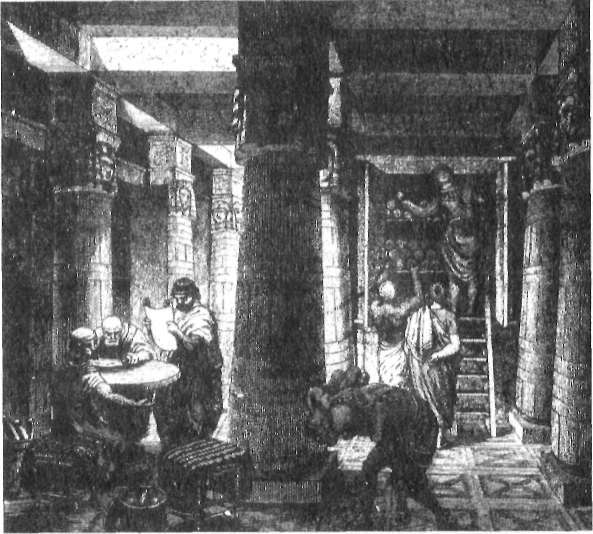

ğısı yukarıya, yukarısı aşağıya benzer" denir. Bu tanımlama Evereıısci oluşumla ilgili çok önemli bir özelliği içinde gizler. Evrendeki bu benzeşim, "benzer benzeri meydana getirir ve benzer benzeri çeker" ilkesini oluşturmuştur.
Evrenin her köşesinde işlemekte olan bu prensip, dünyamızda, "benzer bir işlemin benzer sonuçlar doğuracağı" ilkesini beraberinde getirmiştir.
Destek Alametleri Yasası:
Parça bütüne aittir. Ve parça bütüne ait bilgiye sahiptir.
Evreni oluşturan en küçük birimde bile bütünün bilgisi gizlidir. İşle Ezoterik Öğretiler'de: "İnsanda Tanrısal Sırlar gizlidir, hu nedenle de kendim bilen Rabhini bilir" denmesinin asıl nedeni budur. Evrenin sırlarını çözmek için dünya yeterlidir. Çünkü evrensel oluşum prensibine göre nasıl ki insanda
"Tanrısal Sırlar" gizliyse, dünya da da "Evrensel Sırlar"
gizli bulunmaktadır... Yani evrendeki en küçük bir unsurda bile "•Bütün"e ait bilgi gizli bulunmaktadır.
Bu evrensel prensibin dünyamızda çeşitli tezahürleri vardır. Onlardan biri de, "yeryüzünde gerçekleştirilen bir işle-
Saklı Kütüphane
www.e-kitap.us
"MISIR'IN OLULER KİTABI"
min sonuçları gökyüzünde de tezahür etmektedir" ilkesidir.
Sıraladığımız işte bu iki "Kozmik Yasa" Dünyamız'daki Majik Uygulamalar'ın da temelini oluşturmuştur.
Ancak bu yasalar durdukları yerde majik etkiler meydana getirmezler. Onları tetikleyecek bir unsur gerekir. İşte bu tetikleyici unsur, düşünce enerjisinin konsantrasyonuydu. Bu nedenle majik çalışmalarda düşünce ile meydana getirilen enerji ve bu enerjinin meydana getirdiği etkilerin çok önemli bir yeri vardı.
Maji'nin ne olduğunu anlayabilmek için; öncelikle dü
şüncelerimizin belli bir noktaya; belli bir süre odaklanmasıy-la ne tür sonuçları ortaya çıkartacağını çok iyi farketmemiz gerekir. Düşünce dediğimiz şey, basit anlamda bir takını fikirlerin zihnimizden geçmesi anlamına gelmez. Düşünce temelde bir enerji yayma faliyetidir.
Düşüncelerimizi belli bir konu üzerinde uzun bir süre odaklayabilmek yani konsantre olmak hiç de zannedildiği gibi kolay değildir. Bir konu üzerinde düşünmeye başlar başlamaz hemen zihnimize bir sürü başka düşüncelerin üşüştüğüne şahit olmuşuzdur. Bunun sebebi, düşüncelerimize hakim olamayışımızdır. Dikkat edilirse, aslında sadece düşüncelerimize değil; duygularımıza da hakim olamadığımızı görürüz.
Duygularımıza ve düşüncelerimize hakimi olabilmek için konsantrasyon yeteneğimizi geliştirmemiz şarttır.
"Belki dünyanın en kolay şeyi için; düşünmektir" denir ama işin aslı hiç de öyle değildir. Düşüncenin yönlendirilmesi ve düşüncelere hakirn olunarak onların konsantre edilebilmesi başlı başına özel bir eğitimi gerektirir. İnsan bu konuda kendisini eğitmediği müddetçe, bunu gerçekleştirmesi mümkün değildir.
Tam bir konsantrasyon ustası olan Mısırlı Majlar bunu gayet iyi bilmekteydiler.
Saklı Kütüphane
www.e-kitap.us
"ANTİK MISIR SIRLARI"
Düşünce konsantrasyonlanyla oluşturdukları yoğun
enerji toplarını, Anoloji ve Destek Alametleri Yasaları'm harekete geçirerek; gerek fiziksel, gerekse de ruhsal alanda sıradı-
şı uygulamaları gerçekleştirebilmekteydiler.
Daha sonraları Araplar'a geçen bir uygulama olan İpe Düğüm Atma Teknikleri de hep bu yöntemlerin uygulama sahasına giren majik araçlardı. Burada ipe düğüm atmak; hem düşüncenin konsantrasyounu, hem de benzer bir işlemin yapılması ile Anoloji Yasası'nı hareket geçirmeye yarıyordu.
Böylelikle konsantre edilen enerji hedeflenen olaya yollanıyordu. Majik literatürle söyleyecek olursak, t)rtaya yönlendirilen enerji hedefe bağlanıyor yani düğümleniyordu.
İPE DUGUM ATAN MİSİRLİ MAJLAR
İR9.''
Saklı Kütüphane
www.e-kitap.us
"MISIR'IN OLULER KİTABI"
Bu konuyla ilgili İncilde Peter'in Kilise yöneticisi olarak atanmasıyla ilgili Matta'nın aktardıklarında, bağlama ve çözmeyle ilgili şu ifadeler yer alır:
Sen Peter'sin ve bu kayanın üzerine kilisemi yapacağım... Göklerdeki Krallığın anahtarını da sana vereceğim. Yeryüzünde ne bağlarsan, göklerde de bağlanacak ve yeryüzünde ne çözersen göklerde de çözülecek. (Matta 16/18-20)
İncil'de geçen bu bab, yeryüzünde gerçekleştirilen bir işlemin göksel planda nasıl benzer bir sonuç doğuracağını göstermesi bakımından son derece önemlidir.
Bu konuya İslam Geleneği içinde de rastlamaktayız.
İpi Düğüm atma yöntemi Araplara ve Orta Doğu'ya Mısır'dan geçmiştir. Her majik uygulamada olduğu gibi, ipe dü
ğüm atma tekniği de, ne yazık ki negatif alanda kara maji uygulamalarında da kullanılınıştır. Bu konuyla ilgili kayıtlara ge
çen örneklerden biri de Muhammet Peygamber'e yapılan kara maji ile ilgilidir. Bu konuya yurtdışında yayınlanan birçok kitapta da yer verilmiştir.
Birçok kayıtta hem kadınların, hem de erkeklerden olmak üzere bazı Arap Majisyenler'in bir ip ya da halata sihirli kelimeler okuyarak düğümler attığı ve bu sihirli kelimeleri de attıkları düğümlerin üzerine yazdıkları anlatılmaktadır. Birçok yerde karşılaştı
ğım bir iddaya göre, Lubaid isimli bir Yahudi ve iki kızı, Hz. Muhaınmed'e bir büyü yaparlar. Bir halata on bir düğüm yapıp bir kuyuya atarlar. Bunun Saklı Kütüphane
www.e-kitap.us
"ANTİK MISIR SIRLARI"
üzerine Tanrı en büyük melek Cebrali gönderir ve
Cebrail de peygambere büyüyü nasıl bozacağını öğretir. Bu anlatılanlara göre, eğer bu çözme işlemi yapılmasaydı, peygamberin ölümüyle sonuçlanacak
bir durumla karşılaşılabilirdi. (61)
Kur'an-ı Kerim'in toplam beş ayetten oluşan 113. Suresi tamamen bu konuyla ilgilidir. Surede direkt olarak Cebrail Muhamed Peygambere hitaben, düğüme nefes eden büyücülerin senidinden kurtulması için Rabbine dua etmesini söylemektedir.
Ey Muhammedi De ki: "Yaratıkların şerrinden, bastırdığı zaman karanlığın şerrinden, düğümlere nefes eden büyücülerin şerrinden, hased ettiği zaman hasedçinin şerrinden, tan yerini ağartan Rabbe sığınırım." (Felak Suresi: 113/1-5) İsis'in Düğümü
Bir sembol olarak da karşımıza çıkan İsis'in dügümüyle de hedeflenen, İsis'e ait enerjilerin bulundukları mabede bağlanması yani odaklanmasıydı.
Bu sembol Kulplu haç olarak da sitilize edilmiştir. Ve Mısır'ın en önemli sembollerinden biri haline gelmiştir. Birden fazla anlama sahiptir. Sırların anahtarı olarak da yorumlanan bu sembolün sahip olduğu en önemli anlamı, göksel tesirlerin inisiyeye düğümlenmesiydi. Çeşitli resimlerde karşımıza çıkan, elinde kulplu haç tutan bir Mısırlı, göksel tesirlerin merkezi olduğunu yani bu tesirlerin kendisinde odaklandığını ifade etmekteydi.
Kulplu Haç'ın ifade ettiği bir diğer anlam da Evren'in
Saklı Kütüphane
www.e-kitap.us
"MISIR'IN OLULER KİTABI"
Dört Büyük Eenerjisi ile ilgilidir. Konunun bu yönüyle ilgili
"Gizli Sırlar Öğretisi" isimli kitabımda ayrıntılı açıklamalara yer verdiğim için burada bu konuya girmeyeceğim.
ISIS DUGUMU
KULPLU HAÇ
355
Saklı Kütüphane
www.e-kitap.us
"ANTİK MISIR SIRLARI"
İsmin Mâjik Gücü
Antik Mısır Kültürü'nde varlıkların isimlerine çok ayrı bir önem verilirdi. Geleneksel Mısır Ezoterik anlayışına göre her varlığın taşıdığı ismin o varlığı hem fiziksel, hem de ruhsal olarak etkilediği düşünülmekteydi. Bu inancın kökenini, ismin sahip olduğu anlamı ve titreşimsel özelliğiyle ilgiliydi.
Bu geleneksel düşünceye göre ismin anlamı ve titreşimsel özelliği, fiziksel ve ruhsal alanda önemli bir etki etme gücüne sahipti.
İsmin hem titreşimsel özelliği, hem nümerik (sayısal) de
ğeri, hem de içerdiği anlamı, o isinin sahip olduğu etkiyi belirlemektedir. Ve bu enerjinin yaşamı olumlu ya da olumsuz yönde etkileyebilirle özelliği vardır. Bu etki hem fiziksel bedenimizde, hem de astral bedenimizde gözle görülmeyen sonuçlarm doğmasına neden olmaktadır.
Bunun tam tersi de mümkündü. İsmin sahibi, ismin üzerine de kendi enerjisini bindirmekteydi. Böylelikle o isim, o insanla tam anlamıyla bütünleşen üçüncü bir unsur haline gelmekteydi. Bu unsur da bütüne ait bir parçayı teşkil ettiğinden, ismin üzerine yapılabilecek her türlü majik etkinin ismin sahibine ulaşması mümkün olacak demekti. Ayrıca o ismin sahibinin enerjisini de, yine o isim aracılığıyla çekmek da aynı majik prensiplerle söz konusu olabiliyordu.
İsim sahibini, sahibi ise ismi karşılıklı olarak etkiledikleri için aynı ismi kullanan insanların, isimlerinin sahip oldukları enerjiler aynı olmamaktadır. Kaldı ki, Orta Asya Türk Gelenekleri, Kızılderili Gelenekleri gibi eski inisiyatik kökenli uygarlıklarda, her bir yeni doğan çocuğa ayrı bir isim takma gibi önemli bir gelenek yaşamaktaydı. Aynı gelenek Mısırlılar'da da vardı.
Saklı Kütüphane
www.e-kitap.us
"MISIR'IN OLULER KİTABI"
Mısırlılar hem kendi isimlerinin, hem de kutsal saydıkları varlıkların isimlerinin korunmasına büyük bir özen göstermişlerdir. Bunun en canlı örneği mabetlerinin duvarlarına resmettikleri Osiris, İsis ve benzeri kutsal varlıkların resim ve heykellerin çokluğunda kendisini belli eder.
Mabetlerinde ve mezar odalarında bu denli yoğun olarak kutsal saydıkları varlıkların resim ve heykellerini yapmalarının nedeni, onların enerjilerini oraya odaklamak istemeleriyle ilgilidir. Çünkü o resim ve heykellerle o varlıkların isimleri de anılmakta böylelikle o isimlerin sahip olduğu ruhsal etkiler oraya çekilebilmekteydi. Tabii bu enerji çekme işlemi, rahiplerce özel başka tekniklerde kullanılmak suretiyle, daha etkin bir şekilde uygulanmaktaydı.
İsimler büyüsel güçle eş tutulmuştur. Herhangi bir şeyin adını bilmek onun üstünde belirli bir güç sağlar. Sadece, hakkında hiçbir şey bilinmeyen kontrol edilemez.
Mısırlılar'ın isimlerini özenle korudukları ve onları her türlü negatif enerjiden uzak tutmaya çalıştıkları bilinmektedir.
Bu nedenle tanımadıkları ve iyi niyetinden kuşku duydukları kişilere kesinlikle isimlerini söylemezlerdi. Benzer inanış
hem Kızılderililer'de, hem de Orta Asya Türkler'inde de vardı. Bu inancın Orta Amerika, Orta Asya ve Mısır'da hayli yaygın olması bir tesadüf değildir Bu bölgelerin Mu Kültürü ile ilişkileri dikkate alındığında, bu ortak inancın kökenlerinin nereye dayandığı derhal anlaşılabilir.
Sözün Gücü, Sihirli Sözler - Dualar
Saklı Kütüphane
www.e-kitap.us
"ANTİK MISIR SIRLARI"
Düzenli olarak söylenmesi gerektiğinin vurgulanması, önemli bir açıklamadır. Çünkü belli bir enerjiye sahip kelime ya da cümleleri arka arkaya söylemekle o enerjinin süreklili
ği sağlanmaktadır. Mantra ve zikirlerin de çıkışı bu prensibe dayanmaktadır. Dua ve ilhâhiler için de durum ayinidir Dua ve İlâhilerin temeli, Söz'ün Gücü'ne dayanır...
Mısırlılar bunu "Güç Sözleri" olarak isimlendirmişlerdi...
Kadim zamanlarda ağızdan çıkan söz yaratıcı enerjileri harekete geçirirdi. O yüzden söylenen bir S()zıin geri alınması mümkün değildi. Çünkü sözün kullanımı, tezahür yasalarını harekete geçiren en etken yöntemdir.
Söz, Ruhun gücünü harekete geçiriyor, evrensel enerjiler de ruhsal enerjinin etkisiyle hedeflenen amaca yönleniyor ve sözün amacı bu şekilde gerçekleşiyordu. Yani kelime ya da kelimelerin söylenişi ile bir dizi tetikleme ortaya çıkıyordu. Bunun olabilmesi için bu tetikleme sistemi ile ilgili tam bir bilgiye ihtiyaç vardı.
Dünya üzerinde ezoterik-inisiyatik çalışmaların gerçekleştirildiği hemen her yerde, "Sözün Gücü"ünden bahsedilir.
Ancak şunu gayet iyi biliyoruz ki, günümüze kadar gelinceye kadar sözün gücü yitirilmiştir. Çünkü insanoğlu evrensel enerjilerle doğrudan bağını kaybetmiştir.
Atlantis'ten sonra başlayan bizim devremizde, söz, ikili-düalist bir yapı içinde, çok anlamlı ve birbirine göre anlamı Saklı Kütüphane
www.e-kitap.us
"MISIR'IN OLULER KİTABI"
değişen süreçler için kullanılmaya başladı.Ve gerçeğin sana göresi, bana göresi oluştu. Ve en önemlisi yalan oluştu. Bizim devremizde artık yalan söylenebiliyordu.Yani gerçekler kolaylıkla karşıdaki bir varlıktan saklanabiliyordu. Hatta bundan yararlanarak kişisel fayda bile sağlanır oldu.
Tufan Öncesi'ne ait uygarlıkların ilk dönemlerinde yalan yoktu. Tüm gerçekler olabildiğince açık herkesin gözü önünde bulunuyordu. Çünkü içtenliğin saklanması diye bir olgu yoktu. Çünkü sözün enerjisi sonsuzdu ve yalanın hedef aldığı şeyin o günlerde anlamı ve hükmü yoktu. O yüzden yalan yoktu. Çünkü "Sözün Gücü" vardı.
Günüınüzde "Sözün Gücü"ne yeniden ulaşabiliriz...
Bizim devremize ait dinsel çalışmalarda evrensel enerjileri harekete geçiren "Sözün Gücü"nden yararlanabilmek için yapılan pratik çalışmalar, duanın temelini oluşturmuştur.
İnsanlar bireysel ya da topluca gerçekleştirdikleri ibadetleri sırasında ettikleri dua ile, bilmeden de olsa bu tekniği aslında kullanmış ve halen de kullanmaya devam etmektedirler.
"Sözün Gücü" ile günümüzde de herkes için evrensel enerjileri harekete geçirmek mümkündür. Ama yeter ki, bunu bilinçli olarak yapabilelim.
Sözün Gücü nereden geliyordu? Bu meseleyi birkaç
cümleyle özetleyelim:
Birbirini tetikleyen enerjiler kelimelerin telaffuzuyla başlıyordu...
1- Duayı oluşturan kelimelerin üzerine yüklenen enerjinin bu kelimelerin telaffuzu sırasında açığa çıkması.
2- Bu sözlerin söylenişi ile oluşturulan düşünce enerjisi-
Saklı Kütüphane
www.e-kitap.us
"ANTİK MISIR SIRLARI"
nin konsantrasyonu. Ve bu konsantre edilmiş enerjinin yönlendirilmesi.
İşte bu yönlenen enerjiler fizik planda ve ruhsal planda ayrı ayrı etkilere neden olmaktaydı. Fizik planda fiziksel etkilere neden olan bu enerjiler, ruhsal planda (astral) ruhsal etkilerin harekete geçişine neden olmakta ve bu harekete geçen enerjiler tekrar fizik plana yansımaktaydı.
MISIR MUMYALARI
Ölüler Kitabı'nın çeşitli bölümleri, ölünün mumyalanmış
bedeni üzerine yüksek sesle okunmaktaydı. Bunun yapılmasındaki amaç, bedeninden ayrılmış olan varlığı ycinlendirmek ve ona başta öte alemle ilgili olmak üzere inisiyatik bilgiler vermekti.
İşte bu noktada akıllara bir soru talılmaktadır: "Peki ama ölüler neden mumyalanırdı..."Mumyalamanın ardında metapsişik bir düşünce bulunmaktaydı. Ancak bu metapisişik düşünce üzerinde çok fazla durulmamıştır Mumyalamanın metapsişik anlamına geçmeden önce, mumyalamanın nasıl yapıldığını bir hatırlayalım.
Tarihçiler'in Arkeologların, Fizikçiler'in ve Kimyacılar'nı birlikte yürüttükleri araştırmalardan çıkan sonuçlara göre: Mısır'da Mumyalama işlemi yetmiş günde tamamlanırdı. Önce beden içindeki çürüyebilcek her şey boşaltılır ve vücut sodyum karbonatlı bir karışım içinde kurumaya bırakılırdı. Kalp ve böbrekler genellikle bedende bırakılır; karaciğer, akciğerler, 360
Saklı Kütüphane
www.e-kitap.us
"MISIR'IN OLULER KİTABI"
Bu anlatılanlara bir itirazımız yok. Ama ortada bir sorun bulunmakladır. Bu anlatılanları aynen uygulayarak yapılan mumyalama deneylerinin tümü başarısız olmuştur. Çünkü günümüz biliminin hesaba katmadığı bir etken, bu araştırmalarda göz ardı edilmişti.
Mısırlılar mumyalama işlemlerini yukarıda özet halinde aktardığımız gibi yapıyorlardı ama bu işlemlere ek olarak ayrıca manyetik enerjilerden de yararlanıyorlardı. İşte göz ardı edilen etken buydu.
Metapsişik çalışmalarda "manyetik dondurma" adı verilen bir uygulama vardır. Bu uygulamada ellerden çıkan manyetik enerjiler sayesinde, ölü organik maddeler çürümeden ve büyük bir oranda orjinal hali bozulmadan kalabilmektedir.
Günümüz metapsişik çalışmalarında manyetik enerjilerini elleri vasıtasıyla aktarabilme yeteneğine sahip kişilerin (manye-tizörlerin) ölü organik maddeleri (balık, çiçek, sığırdili vb.) manyetik yolla mumyalayabildikleri deneylerle ispatlanmış bulunmaktadır Manyetik etkilerin gücüne göre bu mumyalanmış organizmalar bazen yıllarca renk, biçim ve bazı özelliklerini (tad, koku hariç) bozulmadan kalabilmişlerdir. Yoğun manyetik enerjilerin aktarılabildiği deneylerde, mumyalanan organik Saklı Kütüphane
www.e-kitap.us
"ANTİK MISIR SIRLARI"
maddelerin üzerleri sanki ince bir mum tabakası sürülmüş görünümüne bürünmüşlerdir.
Günümüzde Yuıtdışı'ndaki Üniversiteler'in Parapsikoloji kürsülerinde deneysel olarak araştırılan bu uygulama tekni
ğinin en iyi uygulayıcıları, bu bilglerini Atiantisliler'den almış
olan Mısırlılar'dı.
Firavunların laneti değil, manyetik etkiler!...
Bazı firavunların mezarlarına giren tarihçilerin ve arkeologların başlarına gelen başdönmesi, bayılma, halisinasyon-1ar görme ya da fiziksel bazı rahatsızlıklarla karşılaşmak gibi fenomenlerin nedenlerini, işte bu yoğun manyetik enerjilerde aramak gerekir. Binlerce yıl bozulmadan bu bedenlerin saklanabilmesi için ne kadar yoğun manyetik enerjilerin uygulanmış olabileceği düşünüldüğünde, yaşanılan bu sıradışı fenomenler daha iyi anlaşılabilir. (6'2) Neyse bütün bunları bir kenara bırakalım... Ve asıl sorulması gereken soruyu soralım:
- 'Eski Mısırlılar ölülerini neden mumyalıyorlardı?..."
Eski Mısırlılar'ın en popüler geleneklerinden biri kuşkusuz ki, ölülerini mumyalayarak saklamalarıdır. Ancak şunu kesin olarak söyleyebiliriz ki, bu denli popüler olmasına rağmen mumyalama geleneklerinin gerçek anlamı üzerinde çok fazla durulamamıştır.
Konuyu açahm...
Gerek eski ezoterik bilgiler, gerekse de son elli yıldır günümüze kadar yapılagelmiş metapsişik alandaki çalışmalara göre; ölümden sonra ruh ve beden ilişkisinin bir an önce ke-
Saklı Kütüphane
www.e-kitap.us
"MISIR'IN OLULER KİTABI"
silmesi, ruhun özgürleşmesine ve bu dünyadan daha kolay kopabilmesine büyük bir katkı sağlamaktadır. Söz konusu ettiğimiz bu ruh ve beden ilişkisinin ölümden sonra kesilmesine en iyi olanak sağlamanın yolu, bedenin bir an önce ortadan kaldırılmasıdır. Çünkü beden bir girdap gibi astral bedeni kendisine çeker. Ve varlığın spatyoma geçişini zorlaştırır. Bundan kurtulmak için bedeni bir an önce yakmak ya da gömmek en uygun yoldur.
İnisiyatik Ekoller'deki bu farklılığın nedeni neydi?...
Bilindiği üzere Mısır ve Hint - Tibet Ezoterizmi dünyaya felsefi açıdan yön vermiş iki büyük merkezdi. Ezoterzm'in en önemli kuralı, nerede olursa olsun, hangi toplumda varolmuş
olursa olsun, temel gerçekleri hep aynı olmak durumundaydı.
Şekilsel olarak bazı farklar varmış gibi görünse de, kökenine inildiğinde, tüm bu merkezlerdeki ezoterik kökenli bilgilerin hep aynı olduğu görülmüştür. Ancak bu sefer ciddi bir farklılıkla karşı karşıya olduğumuz görülmektedir. Eiğer ölüm ve ölüm ötesi ile ilgili ezoterik bilgiler de aynı istikametteyse, bir yerde cesedin yakılması bir yerde ise yokedilmek bir yana, aksine saklanmak için özel uygulamalar yapılması bu konuda ciddi bir farklılığın olduğunu göstermektedir.
İlk başta gerçekten de bu bir çelişkiymiş gibi görülebilir.
Bu nedenle de meseleyi bu şekilde ortaya koymak istedim.
Öncelikle şunu açıklamak isterim ki, ölülerin mumyalanması ilk başta genele yayılmış bir uygulama değildi. Mumyalanan ölüler inisiyatik alanda önde gelen kişilerdi.
Bu, kökeni Atlantis'e ait majik bir uygulamadır. Mısır'ın son dönemlerinde dejenere edilmiş ve olur olmaz herkes mumyalanmaya başlanmıştır. Hata ölenin sevdiği hayvanlar bile...
Saklı Kütüphane
www.e-kitap.us
"ANTİK MISIR SIRLARI"
Atlantis'e ait bu majik uygulama, Orta Asya Türkle-ri'nde görülen Atalar Kültü ile bağlantılı bir konudur.
Konu ölümle ilgili olduğu için konuyu önce metapsişik kurallar içinde ele almak icabeder.
Çeşitli toplumlarda da görülmekle birlikte özellikle Orta Asya Türk Geleneği'nde ön plana çıkmış olan Atalar Kültü, yaşarken ailenin koruyucusu ve reisi olan büyüğün, öldükten sonra da ailesini koruyacağı inancına dayanır. Bu inancın temelinde ise, metapsişik çalışmalarda ayrıntılı bir şekilde dile getirilmiş olan insanlara yardım eden bedensiz rehber varlıklar yatmaktadır.
Gelelim Mısır'a...
İlk başta mumyalanan ölülerin inisiyatik alanda önde gelen kişiler olduğundan söz etmiştik. Bunun sebebi, söz konusu kişinin tesirlerini öldükten sonra da çekebilmekti. Bedenin ortadan kaldırılmayışıyla bu çok daha kolay sağlanabiliyordu.
O dönemler Mısır inisiyatik çalışmaların merkezi olduğu için, bu enerjilerin merkezileştirilmesi çok önemliydi. Bunun için de böyle bir teknikten yararlanmışlardır. Bedenli yaşamlarında Mısır İnisiyasyonu'na hizmet eden bu varlıkların öldükten sonra da bu fonksiyonlarına belli bir süre daha devam etmelerini normal karşılamak gerekir.
Mısır inisiyasyon merkezi olma fonksiyonunu bitirdiğinde her halde onlar da buraları çoktan terkedip gitmişlerdir.
SİMYA
Mısır'da uygulanan bir başka gizemli çalışma da simya alımnda kendisini göstermiştir.
Simya: Maddenin gizli prensiplerini bulup maddeye hükmetmeyi amaçlayan okült bir bilim dalı olarak tanımlanmak-
Saklı Kütüphane
www.e-kitap.us
"MISIR'IN OLULER KİTABI"
tadır. Simya isminin kökeni Arapça'daki "El Kimya" sözcü
ğüdür Araplar'ın bu ismi kullanmalarının nedeni isi Mısır'la bağlantılıdır Antik Çağ'da Araplar, "siyah ülke" anlamnıa gelen "Khem" sözcüğünü Mısır için kullanmaktaydılar. Mısırlılar'da gördükleri bu çalışmaya da bu isimden hareketle türettikleri "El Kimya" ismini vermişlerdir.
Günümüze kadar gelen Kimya isminin kökeni de bu
isimlerle ilgilidir. Günümüz Kimyası'nın doğuşu da tamamen Simya'ya dayanır.
Atlantisliler'in Mısır'a geldiği ilk dönemlerde Simya Thot Öğretisi'nin içindeki bir unsurdu. Sonraları bu tek başına alınmaya başladı. Bu haliyle en son İskenderiye Okulu'nda varlığını sürdürdü. Avrupa'ya ve Arabistan'a buradan yayılmıştır Ancak o ilk günkü halinden çok şeyler kaybetmiş ve bir hayli yozlaşmış bir şekilde oralara ulaşabilnıiştir Avrupa'da uzun bir süre büyücülükle eş tutulmuş gizli bir çalışma olarak görülmüştür O dönemlerde Avrupa'daki simyacıların büyük bir bölümü Bakır'ı Altın'a dönüştürme çabası içine girmişlerdi. Ancak orjinal halinden oldukça uzakla-
şıldığı için bunda başarıya ulaşmak hiç de kolay olmuyordu.
Hatta neredeyse imkansız bir hale bürünmüştü.
Bu amaçla adına "Filozof Taşı" denilen bir maddeyi elde etmeye uğraşıyorlardı. Elde etmeye çalıştıkları ., tüm minerallerin türediği ilk madde cevheri olan filozof taşının iki önemli özelliği vardı. Birinci özelliği maddelerin birbirlerine dönü
şümünü sağlaması ikincisi ise ölümsüzlük sağlamasıydı.
Ancak bu tanımlamalar Ezoterik Simya'nın anlaşılamamış, yozlaştırılmış sembollerinden ibaretti.
Mısır'da Thot Öğretisi'nin içinde bir zamanlar varlığmı sürdüren ve buradan da İskenderiye Okuluna taşınan Ezoterik Simya'da asıl amaç maddeleri birbirine dönüştürmek ya da uzun yaşamak değil, aydmlanmayı sağlayan "Şuur Dönüşü-
Saklı Kütüphane
www.e-kitap.us
"ANTİK MISIR SIRLARI"
mü"nü sağlamaktı. İskenderiye Okulu'nda bu dönüşüme
"Büyük Eser" anlamına gelen "Ars Magna" ismi verilmekteydi.
Ezoterik Simya ile uğraşan İskenderiyeli İnisiye Simyagerler için "Filozof Taşı" astral tortuların tamamiyle ortadan kaldırılmasını ifade eden bir sembolden ibaretti.
İnisiye Simyagerler için metalin altına dönüşümü ise, bu astral arınmadan sonra meydana gelen auranın altın renginde ışıldamaya başlamasının bir sembolü konumundaydı.
Ölümsüzlük kazanmak ise Dünya Okulu'na tekrar doğma zaruretinin ortadan kalkmasına karşılık gelmekteydi. Avrupa'daki simyagerler, ölümsüzlük sağlayan filozof taşının sıvı haline Abı Hayat ismi vennişlerdi. Ancak bu "su" da, onların bildiği anlamda bir sıvı değildi. Bu su, göksel - spiritüel tesirlere karşılık gelen bir semboldü. Onlar bunu da yanlış anlamışlardı.
Orta Çağ'ın simyagerleri işi asıl amacından öyle bir çıkartmış durumdaydılar ki, tüm bunların birer ezoterik sembol olduklarını akıllarına bile getirmeden, imkansız bir uğraşın içine kendilerini adeta hapsetmişlerdi.
Bakırı altına çevirerek dünyasal zenginlik kazanına hevesleri gözlerini öyle bir karartmışti ki, bu yoldaki asıl hedef olan arınma ve sadeleşmenin gerçekleştirilmeden madde üzerinde hakimiyet kurulamayacağını hatırlarına bile getiremi-yorlardı. Oysa ki gerçekten de maddeleri birbirine çevirebilmek de mümkündü... Altın elde etmek de... Ama amaç sadece altın olunca sadeleşme olamıyor, dolayısıyla hcdele ulaşı-lamıyordu.
Çünkü Tufan Öncesine ait bilgilerden uzaklaşılmış Demir Çağı'nın yozlaştırıcı etkisi altına girilmiş durumdayday-dı...
Saklı Kütüphane
www.e-kitap.us
"MISIR'IN OLULER KİTABI"
ATLANTİS
Mısır'ın Ölüler Kitabı'nda Tufan Öncesi Uygarlıklar ve bu uygarlıklarla ilgili çeşitli bilgilere de yer verilmiştir.
Aşağıdaki satırlar Atlantis ve Atlantis'in son dönemlerinde ortaya çıkan büyük savaşla ilgilidir.
Bu anlatılanlarla, Kur'an-ı Kerimde anlatılan geçmiş uygarlıklar hakkındaki il'adelerin birbirlerine ne kadar benzedi
ğine özellikle dikkatlerinizi çekmek istiyorum:
Saklı Kütüphane
www.e-kitap.us
"ANTİK MISIR SIRLARI" '
"Nut'un Çocukları" ile Mu Uygarhğrnın mirasını devralan Atlantisliler kastedilmektedir.
Metnin devammda yaşanan doğal aletler "fırtına" ve
"felaket" olarak nitelenmekte ve bu felaket bittiğinde Osiris'e atıf yapılmaktadır ki, bu da Osiıis Öğretisi'nin tüm bu olup biten yıkımdan sonra varlığını sürdüğüne bir işarettir.: Artık bu bölümü noktalıyoruz...
Görmüş olduğunuz gibi, Mısır'ın Ölüler Kitabı öncelikle Mısır'ın İnisiyeler Kitabı'dır. Aynı zamanda majik bir kitaptır.
Hem öldükten sonra varlığın geçireceği safhaları, hem de henüz daha Dünya'da yaşarken, inisiye adayına Öte Alemi tanımada büyük bir işlev görmekteydi.
Her ne kadar o ilk orjinalinin bir kopyası günümüze kadar gelememiş olsa da, kopyalarının, kopyalan bile, bir zamanlar Mısır mabetlerinin derinliklerinde neler yaşandığı ve nelerle uğraşıldığı konusunda bize önemli ipuçlarını verebilmektedir. Gelecekte değeri sanırım çok daha iyi anlaşılacaktır... Böylelikle şu an için ulaşamadığımız ve mabetlerin de-
Saklı Kütüphane
www.e-kitap.us
"MISIR'IN OLULER KİTABI"
rinliklerinde kalan diğer sırlar da, umarım bir gün tüm açıklı
ğıyla ortaya çıkacaktır...
Mısır Mabetleri bugün sessizliğe gömülmüş ve yüzyılların aşınmasına maruz kalmış durumdadırlar.
Bir zamanlar burada yaşananlar tarihin en büyük gizlerin-denden biridir. Ve bu gizemlerin büyük bir bölümü halen tarihin karanlıklarına bürünmüş durumdadır.
Saklı Kütüphane
www.e-kitap.us
7
MISIR İNİSİYELERİ
Mısır'da yüzyıllarca sürdürülen inisiyatik eğitimin dünya üzerinde birçok etkileri ve bu etkilerin çeşitli yansımaları olmuştur. Çünkü dünya üzerindeki birçok ülkeden kalkıp Mısır'a gelip inisiye edilen kişiler, daha sonra geldikleri ülkelere dönmüşler ve eğitildikleri merkeze ait bilgileri üstü örtülü bir şekilde kendi ülkelerinde dile getimıişlerdir. Böylelikle inisiyatik sırlar bilgisine ait gelenek, farklı yerlerde, farklı görünümler altında yeşerme imkânı bulmuştur. Bunların başında Antik Yunan Kültürü gelir.
"Sayılar evrene hükmeder..."
"KutsalMatematik'' ve "Sayılar Bilimi", Fisâgor tarafm-
dan işte tek bir cümleyle böyle ifade edilmişti... Evet... Antik Yunan Kültürü dendiğinde ilk akıllara gelen isim Fisagor'dur.
Fisagor gerçekten de. Yunan Kültürü'nde çok önemli bir basamak taşı oluşturmuştur. Ancak Fisagor'a gelmeden önce Saklı Kütüphane
www.e-kitap.us
"ANTİK MISIR SIRLARI"
Yunanistan'da yaşananları kısaca hatırlayalım... Böylelikle Mısır Kültürü ile Yunan Kültürü'nün bağlantılarını çok daha iyi gözler önüne serme imkânını elde edebileceğimizi düşünüyorum...
FİSAGOR ÖNCESİ Y U N A N İ S T A N
Dişil Ay İnisiyasyonu'nun dejenere edilmiş hali olan
"Baküs" ile Eril Güneş İnisiyasyonu'nun dejenere edilmiş
hali olan "Apollon" dinleri Yunanistan'da bir arada yaşatılmaklaydı. (63) Bunlar bir arada yaşamaktan ziyade, birbirleriyle sürekli çekişen ve birbirlerine üstünlük sağlamaya çalışan iki ayrı rahipler grubunun başını çektiği bir kaos ortamı içinde bulunmaktaydılar demek, aslında daha doğru olur.
İşte bu dönemde (M.Ö. 800 - 700) Apollon Rahipleri'nin en büyük merkezi Delf Mabedi'ydi. M.Ö. 700'lerde bu iki grup arasındaki sürtüşme ciddi kıyımlara kadar ulaşmıştı.
Azınlıktaki Apollon taraftarları, çoğunluğu ellerinde bulunduran Baküs taraftarlarınca yokedilrae tehdidi altında bulunmaktaydılar. İşte bu ortamda Örfe, Delf Mabedi'nin bakire rahibelerinden birinin oğlu olarak dünyaya geldi. Bu mabbette görevli rahibelerin bakire olması zarureti vardı. Bu nedenle söz konusu rahibenin, Tanrı Apollon tarafından hamile kaldığı iddiası halk arasında dolaşmaya başlamıştı. Benzer fenomenler bilindiği gibi başka dinlerde ve başka toplumlarda da ortaya çıkmıştır.(64) Göksel Güçlerce hamile kalan bir bakire rahibeden doğduğu ileri sürülen Orfe'nin yaşamı tehlike altındaydı. Baküs taraftarlarının elinden kurtulmak için Örfe Yunanistan'dan kaçarak Mısır'a geldi ve Osiris Rahipleri'ne sı
ğındı.
Saklı Kütüphane
www.e-kitap.us
"MISIR INISIYELERI"
Burada inisiye edilen ve Osiris Rahipleri arasında 20 yıl geçirerek "Sırlar Öğretisi"ni alan Orfe, Apolion Ögretisi'ni yeni baştan revize edip düzeltmek ve ona yeni bir çehre vermek göreviyle Osiris Rahipleri'nce ülkesine geri gönderildi.
Mısır'a geldiği döneme kadar Yunanistan'da Apollon'un Oğlu olarak isimlendiriliyordu. Orle ismi Mısır'daki eğitimini tamamlayıp Yunanistan'a döndüğünde kendisine verildi.
Anlamı "Şifalı lşık".
Bir zamanlar Osiris'in Atlantis'te yaptığı gibi, güçlü kişiliği ve bilgeliği sayesinde kısa sürede çevresine birçok yandaş topladı. Baküs Rahipleri'nin karşısına dikilecek kadar güçlenen Orle taraftarları, halk üzerinde pozitif yönde büyük bir etki alanı yaratmayı başardılar.
Orle kendi ekolünü kurarken eski Yunan inançlarını reddetmedi. Eski inançlardaki Zeus, Diyonizos gibi ilâhlara ezoterik anlamlar yükleyerek Apolion Kültü'nün içinde bunları eritme ve bütünleştirme yöntemine başvurdu.
Bir zamanlar Delf Mabedi'nde yaşatılan Apolion Kültü, Örfe tarafından revize edilip dejenere o l m u ş yönlerinden arındırıldıktan sonra Diyonizos Kültü olarak da anılan bir ekol yine aynı mabette yaşatılmaya devam ettirildi.
Böylelikle ortaya "Zeus" ve "Diyonizos Kültleri" ortaya çıktı.
Aslında Orfe'nin yaptığı yozlaşan eski inançlara ait sembollerin asıl anlamlarını kendi öğretisi içinde Yunan'a yeniden hatırlatmaktı.
Örfe kendi öğretisini halka açıklarken Mısırlı rahiplerin yöntemini kullandı ve sırları perdeleyerek aktardı. Böylece Yunan Mitolojisi'nin ana öğeleri oluşmuş oldu. Ve bunu yaparken dejenere olmuş Ay İnisiyasyonu'nun bir uzantısı olan ve o dönemler Yunanistan'da hakim öğreti halinde bulunan Baküs Dini'ne karşılık Diyonizos Kültü'nü etkin kıldı.
Saklı Kütüphane
www.e-kitap.us
"ANTİK MISIR SIRLARI"
Halk'ın Orfik Öğreti'den anladığıyla, bu öğretinin asıl sırlan hiçbir zaman aynı olmadı. Zaten aynı olmamasına bizzat Örfe özen göstermişti. Çünkü Mısırlılar'ın kuralı böyleydi ve o da kayıtsız şartsız bu kurala uymak zorunluluğundaydı. O da öyle yaptı...
Orfik Öğreti'nin halka açıklanan kısmının özeti şuydu: Kendini Bil
Bir zamanlar Delf Mabedi'nde yaşatılan Apollon Kültü, Oıfe tarafından revize edilip dejenere olmuş yönlerinden arındırıldıktan sonra, Diyonizos Kültü ile birlikte yine aynı Saklı Kütüphane
www.e-kitap.us
"MISIR INISIYELERI"
mabette yaşatılmaya devam ettirildi.
Orfe'nin Diyonizos'u inisiyeler arasında "Tanrısal Işık"
olarak sembollcştirilmişti. Bu ışığa ulaşabilmek için insanın kendi içinde gizli olan bu ışığa ulaşması gerekmekteydi. Bunun yolu ise insanın kendi sırlarını tanımaktan yani kendini bilmekten geçmekteydi. Bu nedenden dolayı da mabedin kapısına iki sözcükten oluşan şifreli bir cümle yazılmıştı:
"Kendini Bil"
Daha sonraları bu söz, Sufiler arasında da yayılarak,
"kendini bilmeyen Rabbi'ni bilemez" şeklinde Anadolu'da da kullanılmaya başlanmıştır...
Dört Dorik sütun üzerindeki üçgen bir çatıdan oluşan Delf Mabedi, sadece Ezoterik Öğreti'nin temellerini bünyesinde barındırmakla kalmamış, bu şekliyle de büyük bir sırrı içinde barındırdığını gelecek kuşaklara aktarmıştır. Çünkü mabedin üzerine inşa edildiği dört sütün, Mu İnisiyatik Kültürü'nün temelini oluşturduğu "Dört Büyük Kozmik Varedici
Gücün" sembolleriydi.
Bunlar Ruh Enerjisi, Zaman Enerjisi, Fizik Enerjisi ve Hayat Enerjisi'ydi. Dış halkaya ise bu sır: Ateş, Hava, Toprak ve Su sembollerine büründürülerek aktarılmıştır.
Bu dört sütün aynı zamanda insanoğlunun varolduğu fizik ortamı yani dünyayı, bir başka deyişle mikro kozmosu da temsil etmekteydi. Dört sütunun üzerindeki, ucu yukarı, yani İlâhiliğe dönük olan üçgen tavan ise, insanın ulaşmaya çalıştığı Tanrısallığın yani makro kozmosun sembolüydü.
Dört ana sütun ve tepesindeki üçgen biçimli çatısı bulunan Delf Mabedi'nin içinde ateş yanan Altın bir kaseyi başlarıyla tutan, birbirine spiral şeklinde sarih üç yılandan oluşan Bronz bir sütun bulunmaktaydı.
Saklı Kütüphane
www.e-kitap.us
"ANTİK MISIR SIRLARI"
Bu sütun daha sonraları Osmanlılar'ca İstanbul'a getirilmiştir. Halen, üst kısmı kırılmış durumda, İstanbul'un Sultanahmet Meydanı'nda bulunmaktadır.
Örfe, Mısır'da öğrendiklerini aynen uygulamış kendi okulunu kurmuş ve kendi yandaşları arasından uygun gördü
ğü kişileri seçerek, onları sırlar öğretisine inisiye etmiştir.
İşte o günleri zihnimizde daha iyi canlandırabilınek için gelin şimdi Delf Mabedi'nin içinde yaşananları hep birlikte izleyelim...
Delf Mabedi'nde İnisiyasyon
Rahipler meşalelerle aydınlatılmış sunağın çevresinde ilâhiler söyleyerek büyükçene bir halka oluşturacak şekilde sıralanmışlardı.
Elinde kozalak başlı asası ve belinde ise ışıltılar saçan kristallerle bezenmiş, Altın'dan yapılmış bir kemer bulunan Örfe, üstüne giydiği beyaz keten elbisesiyle ağır ağır yürüyerek rahiplerin oluşturduğu halkanın tam ortasına gelip, heyecandan rengi solmuş ve hayranlıktan titremeye başlamış bir halde kendisini bekleyen müridinin yanına oturmuştu...
Uzun bir süredir mabette eğitimi süren genç müride Delf in sırları az sonra Örfe tarafından rahiplerin huzurunda açıklanmaya başlayacaktı...
Meşalelerin aydınlattığı mabedin sunağında rahiplerin söylediği ilâhi, Orfe'nin yerini almasıyla bir anda kesilmiş ve herkes bundan sonra olup bitecekleri beklemeye başlamıştı...
Mabedin derinliklerinden gelen meditatif bir müziğin sesi, Orfe'nin sözleriyle tam aynı anda başlamış ve Orfe müridinin omuzuna elini atarak ilk sözlerine babacan bir tavırla şöyle başlamıştı:
Saklı Kütüphane
www.e-kitap.us
"MISIR INISIYELERI"
Hakikate ulaşabilmek için kendi iç aleminin derinliklerine gömül.
Bedenini düşüncenin ateşiyle eritip yok et. Alev nasıl için için ke-mirdiği odundan ayrılıp serbestleşiyorsa, sen de maddeden aynı şeklide kopup serbestleş. Ruhun ancak bu takdirde Ezeli -
Ebedi Sebeplere doğru yükselebilir.
Şimdi sana Delf'e ait ilk sırları örtülü bir şekilde ifşa edeceğim...
Bu sırların üzerindeki örtüyü açacak olan ben değilim. Bunu ancak sen yapabilirsen, mabedimizin sırlarına ulaşabileceksin.
Önce şu yüce sırrı dinle:
Yer ile Gök evlidir. Ancak Gök ile Yer arasındaki bu İlâhi Aşkı, özel yol mensubu olmayan kişi bilemez.
Engin göklerde de, yeryüzünün derinliklerinde de Tek Olan Varlık hüküm sürmektedir. Bu varlık Zeus'tur.
Çok latif aşk ve sevgi de odur, kudretli kin de odur. O hem eril hem de dişil ateştir. Hem Zevc'dir, hem de Zevce. Hem ilâhi Ana, hem de ilâhi Baha'dır. O yüce bir Kral yüce bir mürşittir.
Bazen sevgisiyle yeryüzünü kucaklar bazen de oklarıyla yeryüzünü vurur. Ama O'nun rahipleri olan bizler, onun özünü biliriz.
Biz onun oklarından korunabiliriz ve hatta bazen onları yönlendirebiliriz bile.
Diyonizos ise O'nun Oğludur. Yani O'nun tezahür etmiş kelâmıdır. Bir zamanlar geldiği mekanı gökler ama şimdi yaşadığı mekanı ise yaşayan kalplerdir. O kalplerde uyuyan bir Tanrı'dır.
Onu ancak özel yol mensupları uyandırabilir. Bunu sen de yapabilirsin...
Sen de bizlerden biri olabilirsin. Gönül gözünle tüm bu anlattıkları seyredebilir ve kavrayabilirsin. Bizler ruhların kurtarıcılarıyız.
Mıknatıslar misali biz insanları cezbederiz. Tanrılar da bizi. Tanrılar bizde ölür, bizde dirilir.
Saklı Kütüphane
www.e-kitap.us
"ANTİK MISIR SIRLARI"
İşte tam bu sırada Orfe'nin önünde diz çökmüş ve ellerini gökyüzüne doğru kaldırmış, vecd hali içinde mürşidini dinleyen müridin yanına gelen bir rahip, müridin başına ellerini koyarak güçlü manyetik enerjilerini aktarırdı. Böylelikle müridin vecd halini daha derinleşmesine yardımcı olurdu. Rahip ellerini müritten çekerken şunları söylerdi:
Söze dile sığmaz Zeus ile, her üç alemde de yani ölüm ötesi de-rinlikerde de, dijnyada da, göklerde de onun sırrını ifşa eden Diyonizos senin benliğini Tanrılar'ın ilmiyle doldursun.
Bir süre sonra içine girmiş olduğu vecd halinden çıkan müritin çevresinde halka oluşturmuş bulunan rahipler, dönerek dans etmeye başlarlardı.
Sırlar Ritüeli adı verilen bu ayinin sonunuda mürit sütün-lu salondan çıkartılarak tek basma bir odaya alınarak birkaç saat dinlendirilirdi. Vecd halinden yeni çıktığı için buna ihtiyaç vardı. Gerekli olan dinlenme süresinin sonunda Oıfe yine o kendisine has heybetiyle müridin odasına gelirdi.
Mürit yaşadıkları ve hissettikleri ile ilgili kısa bir açıklama yaptıktan sonra sözü yine Örfe almaktaydı.
- Buradan Tanrılar'a doğru uzanan yol diktir, çetindir, zorlu bir yoldur bu. Önce çiçekli bir patika gelir. Ardından aşılması imkansızmış gibi görünen dik bir yamaç, sonra da muazzam bir mekanın ortasında yer alan yıldırımlı kayalıklar. Görücünün ve Elçi'nin yeryüzündeki kaderi budur evladım... Sen ovadaki çi
çekli patikada yürü. Ötesini bırak.
- Susuzluğumu giderdikçe hararetim daha da artmakta. Bana öğretmiş olduğun Tanrısal hiyerarşide yer alan varlıklan görmek Saklı Kütüphane
www.e-kitap.us
"MISIR INISIYELERI"
mümkün mü? Onları bir gün görebilecek miyim?
- Evet ama beden gözlerinle değil. Gönül gözünle. Fakat şu anda sadece beden gözlerinle görmeyi biliyorsun. Vecd'deki derinleşmen yeterli gözükmüyor. Gönül özünü açabilmen için uzun süre çalışman gerek. Büyük ıstıraplara katlanman gerek. Bu zorlu yola girmeye kendini hazır hissediyor musun?...
Bu yolda ilerlemeyi seçip seçmemek tamamen müridin seçimine bırakılmaktaydı. Eğer bu zorlu yola girmeye mürit karar verirse, inisiyasyonun bir üst aşamasına geçilmekteydi ki, bu inisiyasyonun üçüncü ve son aşamasına karşılık gelmekteydi.
Aynı zamanda bir sınav niteliği de taşıyan bu karşılıklı konuşma sonucunda eğer mürit devam etme kararı alırsa, Örfe sözlerini şöyle bitirirdi.
- Madem ki istiyorsun, dinle öyleyse... Tesalya'daki sihirli Tampe Vadisi'nde özel yol mensubu olmayanlara yasak olan mistik bir mabet vardır. Özel yol ehline ve görücülere Diyonozos işte orada görünmektedir. Gelecek yıl seni orada düzenlenecek gizli ayine davet edeceğim. Orada sihirli bir uykuya dalacaksın, işte o sırada ben de senin gözlerini ilâhi Alem'e açacağım. Yeter ki, o güne kadar auran temiz kalabilsin. Aksi takdirde orada muhatap olacağın enerji karşısında felç geçirebilir hatta yaşamını dahi yitirebilirsin.
Mürit o gün gelinceye kadar mabette tam bir arınma çalışmasından geçirilmekte ve kendisine mabedin gizli kitapları okutturulmaktaydı.

Saklı Kütüphane
www.e-kitap.us
"ANTİK MISIR SIRLARI"
Sedir ağacından yapılmış sandıklarda saklanan bu kitaplar papirüs rulolarından oluşmaktaydı. Bunların bir kısmı Orfe'nin Mısır'dan getirdiği papiılis rulolarıydı. Diğerleri ise mabedin yazıcıları tarafından Fenike ve Yunan dillerinde yazılmış olan papirüs rulolarından oluşmaktaydı. Yunan dilinde bizzat Orfe'nin yazdığı kitaplar da mabedin kütüphanesinde bulunmaktaydı.
Delf Mabedi'nin kitaplığında saklanan bu ruloların çok az bir kısmı günümüze kadar gelebilmiştir. Büyük bir bölümünün akıbeti bilinmemektedir. Eğer bir zamanlar birileri tarafından hiç değilse bazıları saklonmışsa, umarız aradan geçen süre içinde kaybolmomışlardır.
Saklı Kütüphane
www.e-kitap.us
"MISIR INISIYELERI"
Orfe tarafmdan kaleme alındığı bilinen ama ne yazık ki günümüze kadar gelememiş olan bu kitaplar arasında şunlar yer almaktaydı:
Hermetik felsefe taşını konu alan ''Argonotikler", kozmogoniyi işleyen "Demetreid", teolojiyi içeren "Baküs'ün Kutsal Şarkıları", Ayinsel sırlara yer veren "Ruhların Perdesi", simyayı konu edinen "Dönüşünıler Kitabı."
DELF MABEDİ
Geniş bir alana yayılmış bu inisiyasyon merkezi, Orfe'nin Oğretisi'nin merkezi konumundaydı. Daha sonraları Fisogor da bu mabette inisiyatik öğretisini sürdürmüştür. Bir zamanlar önemli bir kehanet merkezi olarak da işlev görmüş olan mabedin bugünkü kalıntıları bile muhteşemdir.
Saklı Kütüphane
www.e-kitap.us
"ANTİK MISIR SIRLARI"
Mabette aynca dünyanın fiziksel yapısı, atmosferi, ve bitkiler alemi ile ilgili de son derece önemli bilgiler içeren kitaplar bulunmaktaydı.
Tanrısal Düzeni Görmek
Az sonra Oıfe'nin Öğretisi'nde Diyonizos'u görmeyle ilgili anlatımlara yer vereceğiz. Ancak bu konuya girmeden önce bunun ne anlama geldiğini ortaya koymak istiyorum.
Tanrıyı görmek demek en genel anlamıyla "Tanrısal Düzeni Farketmek" demektir.
Tanrıyı görmekle ilgili bir anlatım Tevrat't da yer alır. (65) Bir zamanlar Sina Dağı'nda yaşanan bu olaydan Kur'an-ı Kerim'de de bahsedilmiştir: Musa'ya tayin ettiğimiz vakitte gelip Rabbi onunla konuşunca Musa: "Rabbim! Bana Kendini göster, Sana bakayım" dedi. Allah: "Sen Beni göremezsin ama dağa bak, eğer o yerinde kalırsa sen de Beni göreceksin" buyurdu. Rabi dağa tecelli edince onu yerle bir etti ve Musa da baygın düştü; ayılınca: "Yarabbi, münezzehsin. Sana tevbe ettim, ben inanların ilkiyim" dedi.
(Araf Suresi: 7/143)
Orfe Öğretisi'nde Diyonizos'u, Musa'nın Öğretisi'nde ise Elohim'i görme isteği ezoterik bilgilere göre iki anlama sahiptir:
Birincisi: Görmek demek anlamak manasına gelir. Yani teorik olarak bu Evrensel İdare Mekanizması'na ait anlatılan unsurların ne anlama geldiğini tam olarak idrak etmek demektir.
Saklı Kütüphane
www.e-kitap.us
"MISIR INISIYELERI"
İkincisi ise: Teorik olarak algılanan bu sırrın deneyimlen-mesidir. Yani Örfe Öğretisi'nde Diyonizos ismiyle, Musa'nın Öğretisi'nde ise Elohim'le ifade edilen ruhsal idareci planla, doğrudan ruhsal irtibata girmek kastedilmektedir.
Her ikisinde de bu irtibatın gerçekten de kurulmuş oldu
ğunu bize sunulan anlatımlardan rahatlıkla anlayabiliyoruz.
Şimdi gelin Taınpe Vadisi'nde yaşananların içine girip biz de o anları gözümüzde canlandıralım.
Diyonizos Bayramı
Gökyüzü ile kurulan ruhsal irtibatların gerçekleştirildiği özel günlere tüm inisiyatik çalışmalarda "Bayram Günü"
denmiştir. Daha sonra bu sözcük dinsel literatürde de kullanılmıştır. Bu özel günler bizzat inisiyelerce tertip edilmekte ve bu günlerin birçoğuna, uzaktan izlemek kaydıyla halkın da katılmasına izin verilmekteydi. Böylelikle çekilen enerjiden herkesin yararlanması sağlanmaktaydı. Bu özel günlere katılan halk pasif bir şekilde sadece orada bulunmak suretiyle bu yüksek seviyeli süptil ruhsal enerjilerle adeta yıkanmakta ve bir anlamda şarj olmaktaydı. Bu enerjilerle muhatap olmak herkes üzerinde anndırıcı ve şuuru yükseltici etkilerde bulunmaktaydı.
Diyonizos Bayramları adı altında düzenlenen ve adeta bir şöleni anımsatan ayinsel ritüellerde de gerçekleştirilen buydu. Fakat Tampe Vadisi'nde düzenlenen ayine sadece özel yol mensupları dahil olabilmekteydi. Özel yol mensuplarının haricinde hiç bir kimsenin buraya gelmesine izin verilmezdi.
Çünkü burada diğer bayramlarla karşılaştırılamayacak derecede çok yüksek seviyeli enerjilerin odaklanması söz konusuydu. Bu enerjilere aurası müsait olmayanların dayanabilmesi mümkün olmadığı için böyle bir kısıtlamaya gidilme zorun-
Saklı Kütüphane
www.e-kitap.us
"ANTİK MISIR SIRLARI"
luluğıı bulunmaktaydı.
Orfe'nin müridine: "Yeter ki, o güne kadar auran temiz, kalabilsin. Aksi takdirde orada muhatap olacağın enerji kar
şısında felç geçirebilir hatta yaşammı dahi yitirebilirsin." demesinin nedeni işte bundan dolayıydı.
Orfe'nin dediği gibi eğer mürit aurasını o güne kadar yeteri kadar temiz tutabildiyse, mabetteki bir rahibin eşliğinde ayinin gerçekleştirileceği vadiye getirilirdi.
Bundan sonrasını gelin yine hep birlikte izleyelim...
Tampe Vadisi'nde Yaşananlar
Mürit rahiple birlikte gecenin karanlığında ilerlerken, önünü zar zor görebilecek bir yolda ilerleyerek vadiye doğru yol almaktaydı... Her iki yanında yüksek sivri kayalıkların bulunduğu dar ve derin bir boğazdan geçip genişçe bir vadiye ulaştıklarında, uzaktaki bazı patikalardan tüm vadiye yayılan birkaç ışığın belirdiğini gördüler. Garip bir ışıktı bu. Gözleri kamaştırmayan sımsıcacık ışık dalgaları vadiye adeta akıp durmakta ve geçtikleri yeri aydınlatmaktaydı. Ağaçların arasında oraya buraya gidip gelen ışıklar bir süre sonra ortadan kaybolmuştu.
Sadece olup biteni sanki bir rüya alemindeymiş gibi seyretmekte olan müride bu konudaki açıklama yanındaki rahipten gelmişti:
- "Bunlar özel yol mensupları, demek ki yürüyüşe geçmişler.
Her grubun meşaleli bir rehberi vardır. Biz de onları izleyece
ğiz."
Mürit her grubun başındaki meşaleli rehberlerinin bu Saklı Kütüphane
www.e-kitap.us
"MISIR INISIYELERI"
ışıklan saçtığnı anlamıştı ama bu yayılan ışığın bilinen bir me
şaleden değil de, o grubun rehberinin aurasından yayıldığını daha sonra anlayacaktı. Nitekim gördüğü ışığın yapısı daha önce gördüğü meşale ışıklarına benzemediğinin farkındaydı.
Ortada garip bir şeylerin döndüğünü ilk işte o zaman hissetmeye başlamıştı.
Sağındaki ve solundaki patika yollardan birçok grubun aynı yöne doğru ilerlemekteydi. Sonunda tek bir yolda birle
şen gruplar Tampe Vadisi'nde toplandıklarında, sadece Delf Mabedi'nin rahiplerinin değil tanımadığı birçok grubun burada yer aldıklarını gören mürit bunların kimler olduklarını sormuştu. Belli ki buraya başka inisiyatik gruplar da gelmişti...
- "Burada gördüğün herkes bu akşam Diyonizos Sırlan'na inisiye olmaya gelmiş bulunuyor. Burada kimse kimsenin adını bilmez. Aksine herkes kendi adını unutur. Çünkü özel yol mensupları kendilerine tahsis edilmiş olan alana girmeden önce, kirli çamaşırlarını atıp yıkandıkları ve ardından da temiz keten elbise giydikleri anda asıl adlannı atıp yerine bir yenisini edinmektedirler. Bu insanlar yedi gün yedi gece boyunca değişime uğrayıp yeni bir yaşama geçmek için buraya gelmiş bulunuyorlar."
Demek ki, burada tam yedi gece kalacaktı... Bu kendisine daha önce söylenmemişti. O bir gecelik bir ayine katılıp geri döneceklerini zannediyordu!... Artık büyük bir değişimin eşiğinde olduğunu çok iyi anlamıştı. Bunun şimdiye kadar katıldığı ayinlere hiç benzemediği ortadaydı. Bunu farkettiği an, içinin ürpermesine engel olamamıştı. Acaba kendisini burada neler bekliyordu?!... Tam bu düşünceler peşpeşe zihninden akıp gitmekteydi ki, havanın yavaş yavaş ağırmaya başladığını farketti.
Artık büyük korteje katılan küçük gruplar çok daha iyi Saklı Kütüphane
www.e-kitap.us
"ANTİK MISIR SIRLARI"
görülebiliyordu. Farklı noktalardan gelen gruplar bir alanda toplanmıştı. Kısa bir mola verildikten sonra biraz ileride elinde asasıyla beyaz keten kıyafetli Orfe'nin orada olduğunu gördü. Mürşidini görmek müridi hayli rahatlatmaya yetmişti.
Tüm grupların gelmesinden sonra kortej Orfe'nin önderliğinde yeniden yürüyüşe geçti.
O ana kadar kendisiyle birlikte yürüyen rahiple birlikte Delf mabedinin diğer rahiplerine katılmışlardı. Havanın da iyice aydmlanmasıyla, içindeki gizemli düşünceler dağılıp gitmişti. Oluşan kortejde sadece Yunanistan'daki inisiyatik gruplar değil, başka ülkelerden de gelen grupların bulunduğu anlaşılıyordu. Çünkü bazı grupların farklı lisanlarda konuştuklarını duyabiliyordu.
Tampe Vadisi'ne ulaşıldığında vadide bulunan bir tepenin üzerine inşa edilmiş "Gizli Diyonizos Mabedi" tüm hcybe-tiyle nihayet karşılarında belirmişti. Ağır adımlarla tepeyi tırmanan kortej sonunda mabede varabilmişti... Başlarındaki kukuletaları yüzlerinin büyük bir bölümünü gizleyen ve yeşil cüppeler giymiş bulunan oniki rahip, kendilerini avluda kar
şılamıştı. Bir platformun üzerinde bulunan oniki rahibin önünüde Örfe yerini alarak, mabede gelen korteje seslenmeye başladığında Orfe'nin tüm vücudunu bir ışık halesinin kapladığını herkes gözleriyle görebiliyordu.
Mabette yaşanılanları tam olarak bilmiyoruz. Çünkü burada yaşananlar gerçekten de büyük bir sır olarak saklanmıştır. Ancak mabede gelindiğinde Orfe'nin korteje yaptığı şu konuşma mabette olanları adeta özetler niteliktedir.
- Yeryüzü ıstıraplannın ardından tekrar doğmak üzere buraya gelmiş bulunan sizlere selâm olsun... Karanlıktan çıkmış olan ey özel yol mensupları, gelin mabedin nurundan kana kana için. Şu Saklı Kütüphane
www.e-kitap.us
"MISIR İNİSİYELERİ"
anda başlarınızın üzerine yansıtmaya başladığım ışık, Diyonizos'un arı ışığıdır. İnisiyelerin yüce güneşidir. Bu güneş ruhlarınızın derinliklerinde ışıldamaya başlayacak. Çünkü bu yolda sarfettiğiniz çabalarınızla bu yıkanmayı hakkettiniz. Bu size sunulan bir ayrıcalık ve rahmettir, Uzun bir karanlık yaşamlar dizisinden sonra bir gün bu ıstıraplı tekrardoğuşlar çemberinden kurtulacak ve hep birlikte Diyonizos'un ışığında tek bir beden ve tek bir ruh olacaksınız.
Dünya'da bize rehberlik eden İlâhi Kıvılcım içimizde bulunmaktadır. O mabette meşale, gökte yıldız haline gelir. Göklerin enginlikleri burada size ayan beyan olacaktır.
Muhatap olmaya başladığınız Diyonizos'un ışığı astralinizdeki tüm tortuları temizleyecek ve böylelikle herbirinizin gönül gözü açılacaktır. Bu gerçekten de size sunulan büyük bir ayrıcalıktır.
Buraya arınmak için gelen ey özel yol mensupları... Arınmakla neyi elde etmiş olacağız? Evet.., Bu sorunun cevabını artık hepinizin bilmesini istiyorum.
Ruhlar ışıklı aleme döndüklerinde astral bedenlerinin üzerinde geçmiş yaşamlarının tüm hatalarını lekeler halinde taşımaktadırlar. Onları silip atmak yani kefaretlerini ödemek için dünyaya tekrar doğmak zorunda kalmaktadırlar. Ancak annmışlar Diyonizos'un güneşine gitmektedirler. İşte arınmakla elde edilecek olan budur.
Diyonizos'un ışığını üzerinize saçtığı şu an size diyorum ki, seviniz, çünkü her şey sevmektedir. Yeraltındaki Tanrılar da göklerdeki Tanrılar da... Seviniz. Ama karanlığı değil, ışığı seviniz.
Şimdi Diyonizos'u daha da güçlü bir şekilde ışığını sizlere ulaştırması için davet ediyorum. Kendinizi ona teslim ediniz. Ve Evohe'yi terennüm ediniz...
Bunun üzerine mabedin avlusunun dört bir yanında hazır bulunanlar hep bir ağızdan "Evohe!" diye haykırmaya başla-
Saklı Kütüphane
www.e-kitap.us
"ANTİK MISIR SIRLARI"
mışlardı.
- "Evohe!", "Evohe!", "Evohe!"
Yüzlerce kişi tarafından aynı anda haykırılan bu çığlık vadiye dalga dalga yayılmış ve kayalıklarda yankılanmaya başlamıştı. Ve vadinin çevresinde koyunlarını otlatmakta olan çobanlar da bu çığlığa, -ne anlama geldiğini bilmeseler de- içleri ürpererek cevap vermişlerdi:
- "Evohe!"
Şifrelendirilen "Gizli Kod"
Örfe ve taraftarlarının etkisi tüm Yunanistan'a dalga dalga yayılırken, belli bir süre sonra "Evohe" sözcüğü Orfeik İnisiyasyon'un gizli parolası haline geldi.
Kutsal ayinlerde ve bayramlarda Evohe sözcüğü, yüzlerce katılan tarafından bir slogan gibi hepbir ağızdan haykınl-maya başlanmıştı...
- "Evohe..., Evohe..., Evohe..."
Bu haykırışlar, adeta yeri göğü inletiyordu. Neyi ifade ettiği sadece Orfe'nin gizli inisiyasyonundan geçenlerce bilinen bu şifreli sözcük, halk tarafından Orfe'nin Öğretisi'nin bir sembolü olarak benimsenmişti. Ne anlama geldiğini tam olarak bilmese de, bu sözcüğü tekrarlamak halk için Orfe'ye bir bağlılık ifadesi olarak görülmekteydi.
Bu aslında Mısır'a ait kodlanmış şifreli hecelerden oluşan bir sözcüktü.
Saklı Kütüphane
www.e-kitap.us
"MISIR INISIYELERI"
Bu sözcüğü oluşturan hecelerin Mısır'daki orjinal telaffuzu "He vau he" şeklindeydi. Ayrıca Mısır'da bu sözcüğün başına bir de "lod" hecesi eklenmişti. Yani tam sözcük şu şekildeydi:
"lod + He Vau He"
Bu şifreli söz Mısır'ın, Orta Doğu'nun, Fenike'nin, Anadolu'nun ve Yunan'ın tüm inisiyelerine ait kutsal bir haykırış
şekliydi, "lod He Vau He" şeklinde telaffuz edilen dört kutsal harf, Tanrı'nın varoluşu ezelden beri içten ve dıştan sarıp sarmalamış olduğunu temsil etmekteydi. Bu harfler varolu
şun bütününü, yani evrenin tümünü kucaklamaktaydı.
Mısır'da "lod" Osiris'e karşılık kullanılmış bir kotlamaydı. Her yerde ve her şeyde bulunan Ezeli-Ebedi Eril enerjiyi sembolize etmekteydi.
"He Vau He " ise görünen ve görünmeyen formuyla. Ezeli- Ebedi Dişil enerjiyi ifade etmekteydi. Bu da İsis'e karşılık gelmekteydi.
Mısır'da '"lod + He Vau He" şeklinde telaffuz edilen bu şifreli kodlanmış sözcük, Orfe'nin Öğretisi'nde "Evohe" halini almıştı.
Yani Örfe "lod + He Vau He" kalıbının içinden sadece
"He Vau H e " kodunu kullanmıştır ki, bu da İsis İnisiyasyonu'na karşılık gelmekleydi. Bu da aynı zamanda, Orfe'nin Mısır'daki geçtiği eğitimin derecesini göstemıekteydi.
Mısır mabetlerinin derinliklerinde "He Vau He" şeklinde telaffuz edilen bu şifreli sözcük. Örfe taraftarlarınca küçük bir ses uyumuna uğratılmış ve ortaya "'Evohe" çıkmıştır:
Saklı Kütüphane
www.e-kitap.us
"ANTİK MISIR SIRLARI"
Görüldüğü gibi Mısır'da "lod + He Vau He" şeklinde te-leffuz edilen kodlanmış bu sözcükten uyarlanan bir şifreyi Örfe kendi öğretisinin sembolü haline getirmiştir. Bu kodla-mada gizlenen gerçek, öğretisinin aslında İsis İnisiyasyonu'nun perdelenmiş bir şekli olduğuydu.
Aynı kodlama Musa Peygamber tarafından da kullanılmıştır.
Türkçemize Yahova olarak geçen Tevrat'taki bu sözcü
ğün îbranice'deki karşılığı IEVE'dir.
Burada I: Osiris'e, EVE: İsis'e karşılık gelir.
Birleştirilmiş IEVE ise, Osiris-İsis İnisiyasyonları'na ve aynı zamanda varoluşun iki kutsal kutbuna karşılık gelir.
Biz tekrar Gizli Diyonizos Mabedin geri dönelim...
İnisiyatik Sırların Açıklanması
Gizli Diyonizos Mabedi'nde Yedi gün yedi gece süren astral yıkanmanın yanı sıra, mabede gelen özel yol mensuplarına öğretiye ait gizli sırlar, bizzat Örfe tarafından mabedin yeraltındaki gizli odalarda aktarılmaktaydı:
Yaradan bir ve tektir. Her yerde onun kudreti hükümrandır Ama Tanrılar sonsuz sayıda ve çeşittedirler. Uluhiyet ezeli-ebedı ve sonsuz-sınırsızdır. Yerkürelerin ve yıldızların kendi idareci ruh-
Saklı Kütüphane
www.e-kitap.us
"MISIR INISIYELERI"
lan vardır. Bu ruhların hepsi Zeus'un semavi ateşinden ve ilk ışıktan hasıl olmuşlardır. Gerçek mahiyetine vakıf olunamaz ve şaşmaz değişmez nitelikli olan bu yarı şuurlu ruhlar, düzenli faaliyetleriyle yüce bütünü yönetmektedirler. Bunlara yarı Tanrılar ya da ışık salan ruhlar da diyebilirsin.
Bunlar bir zamanlar insan iken, alemler skalasından basamak basamak aşağılara inip, sonra da siklustan siklusa şanları ve şerefleriyle sıçraya sıçraya tekrar yukarılara tırmanmış ve böylece tekrardoğuş zaruretinden kurtulmuş olan İlâhi Ruhlar'dır.
Onlar daha geri düzeyli varlık gruplarına kumanda etmekte, dünyaları yönetmektedirler. Uzaktan veya yakından bizi sarıp sarmalamış bulunan ancak özleri bakımından ölümsüz olmalarına rağmen, daima halklara, zamana ve bölgelere göre değişiklik arz eden kisvelere bürünmektedirler.
Onları inkâr eden inançsız kişi neyi inkâr ettiğinin farkında değildir. İnançlı kişi de bilmeden tanımadan aslında onlara ibadet etmektedir. Ancak inisiyelere gelince... Inisiyeler onları kendilerine cezbetmekte ve görmektedir.
Dipsiz derinliklerdeki karanlık güçleri alt etmek ve engin göğün yer ile evlenmesini sağlamak ve bu sayede yerkürenin ilâhi sesi dinlemesini mümkün kılmak için tüm ömrümü harcadım. Eğer onları bulmak için bu kadar uğraştıysam, eğer ölüme meydan okuduysam, eğer ölüm ötesi mekâna gittiysem hepsi bunun içindi...
Yerin Gökle evlenebilmesi için yerin bu evliliğe hazırlanması gerekir, Bu adeta bir akort işi gibidir. Buraya gelen siz özel yol mensupları, burada akort edilecek ve gökyüzü ile yeryüzünün evliliğine şahit olacaksınız.
İnisiyatik sırların aktarılışını çok özel ve çok gizli ayinler takip etmekte ve bu ayinlerde, yukarıda sözü edilen gökyüzünün "Işık Ruhtan" mabede davet edilmekteydi.
Saklı Kütüphane
www.e-kitap.us
"ANTİK MISIR SIRLARI"
Bu, inisiyatik bilgilendirmenin ve astral yıkanmanın en önemli anlarını oluşturmaktaydı. Ancak bu ayine mabede gelenler arasından bizzat Orfe'nin seçtiği sadece 10-1.5 kişi dahil edilmekteydi. Bundan sonrasını yine birlikte takip edelim: Örfe ilk olarak daha önce söz verdiği müridini çağırarak yeraltında özenle hazırlanmış bulunan ve ilk bakışta bir mezara benzeyen oyuğa uzanmasını istemişti.
- Şimdi mistik bir deneyim yaşayacak ve Tanrıları sen de görebileceksin. Şu kayanın içine oyulmuş boşluğa uzan... Hiç bir şeyden korkma... Az sonra sana daha evvel söylemiş olduğum sihirli bir uykuya dalacaksın.
Önce bir titreyeceksin. Ardından feci şeyler göreceksin. Ama daha sonra duyularını ve iç varlığını tatlı bir ışık duyulmadık işitilmedik bir mutluluk kaplayacak.
Mürit kendisine söylendiği gibi oyulmuş kayanın içine uzanmış ve bundan sonra olacaklara, kendisini teslim etmişti.
Bu sırada Örfe odadaki ateşin içine bazı kokular atmış ve elindeki asasını odada bulunan sfenksin yanına yaklastnaıak etkileyici bir ses tonuyla ruhsal irtibat ayinine başlamıştı: Kibele... Kibele... Ey yüce ana... Sesime kulak ver... Senin şim
şekler çaktıran ışıklı hizmetkârlarını davet ediyorum. Ey evrensel ruh. Ey sinesinde ezeli-ebedi simgeleri saklı bulunduran Dünyaların yüce anası. Ey kadim Kibele... Gel... Gel...
Sihirli Asam'ın ve "Semavi Varlıklarla ittifakın yüzü suyu hürmetine gel. Şu mağarayı ışığınla doldur. Gel ve yanımda duran evladına dünyanın ve göklerin ruhsal varlıklarını göster.
Saklı Kütüphane
www.e-kitap.us
"MISIR INISIYELERI"
Orfe'nin insanın tüylerini ürpertici bu sözlerinin ardından birkaç dakika geçmişti ki, derinliklerinde bulundukları dağ
zangır zangır titremeye başlamıştı... Tam bu sırada müridin vücudundan önce soğuk bir ter boşalmış ve çevresini sarmaya başlayan garip bir sis perdesinin içinde kaybolmaya başlamıştı. Orfe'nin söyledigi sihirli uykuya yani transa işte böyle geçmişti.
Bu transı sırasmda tekrardoğuş çarkında sıkışan ruhlann ıstıraplarını ve daha sonra bu girdaptan kurtuluşlarını görmüş
sonrasında ise, bu düzenin yönetici ruhları ile konuşma imkânını elde ettikten sonra uyandığında kelimenin tam anlamıyla sanki bambaşka biri olmuştu. Görünmeyen dünyanın kapıları kendisine açılmış ve gönül gözüyle bunları görmenin ötesinde, adeta bunların içinde yaşayarak, varoluşun büyük bir gizine şahit olmuştu.
Transtan çıkarken ilk hissettiği şey, büyük bir ağırlığın kendisini sarmaya başladığıydı. Gözlerini açtığında karşısında Orfe'nin gülümseyen yüzüyle karşılaştığında ilk sözü "ben nerdeyim" olmuştu... Orfe, sihirli uykudan uyandığını ve artık mağrada bulunduğunu söylediğinde "ey sevgili mürşidim, bana neler oldu böyle" diye sordu. Buna Orfe'nin son derece kısa bir cevabı vardı:
- Inisiyasyonun tacına nail oldun. Sen de artık bizlerden birisin.
Mabedin Gizli Yeraltı Odaları
Gizli Diyonizos Mabedi'ne geldiklerinde kendilerini kar
şılayan ve daha sonra da mabette sık sık gördükleri, yeşil kıyafetli çevrelerine ışıklar saçan oniki rahip kimdi? Bu konu hakkında hiç bir yerde bir bilgiye rastlanamamıştır. Ancak bu gizemli mabedin yeraltına açılan bir kapısının bulunduğu bi-
Saklı Kütüphane
www.e-kitap.us
"ANTİK MISIR SIRLARI"
linmektedir. Bu açılan kapıdan uzanan yeraltı galerileri, dağların derinliklerine doğru uzanmaktaydı. Bu galerilerle ilgili de bilgilerimiz son derece kısıtlıdır. Bildiğimiz tek şey Orfe'nin zaman zaman bu galerilere yeşil cüppeli rahipler eşli
ğinde girip çıktığıdır.
Elimizdeki kısıtlı da olsa bu bilgiler. Gizli Diyonizos Mabedi'nin büyük bir olasılıkla, Agarta Yeraltı Uygarlığı ile irtibatlı bir mekan olduğunu göstermektedir Orfe'nin Ölümü ve
Sırlar Öğretisi'ne Büyük Parbe
Mısır İnisiyasyonu ile başlayıp bunun çevre ülkelere olan yansıması dalga dalga yayılırken ,bir taraftan da içine girilmiş
olunan Demir Çağ'ın bir zarureti olarak yıpratıcı ve dejenere edici koşullar da iyice artmaya başlamıştı... Bundan Orfe'nin ülkesi Yunan da nasibini alıyor ve negatif unsurlar güçlerini artırıcı ortamı kolaylıkla bulabiliyorlardı.
Yine o günlere geri dönüyoruz...
Gecenin zifiri karanlığını, düşen yıldırımlar aydınlattığında, Jüpiter mabedi tüm heybetiyle ortaya çıkıyor sonra yine karanlıklar arasında kayboluyordu... Fırtına gittikçe etkisini yükseltmekte ve mabedin pencerelerinde büyük uğultular kopartarak esmekteydi. Olacakların sanki bir ön işareti gibi gökyüzünden yıldırımlar her düşüşünde mabedin temelleri sallanıyordu.
Zeus rahipleri sunağın kubbeli bir mahzeninde toplanmışlar ve yarım daire oluşturacak şekilde bronz koltukların üzerinde oturmuşlardı. Örfe ise sanki sorguya çekilecek bir Saklı Kütüphane
www.e-kitap.us
"MISIR INISIYELERI"
sanıkmış gibi onlarm tam orta yerinde ayakta durmaktaydı.
Benzi her zamankinden daha solgun ama gözlerinden aynı ateş çevresine yayılıyordu.
Rahiplerin en yaşlısı, yargıçları andıran bir tarzda sesini ciddi bir edayla yükselterek şunları söylemeye başlamıştı:
- "Ey Apollon'un Oğlu Örfe... Seni büyük rahip ve kral diye adlandırıp sana Tanrı Oğulları 'nın mistik asasını verdik.
Buz ülkedeki Jüpiter ve Apollon mabetlerini sen yücelttin. Sır gecelerinde Diyonizos'un ilâhi güneşini sen ışıldattın."
"Ama bizi şu an tehdit eden şeyden haberin var mı?..."
"Sen ki korkunç sırları bilirsin. Sen ki bize kaç kez geleceği okumuşsundur Sen ki müritlerine hayal halinde görünerek uzak mesafelerden onlara hitap etmişsindir Ama galiba şu anda başında dönenleri bilmiyorsun."
"Şu lanetli rahibeler, Bakantlar kara majiye dayalı dinlerini yeniden güçlendirmek için harekete geçtiler. Kandırdıkları bin Trakyalı ellerindeki meşalelerle mabedimizin bulunduğu dağın eleklerinde mevzilenmiş bulunuyorlar. Bu kara cüppeli karanlığın rahibelerinin tahriklerine kapılmış bin ki
şi yarın mabedimize saldıracaklar. Tüm bu olup bitenlere ne diyeceksin?..."
Örfe bu soruya son derece sakin ve alçak bir ses tonuyla:
'Hepsini biliyorum... Bütün bunların olması şarttı!..." diyerek cevap vermişti. Ama heyecana kapılmış rahip için bu cevap yeterli değildi:
- "Madem biliyordun niçin bizi savunmak için bir şey yapmadın?"
Örfe aynı sakinlikle dinliyor ve aynı sakinlikle cevaplıyordu:
- "Şu an en zor anınızda sizinle birlikte değil miyim ki,
bana bunu soruyorsunuz?!..."
Saklı Kütüphane
www.e-kitap.us
"ANTİK MISIR SIRIARI"
Rahiplerin arasındaki bir diğer ihtiyar kendisini tutamayıp söze atdmış ve şunları söylemişti:
- "Evet geldin ama çok geç... Şimdi onları .Jüpiter'in yıldırımlanyla mı, yoksa Apollon 'un oklanyla mı püskürteceksin? Neden çevre kentlerdeki sana bağlı müritlerini yardıma çağırmıyorsun: ?'
Orte'nin ses tonu yavaş yavaş yükselmeye başlannştı:
- "Tanrılar silahla değil, kelâmla savunulur!... Alt edilmesi gerekenler Bakantlar'dır. Onlara tek başıma karşı çıkacağım. Endişeniz olmasın. Şu anda içinde bulunduğumuz mabede hiçbir yabancı giremeyecek. Kan dökücü kara
maji ehli rahibelerin saltanatı yarın sona erecek. Kara cüppelilerin karşısında tir tir titreyen sizler şunu iyi bilin ki,
Göksel ve Güneşsel Tanrılar muzaffer olacaklardır.'"
Bu sözlerini tam bitirmişti ki, seri bir hareketle ihtiyar rahibe dönerek yüksek bir ses tonuyla sözlerini şöyle noktaladı:
- 'Benden şüphe eden ihtiyar... Sana gelince... Büyük
rahip asası ile Başrahip tacını sana bırakıyorum..."
Bu söz üzerine ihtiyar büyük bir kaygıya kapılmıştı. Titrek bir sesle: "Ne yapmayı düşünüyorsun" diye sordu.
Orfe'nin cevabı bir anda mabedin duvarlarında patlarcasına yankılandı:
- "Tanrılar'a kavuşacağım!... Hoşça kalın!..."
Koltuklarının üzerinde şaşkınlık içinde donup kalan rahiplerin yanından ayrılıp avluya çıktı... İlk işi Delfli müridinii bulmak oldu...
- "Haydi bakalım... Trakyalılar'in karargahına gidiyorum... Düşpeşime..."
Saklı Kütüphane
www.e-kitap.us
"MISIR INISIYELERI"
Meşe ağaçlarının altında yürümeye başladıklarında Örfe sadık müridine son sözlerini söylemeye başlamıştı:
- "Seni sırların sırayla yüz yüze getirdim... Taunlar sana hitap etti. Böylelikle onları görmüş oldun. Onlan sen de duydun. Bu Dünya'daki son saatim yaklaştı. Az sonra olacaklara kendini hazırla..."
- "Mürşidim!... Sana itaat ediyorum!... Ve seni dinliyorum..."
- "Ruhun göğün evlâdı olduğunu artık net bir şekilde biliyorsun.
Kökenini de gördün bu dünyadan sonra gideceğin yeri de...
Kendininin kim olduğunu yaşarken hatırladın... Sen de biliyorsun ki, ruh bedene bağlanınca yukarının tesirlerini çok az nis-bette alabilmektedir. Ama senin için durum farklı. Sen yeryüzünde gökyüzü ile birlikte yaşayabilmektesin."
"Ben bir Apollon rahibesinden doğdum. İlk eğitimimi de burda aldım. Keten elbiseyi giydiğim ilk günden bugüne kadar kendimi yüce inisiyasyona ve münzevi yaşama adadım. Majiye nüfuz edişim, gizli mağaralardaki, piramitlerin derin kuyularında ve Mısır mabetlerindeki serüvenim hep bu aşkımdan dolayıydı. Tüm hayatımı ölümün içindeki gizlenmiş yaşamı anlamak için geçirdim. Bu süre içinde dünya bana dipsiz derinliklerini, gök ise ışıl ışıl mabetlerini bana sundu. Ayrıca İsis ve Osiris rahipleri de bana sırlarını ifşa etmişlerdi. Jüpiter'in ve Apollon'un kelâmlarını
' anlamamda onların büyük yardımları olmuştu."
"Artık ölümün içinde gizlenmiş yaşama adım atmak üzereyim.
Artık sana anlatacaklarım burada sona eriyor. Göğe yükselmeden önce yeraltı alemine inmem gerekiyor."
Bu onun müridine aktardığı son inisiyatik bilgilerdi...
Saklı Kütüphane
www.e-kitap.us
"ANTİK MISIR SIRLARI"
Yeraltı aleminden kastettiği spatyomun alt seviyeleridir.
Muhammed Peygamber de bunu kabir azabı olarak dile getirmiştir. Çünkü nasıl ki ruh varlığı en süptilinden en kabasına kadar kendi ışığını karartarak yeryüzüne inebiliyorsa, yukarıya çıkış serüveni de en kabasından başlamak zorundaydı.
Daha sonra Örfe sadık müridiyle birlikte Trakyalılar'ın karargahına vardığında henüz daha hava aydınlanmamıştı. Nöbet tutan bir askerin yanına yaklaştıklarında Örfe yüksek sesle şöyle demişti:
- "Ben Jüpiter'in elçisiyim. Reislerini çağır. Buraya gelsinler "
Nöbetçi gözlerine inanamamıştı. Peşlerine düştükleri rahip, ayaklarına gelmişti... Hem de kendi karargahlarının tam Oltasına!... Nöbetçinin uyarısıyla bir anda tüm karargah ayaklanmış ve Orfe'nin çevresini sarmışlardı.
Örfe çevresindekileri hayretler içinde bırakacak kadar kendisine güvenli ve bir o kadar da sevecen bir konuşma üslubuyla sözlerine başladığında, çevresini saran kalabalık olup biten karşısında ne yapacaklarını şaşırmışlardı.
- "Trakya'nın kralları, reisleri ve savaşçıları size sesleniyorum. Işık Oğullan ile savaşmaktan vazgeçin. Jüpiter'in ve Apollon'un kutsiyetini kabul edin. Şu anda ağzımdan size, Göğün Tanrıları hitap ediyor."
Tam o sırada ruhsal bir bağlantı içinde bir konuşma yaptığını anladığımız Orfe'nin sözleri o denli etkili olmuştu ki, tüm askerler adeta ipnoza girmiş gibi oldukları yerde donup kalmış ve büyük bir hayranlıkla kendisini dinlemeye başlamışlardı. Örfe kendisinden yayılan tesirlerle bir anda tüm karargahı etkisi altına almıştı.
Saklı Kütüphane
www.e-kitap.us
"MISIR INISIYELERI"
Olup bitenleri uzaktan izleyen kara majisyen Aglaonis kendi yarattığı negatif enerjilerin dağılmaya başladığını ve artık topluluğu etkisi altına alamayacağını farkettiği için yanındaki dört beş kişi ile birlikte derhal Orfe'nin yanına gelerek onun sözlerini kesmiş ve şöyle demişti:
- "Hayır. Tanrı falan değil o! O sizi kandıran hir sihirbazdır!... Apollon'un oğlu ha?... Hem de büyük rahip?... Saldırın üstüne!...Tanrıysa kendisini korusun da görelim!..."
Orfe'nin çevresini sarmış olan topluluktan bir kişi bile Oıfe'ye saldırmamıştı. Fakat Aglaonis'in yanında negatif enerjilerle besleyerek etkisi altında tutmayı başarabildiği dört beş kişi, bir anda Orfe'nin üzerine çullanarak kılıç darbeleriyle onu delik deşik etmişlerdi.
Orfe'nin sözleri karşısında adeta büyülenmiş bir şekilde donup kalan kalabalık, işlenen bu büyük günahın korkusuyla bir anda sağa sola koşuşmaya başlamış ve meydan bir anda bomboş kalıvermişti.
Aldığı yaralar nedeniyle son nefesini vermek üzere olan Örfe, yanına gelen sadık müridine elini zorlukla uzatarak şunları söyleyebilmişti:
- "Gerçi ben ölüyorum ama Tanrılar daima diridirler!..."
•
•
•
,
"
(
FİSAGOR D Ö N E M İ
Orfe'nin ölümünden sonra, kendilerini gizlemeyi başar mış olan eski dejenere edilmiş Baküs Dini yanlıları ortaya çıktılar. Ve büyük bir kampanya başlattılar. Amaçlan Orfe'nin Ezoterik Öğretisi'nin izlerini halkın inanaçlarından silip at maktı.
Saklı Kütüphane
www.e-kitap.us
"ANTİK MISIR SIRLARI"
Bu uzun yıllar süren son derece kapsamlı ve örgütlü bir faaliyetti. Oıfe karşıtlarının bu sistemli çalışmaları sonunda öyle bir başarıya ulaştı ki, Oıfe ismi bile masalımsı bir varlı
ğın ismi haline getirildi. Günümüz Klasik Yunan Kültürü araştırmacıları bile, Orfe'nin gerçekte yaşayıp yaşamadığı konusunda emin olamamaktadırlar.
Orfe'den sonra Delf Mabedi kendi sınırları içinde varlığını son derece kısıtlı bir ortamda sürdürdü. Oıfe'nin rahipleri tamamen kendi içine kapanmış ve kısıtlı sayıda kişiye eğitim vermeye başlamışlardı.
İşte bu mabette eğitilenlerden biri de, Orfe'den ikiyüzyıl sonra doğan Fisagor'du...
Fisagor'un doğumuyla ilgili bir kehanet
Fisagor, Anadolu topraklarının hemen yanı başında bulunan Sisam Adası'nda yaşayan zengin bir yüzük satıcısı ile Partenis isimli bir kadının oğluydu. Bir seyahatleri sırasında genç çift Delf Mabedi'ni ziyaret ettiklerinde, mabedin Piti'si yanlarına gelerek şunları söylemişti:
- ''Tüm zamanlarda, tüm insanlara hayrı dokunacak
olan bir oğlunuz olacak..."
Delf mabedinde Apollon adına kehanette bulunan kahi-nenin bu sözleri genç çifti çok etkilemişti.
Eğer birgün kabinenin söylediği gibi bir oğulları olursa onu Apollon'un nuruna adamaya söz verdiler.
Fisagor, M.Ö. 570'de Dünya'ya geldi... İlk derslerini Tales ve Anaksimandres'ten aldı. Daha sonra Delf Mabedi'nde eğtitilmiş ve Ezoterik Öğretiler dünyasına asıl önemli adımını Saklı Kütüphane
www.e-kitap.us
"MISIR INISIYELERI"
burada atmıştı.
Buradaki eğitimini tamamladıktan sonra, bir zamanlar Örfe taralından Delf'te yaşatılan bu öğretinin ana kaynağını öğrenmeye karar vererek Mısır'a gitmiştir.
Mısır'da Örfe gibi önce Isis İnisiyasyonu'ndan geçti. Daha sonra Orfe'den farklı olarak Osiris İnisiyasyonu'na dahil oldu. 23 yıl boyunca Teb ve Menfis kentlerindeki Mısır mabetlerinde kaldı.
Msagor Mısır'a gidip de ilk kez Mısır mabedinin kapısını çaldığında rahipler onu hiç de istekli karşılamamışlardı. Çünkü Yunan'dan gelenleri biraz hafif ve sebatkârsız bir tutum içinde getirmekteydiler Yunan'dan gelip de inisiyasyonu ba-
şarıyla bitirenlerin .sayısı oldukça azdı. Bu nedenle Yunan'dan gelen adayları mabede kabul etmeden önce, diğerlerine oranla daha katı sınavlardan geçirmekteydiler. Fisagor'a da öyle yaptılar.
Fisagor'u caydırmak için ne gerekiyorsa her yolu denediler... Adeta kılı kırk yardılar... Fakat önlerine gelen bu inisiye adayının pes etmeye hiç de niyeti yoktu... Önüne konan her tıirlü güçlüğe ve her türlü sınava sarsılmaz bir sabır ve cesa-letle katlanabilmişti.
Sonu ölümle dahi noktalanabilecek sınavlardan birinden başarıyla çıkan Fisagor'a bir rahip "hiç korkmadm mı" diye sorduğunda, aldığı cevap rahibi de derinden etkilemişti.
- "Asıl hayatn Öte Alem'deki hayat olduğunu bilenler
için bu dünyada ölmenin ne anlamı olabilir ki!..."
Sonunda mabede girmeyi başaran Fisagor, kısa sürede Mısırlı rahiplerin güvenini tam anlamıyla kazanmayı başardı.
İsis İnisiyasyonu'ndan sonra kendisini Osiris İnisiyasyonu'na da kabul eden rahipler 23 yıl boyunca kendilerine ait tüm sır-
Saklı Kütüphane
www.e-kitap.us
"ANTİK MISIR SIRLARI"
lan Fisagor'la paylaştılar. Daha sonra Sayılar Bilimi adı altında kendi okulunda aktaracağı sırların kaynağını yani "Evrensel Prensipler B i l i m i n i hep bu rahiplerden öğrenmişti.
Yıllarca süren eğitimi sırasında kendisine majik çalışmalarla ilgili de son derece kapsamlı bilgiler de aktarılmıştı. Burada tüm inceliğini öğrendiği majik çalışmalarla ilgili olarak Fisagor Mısırlı rahiplerin kendisine söylediği bir sözü daha sonra şu şekilde aktarmıştır;
Sayılar bilimi ve iradeyi konsantre ederek arzu edilen istikamette kullanma sanatı, majinin iki temel anahtarıdır.
Fisagor, Mısır İnisiyasyonu'nun son aşamasına kadar gelebilmeyi başaran ender inisiyelerden biri olmuştu. Eğitimi tamamlanmış ve artık o da mabedin Osiris rahiplerinden biri haline gelmişti. Kendisine, gelmiş olduğu ülkesine dönerek kendi okulunu kurma izni de verilmişti ama bu bir süreliğine gerçekleşemeyecekti. Çünkü tam bu sırada Mısır işgal ordularının zulmüyle tanıştı. Bu Mısır'ın talan edilmeye başladığı ilk işgaldi.
Mısır'dan Babil'e zorunlu seyahat
Babilliler Mısır'ı işgal etmekle kalmamışlar bu işgali tam bir katliama dönüştürmüşlerdi. Teb ve Menfis'teki mabetler de bu talandan nasibini almışlar ve çok sayıdaki rahip Babil-lilerce tutsak alınmıştı.
Tutsak alman çok sayıdaki rahip Babile esir olarak götürüldüğünde, bunlar arasında Fisagor da vardı. O dönemlerde Babil, karanlığm ve dejenerasyonun hüküm sürdüğü bir merkez konumundaydı. Nitekim Mısır'ın işgal edilişinin bir kat-
Saklı Kütüphane
www.e-kitap.us
"MISIR INISIYELERI"
liama dönüşmesi de bunun bir kanıtıydı.
Fisagor diğer mısırlı rahiplerle birlikte tam 12 yıl Babil'de gözaltında tutulmuştu. Ve bu süre içinde Babil'den çıkışına izin verilmemişti.
Gözaltında geçen yıllar ,Fisagor'a dünya üzerindeki inisiyatik geleneklerin büyük bir bölümünü ve dinler tarihini araştırma imkânı da sunmuştu.
Dinlerin geçmişi, kıtaların ve ırkların tarihi konularında nice sırlar edinmişti. Birbirlerinden belirli oranlarda farklılıklar gösteren dinler arasında sağlıklı mukayeseler yapabilir duruma gelmişti. Tüm dinlerin farklı sosyal ihtiyaçlar için farklı görünümlere bürünmüş, tek bir hakikatin ışınlarından başka şeyler olmadıklarını aıtık apaçık şekilde bilmekteydi.
Tüm bu dini sistemlerin anahtarlarının Mısır Mabetleri'nde kendisine aktarılan "Ez.oterik Sırlar"ın içinde gizlenmiş olduklarını şimdi açık bir şekilde görüyordu.
Mısır mabetlerinde edindiği majik yeteneklerini de burada geliştirme imkanı bulmuştu. Bu konuda özellikle eski Zerdüşt rahiplerinden çok yararlanmıştı.
Majik uygulamalar konusunda eski Zerdüşt Geleneği'ne bağlı rahipler oldukça ileri düzeyde pratik uygulamalar yapabilmekteydiler.
Bu rahipler astral enerjileri belirli bir yere yönlendirme konusunda gerçekten çok başarılıydılar. Ayrıca yerküreye ait manyetik akımlardan yararlanarak da, başta telekinetik uygulamalar olmak üzere birçok mucizevi diye adlandırılabilecek fenomenler gerçekleştirebilmekteydiler.
Tüm bu gözlem ve çalışmaları sırasında halkın uyguladığı
"dua" ve "ibadet"in de eski majik nitelikli prensiplerden kaynaklanmış ritüeller olduğunu farketmişti. Halk bunların farkında değildi. Ve zaten halk da bu ritüelleri olması gerekti
ği gibi değil sadece şeklen yapabiliyordu.
Saklı Kütüphane
www.e-kitap.us
"ANTİK MISIR SIRLARI"
Mısır'dan sonra 12 yıl Babil'de zorunlu olarak kalması, başta ak maji bilgisini derinleştirmek olmak üzere pekçok şey elde etmesine neden olmuştu ama artık ülkesine geri dönmek için can atıyordu. Ve sonunda istediği oldu. Özel bir izinle Babil'den ayrılmasına izin verildi...
Dönüşünde vatanını can çekişir bir halde buldu. Mısır'ı işgal eden güçler burasını da darmadağın etmişti. Okullar ve mabetler kapatılmış ve inisiyeler çil yavrusu gibi dağılıp oraya buraya sığınmak zorunda kalmışlardı.
Bu felaketlere rağmen, hiç değilse geri döneceğinden bir an bile şüphe etmemiş olan anacığını kucaklayabilme imkanını bulmuştu. Herkes Sisamlı kuyumcuııuıı maceraperest oğlunun ölüp gittiğine inanmıştı ama anacığı bir zamanlar kabinenin kendisine söylediklerinden hiç bir zaman şüphe duymamıştı. Oğlunun Mısırlı rahiplere özgü beyaz giyisiler içinde yüce misyona hazırlandığı inancını hep içinde yaşatmştı.
Fisagor'un ilk işi, 35 yıl boyunca edindiği inisiyatik kültürün bir sentezini Delf Mabedi'nde tesis etmek oldu. B()yle-liklc Orfe'nin temellerini attığı (iğretiyi aradan geçen yılların ardından yeniden güçlendirdi.
Bir yıl gibi kısa bir sürede Delf Mabedi'ni eskisinden de güçlü bir hale getirdi. İnisiyatik sırlarını buradaki rahiplerle paylaştı. Teoklea isimli bir rahibeyle özel olarak ilgilenerek onu tam anlamıyla bir Piti haline getirdi. Onu Tanrılar'm nefeslerine aracılık etsin diye bir liri ayarlar gibi ayarladı.
Delf Mabedi'ni canlandırdıktan sonra İtalya'ya geçti. Ta-ranto Körfezi'nin uç noktasında bulunan Kroton'da kendi okulunu kurdu.
Fisagor'un İnisiyatik Öğretisi
Fisagor İnisiyasyonu'nda da inisiye adayı özel eğitime Saklı Kütüphane
www.e-kitap.us
"MISIR INISIYELERI"
alınmadan önce bir takım sınavlardan geçirilirdi. Ancak bu sınavlar, Mısır'daki orjinalleriyle kıyaslandığında çok daha yumuşatılmış ve Batı'nın mizacına uyarlanmış sınavlardı. Ama bu sözlerimizin sınavların çok da basit olduğu anlamına gelmemesi gerektiğini hemen vurgulamak istiyorum.
Neden mi?... Bunun nedenini, gelin adaya uygulanan sınavların içinde arayalım...
Mabetteki sınavdan önce mabedin dışındaki bir sınavdan adayın geçmesi gerekiyordu.
İlk sınav, kentin dışındaki dağlık bir mekanda bulunan ve içinde hayaletlerin bulunduğu ifade edilen bir mağarada, adayın gece karardıktan gün ağırana kadar yalnız başına kalma cesaretini gösterip gösteremeyeceğinin anlaşılmasından oluşmaktaydı. Bu ürkütücü mağarada gece tek başına kalmayı reddedenler henüz daha yolun başında, gecelemiyi kabul edip de sabah olmadan oradan kaçanlar ise hemen ardından sınavı başaramamış sayılır ve mabette gerçekleştirilecek diğer sınavlara dahil edilmezlerdi.
İlk sınavı geçenler sabah olunca mağaradan alınarak mabede getirilirdi.
Adaya ikinci sınava hazırlanmasına fırsat verilmeden ve kendisiyle hiç konuşulmadan hemen mabetteki küçük bir odaya kapatılırdı. Kendisine verilen bir taş levha ve bir de tebeşiri kullanarak, rahiplerce belirlenen bir ezoterik sembolü yorumlaması istenirdi.
Sabahın erken saatlerinden havanın kararıncaya kadar ge
çen yaklaşık 12 saat süresince bu odada tutulan adaya bir kap su ve biraz da yavan ekmek verilirdi.
Saklı Kütüphane
www.e-kitap.us
"ANTİK MISIR SIRLARI"
Kuşkusuz ki bu ezoterik sembolün açılımı kendisinden beklenmemekteydi. Ondan beklenen aslında çok daha başka bir şeydi. Fakat aday bunun farkında değildi.
Saatlerce tek başına kalıp bu sembol hakkında pek de bir şey tablete yazamamış olan aday, sınavı kaybettiğini düşündüğü bir sırada odanın kapısı açılır ve yüzü asık bir rahip gelerek, onu mabette eğitimleri süren inisiye adaylarının bulundu
ğu bir salona alırdı. Sembolü çözememenin verdiği mahcubiyet ve smavı kaybetmiş olmanın verdiği sıkıntısı içinde çevresindekilere bakan adayı aslında asıl sınav beklemekteydi. Sembolü zaten çözemeyeceği bilinmekteydi.
Bu sadece şimdi karşılaşacağı sınav için bir senaryodan ibaretti.
Onu şimdi "tahriklere rağmen kendisine hakim olabilme" sınavı beklemekteydi.
Mabetteki eğitimleri henüz daha yeni başlamış olan bu grup, kasıtlı olarak böbürlenmekte ve adayı aşağılamaya başlamaktaydılar:
- "Haydi buyrun bakalım, yeni bir filozof gelmiş!... Yüzünde ne kadar da ilham ehli ifadesi var!... Şimdi bize oniki saat boyunca uğraşıp çözdüğü sembolü anlatacak. Dinleyelim bakalım... Oniki saat aç kaldı bu sembolü çözdü. Bir ay aç kalsa her halde bütün sembolleri bir bir bize anlatır!..."
Tıpkı daha önce kendilerine yapıldığı gibi adayı ellerinden geldiğince küçük düşürmeye çalışırlardı. Amaç, kendisiyle alay edilmesine adayın nasıl tepkiler vereceğini gözlemekti.
Çünkü bu ''tahriklere rağmen kendisine hakim olabilme" sınavıydı.
Tüm bunlar olup biterken, Fisagor gizli bir köşeden delikanlının davranışlarını ve özellikle de fizyonomisini derin bir Saklı Kütüphane
www.e-kitap.us
"MISIR INISIYELERI"
dikkatle gözlemlemekteydi.
Nice aday burada kendisine hakim olamamış, kimi öfkelenmiş, kimi ise ağlamaya başlamıştı... Hatta aralarında ellerindeki tahtayı kırarak mabede küfür edenler bile çıkmıştır.
Kendisine hakim olamayanlar, hiç bir açıklama yapılmadan ve bunun bir sınav olduğu bile söylenmeden derhal mabetten dışarıya çıkartılırdı.
Bunun bir sınav olduğunu anlayamayan bazıları öylesine hiddete kapılmışlardır ki, bunlar daha sonra Fisagor Okulu'nun can düşmanı bile kesilmişlerdir. Halkı Fisagorcular'a karşı kışkırtıp okulun felaketini hazırlamış olan Silon isimli kişi de bunlardan biriydi. Bu konuya az sonra döneceğiz...
Hazırlık Aşaması: ÇÖMEZLİK
Bu sınavlardan geçebilenler, inisiyasyonun ikiyle beş yıl arasında bir süre boyunca devam edecek olan hazırlık aşamasına kabul edilirdi. Bu aşamanın ne kadar süreceği adayın niteliğine bağlıydı. Ancak ne kadar yüksek performans gösterse de aday iki yıldan önce bu aşamadan, bir üst aşamaya ge
çirilmezdi. Beş yıl boyunca istenilen aşamaya gelemeyenler için ise her şey sona erer ve daha fazla bu aday üzerinde uğraşılmaz ve başarısız kabul edilerek eğitimine son verilirdi.
Fisagor İnisiyasyonu'nda bu aşamaya "Dinleyenler Adaması" adı verilmekteydi. Bu aşamada eğitimine devam edilenlere de "çömezler" anlamına gelen "noviceler" denmekteydi.
Öğrenciler dahil olduğu bu aşamada kendisine verilen dersleri hiç bir yorum yapmadan ve hiç bir şey sormadan sadece dinlemekle yetinmek zorundaydılar. Öğrenciden beklenen, kendisine sunulan bilgileri aynen kabul edip, bunlar üzerine uzun uzun düşünmesiydi.
Saklı Kütüphane
www.e-kitap.us
"ANTİK MISIR SIRLARI"
Bu süre içinde öğrenciye sadece ders anatılmaz aynı zamanda onun sezgi kapılarını açıcı yoğun enerjiler kendilerine farkettirilmeden rahipler tarafından yansıtılırdı.
Fisagor, mabette derslere katılan öğrencilere bu aşamada yoğun ezoterik bilgilerin aktarılmasna gerek olmadığını dü-
şünürdü. Dış halkaya açıklanması istenmeyen ezoterik bilgiler bu aşamada adaya açıklanmazdı.
Böyle olmasına rağmen kendisine aktarılan sınırlı bilgileri ne denli saklı tutup tutmadığı ve bunları gelişi güzel arkadaşlarıyla gevezelik edercesine konuşup konuşmadığına da dikkat edilirdi.
İnisiyasyonun hazırlık aşamasında bulunanların topluca eğitim gördükleri sınıflarında bir parmağını "sus" anlamına gelecek şekilde, kendi ağzının üzerine koymuş bir kadın heykeli bulunmaktaydı. Bu kadın Mısır'daki İsis heykelinden başkası değildi...
Bu aşamada öğrencide süptil duyguların uyanmasına öncelik tanınırdı. Bunun için de öğrencilerin kendi aralarında kendilerine en uygun ikili arkadaş grupları oluşturmaları istenirdi. Kendisine en yakın bulduğu arkadaşı hakkında rahipler şunları söylemekteydi:
- "Dost bir başka sen'dir. Onu bir Tann'yı kutsar gibi kutsa ve sev."
Üç Aşamalı İnisiyasyon:
ARINMA, MÜKEMMELLİK VE EPİFANİ
İnisiyasyona hazırlık devresini tamamlayanlar inisiyasyonun ezoterik halkasına dahil edelirlerdi. Bu Fisagor İnisiyasyonu'nun birinci aşamasına karşılık gelen bir süreçti. Bu Saklı Kütüphane
www.e-kitap.us
"MISIR INISIYELERI"
süreç içinde inisiye adayı, bilgiyi direkt inisiyatörden yani Fisagor'dan alma olanağına kavuşmuş olmaktaydı. Bu asıl inisiyasyonun da başladığı anlamına gelmekteydi.
Bu önemli bir dönüm noktasıydı... Bunun önemini belirtmek için de, inisiyasyonun birinci halkasına dahil olunanlar için düzenlenen ritücllere "Altın Günler" adı verilmişti.
Bu aşamaya gelen inisiye adayına "Matematikçi" ün-vannıı verilirdi. Ve Fisagor Ögretisi'nin temelleri bu aşamada atılmaya başlanırdı.
Ancak bu öğretiye ait sırların aktarılışından önce adayın mutlak ketumiyet yemini edeceği törene katılması gerekmekteydi. Bu törenden sonra yıllar sürecek döneme geçilirdi.
Bu dönemde, sayılar bilimi, geometrik sembolizm, harflerin gizemi, kelimelerin içinde gizlenen sesin gücü, insanın ruhsal yapısı ve ruhsal tekâmül gibi son derece önemli ezoterik bilgileri içeren dersler başlardı.
F'isagor'un Ögretisi'nin temelini teşkil eden "SayılarBi-
limi"ne, daha sonra gelen kültürlerin inisiyatik çalışmalarında "Nümoroloji" ismi verilmiştir.
Sayılar Bilimi evrensel prensiplerin sayısal sembolizim kullanılarak anlatılma yöntemiydi. Evrende ve insanda bulunan yani makrokozmosta ve mikrokozmosta faal durumda bulunan "ilâhi Güçler Bilimi" demekti.
Sayısal semboller kullanılarak anlatılmak istenen mesele adeta formülleştirilirdi. Bu yöntemde geometrik sembollerden de azami derecede yararlanılırdı. Temeli Mısır'a ait olan bu yöntemi Fisagor çok ağırlıklı olarak kullandığı için Sayılar Bilimi Fisagor'a atfedilmiş bir yöntem olarak kabul görmüştür.
Fisagor bu yöntemin tüm inceliklerini bizzat kendisinin kaleme aldığı ''Kutsal Kelâm" isimli kitabında açıklamıştı. Bu kitap Fisagor'un okulunda kutsal bir emenet gibi muhafaza
'•'''m
Saklı Kütüphane
www.e-kitap.us
"ANTİK MISIR SIRLARI"
edilmiş ve ancak ezoterik halkaya dahil edilenlere açıklanmıştı. Ne yazık ki, bu kitap da günümüze kadar gelememiştir.
Okulun yakılışı sırasında kaybolmuş ve bir daha izine rastlananıamıştır!...
Birinci aşamada bulunan öğrencilerine Fisagor, öğretisini daima dairesel bir şekle sahip olan "Müzler Mahedi"nde sunardı. Kroton yetkilileri bu mabedi onun arzusuna ve tarifine uygun olarak, etrafı çevrili bir bahçe içinde inşa etmişlerdi. Bu yuvarlak şekilli mabedin içinde mermerden yapılmış
dokuz heykel bulunmaktaydı. Bu dokuz mermer heykelin tam ortasında ise, ayakta duraran Hestia heykeli yeralmaktaydı.
Heykel sol eliyle önündeki ocağın içindeki ateşi korumakta, sağ eliyle ise göğü işaret etmekteydi.
Heykelin bu sembolik hareketi, muhafaza ettiği ateşin kökenini göstermekteydi. Bu ateş, her şeyin içinde gizli bulunan İlâhi Prensibi sembolize etmekteydi. Heykelin kendisi ise bu sırrın muhafızıydı.
Diğer heykellerin de her birinin ayrı bir sembolik anlamı vardı. Hepsi toplandığında varoluşun temel prensipleri ve sırları teker teker ortaya çıkmış oluyordu.
Hangi heykelin neyi sembolize ettiğini kısaca özetleyelim: Uraniya: Astronomi ve astroloji biliminin.
Polimnia: Ruhların Öte Alem'deki bilimlerinin ve kehanet sanatının.
Melpomen: Bu heykelin yüzünde trajik bir maske bulunmaktaydı. Hayat ve Ölüm Bilimi'nin ayrıca tekrardoğuşlar sürecinin.
Kalyope: Tıp biliminin.
Kliyo: Maji biliminin.
Öterp: İnsan bilimini ve insanın psikolojik yapısını.
Saklı Kütüphane
www.e-kitap.us
"MISIR İNİSİYELERİ"
Yerküre üzerindeki unsurları ise üç heykel sembolize et
• I
\
mekteydi.
Bunlar:
Terpsikor: Taşlar biliminin
Erato: Bitkiler biliminin
Talia: Hayvanlar biliminin sembolleriydi.
Fisagor ilk kez bu heykellerle karşılayan öğrencilerine şunları söylemekteydi:
I.
Bu heykeller, yakında yüce güzelliklerini kendi iç aleminizde seyredeceğiniz ilâhi Güçler'in yeryüzündeki suretlerinden ve tasvirlerinden başka bir şey değillerdir.
İnsanın hakikati kendi iç aleminde bulma olgusu, öyle bir kaç günde gerçekleştirilebilecek bir olgu değildi. Bu iş, yıllar boyunca egzersiz yapmayı, bu yolda çeşitli çalışmalar ger
çekleştirmeyi, sabır göstermeyi ve aynı zamanda zeka ile irade arasındaki ahengi kurmayı gerektirmekteydi. Yani arzu edilen mükemmeliyete ulaşmak gerçekten de hiç de kolay bir mesele değildi. İşte inisiyatik çalışmaların yıllarca sürmesinin nedeni buydu.
Arzu edilen mükemmelliyete ulaşmanın ise değişmez bir kuralı vardı: Arınmak... tşte bu nedenle aday ne kadar çok inisiyatik sırla karşılaşırsa karşılaşsın, arınmasını gerçekleştiremediği müddetçe bir üst aşama olan mükemmelliyet aşamasına yükselememekteydi.
Fisagor "İlâhi Güçler"in sembolleri olarak tanımladığı mabetteki bu heykellerin sembolize ettiği gerçeklere, ancak arınmayla ulaşılabileceğini şu sözlerle aktarmaktaydı: Saklı Kütüphane
www.e-kitap.us
"ANTİK MISIR SIRLARI"
Varlığınız yani ruhunuz bir mikrokozmos, bir küçük evren değil midir? Ama o şu anda fırtınalar ve fazlalıklarla dolu bulunmaktadır. Öyleyse orada birliği, ahengi gerçekleştirmek için arınmanız gerekmektedir. İlâhi Güçler sizin şuurunuz içine ancak o zaman inip dahil olacaktır. Ama onları davet etmek sizlere düşmektedir İnisiyasyon'da hedeflenen arınmayı gerçekleştirebi-lenler ezoterik zincirin ikinci halkasına alınırdı. Mükemmellik adı verilen ikinci aşama Seres Mabedi'nde gerçekleştirilirdi.Çalışmalar çoğunlukla geceleri mabedin terasmda gerçekleştirilmekteydi.
Bu aşamada dünyanın gizli tarihi, yaşanmış tufanlar, tekamül devreleri ile ruhun ve maddenin karşılıklı tekamülü ile ilgili konular ayrıntılarıyla işlenmekteydi.
Fisagor'un Öğretisi ruhsal tekamülle maddesel tekamülün birbirleriyle paralellik gösterdiğini ileri sürmekteydi. Bu öğretiye göre. Alemin yerküre açısından akılcı bir açıklamasını yapabilmek için, işe maddi tekamül ile başlamak gerekir.
Çünkü alem bize kendisini öncelikle maddi yapısıyla göstermektedir. Fakat bir de alemin görünmeyen kısmı vardır. Bunu ancak ruhsal algılama ile farkedebiliriz. Bu tekamül şekli bize Evrensel Ruh'un maddedeki faaliyetlerini gösterirken, bizi yavaş yavaş sürükleyip maddenin dışından içine intikâl ettirir. Fisagor evreni yüce bir canın hayattar kıldığı ve içine yüce zekanın nüfuz ettiği canlı bir varlık olarak tanımlamaktaydı.
Fisagor öğrencilerine ruhsal ve maddesel tekamülde tekrardoğuşun nasıl işlediğini ise şu cümlelerle anlatmaktaydı: Birçok hayatlar yaşadığımız, ölümden sonra da yenilerini yaşayacağımız ve tüm bu hayatlarımız sırasında ektiğini biçme yasasının sürekli hükümran bulunduğunu göz önüne aldığınızda Saklı Kütüphane
www.e-kitap.us
"MISIR INISIYELERI"
insanlar arasındaki eşitsizliğin nedenini de anlamış olursunuz.
Böylelikle, ruhlar arasındaki seviye farklılıkları ile kader çeşitliliklerinin, önceki hayatların sonuçlarından ve ektiğini biçme yasasının doğurduğu sonuçlardan başka bir şey olmadığını görebilir- ; siniz.
Üçüncü aşamaya gelen öğrencileri artık gerçek bir inisiye olma vasfma ulaşmış kişilerdi. Üçüncü aşama Fisagor Inisiyasyonu'nda "Epifani" olarak isimlendirilmişti. Epi-fam kelime anlamı itibariyle yukarılardan aşağılan seyretmek demektir. Fisagor'un Öğretisi'nde bu safha, varoluşun bütünselliğini ruhsal düzeyde seyretme hali olarak nitelendirilmekteydi.
Bunun yolunu öğrencilerine şöyle açıklamaktaydı:
Kendini bil. Bu yolla Tanrılar alemini de bilirsin, işte size inisiye bilgelerin sırrı. Görünmez alemin sonsuz büyüklük ve iiıtişamı-nın içinde bu dar kapı vasıtasıyla nüfuz edebilmek için içimizde o arınmış ruha özgü olan vasıtasız iletişim yeteneğini uyandıralım. Kendimizi Kutsal Sayılar Bilimi'nin meşalesiyle teçhiz edelim...
Veni bir okul ve yeni bir yönetim modeli
Fisagor'un kurmuş olduğu okul, inisiyatik bir okul olma özelliğinin haricinde aynı zamanda bilimsel bir akademi olma niteliğine de sahipti. Bu okulda inisiyatik çalışmalar, dinler tarihi ve insanın içsel gelişimi ile ilgili bilgilerin yanısııa fi zik, matematik, astronomi, siyaset bilimi ve benzeri maddi bilimlere de ağırlıklı olarak yer veriliyordu. Fisagor bu lıilim lere "insan bilgisinin tümünü kuşatan" anlamına gelen Saklı Kütüphane
www.e-kitap.us
"ANTİK MISIR SIRLARI"
"Maîematalar" ismini vermişti. Bugün kullanılan matematik ismi bu sözcükten doğmuştur. İnisiyelerinin "Matematikçi"
olarak nitelendirilmesi de bundan dolayıydı.
Fisagor kurduğu okulda, devlet yönetim biçimi ile ilgili ilk kez Orfe'nin ileri sürdüğü bir model üzerinde de yoğun olarak çalıştı. Bu yönetim biçiminin temeli ülkeyi yönetecek grubun inisiyatik bilgilere sahip kişiler arasından seçilmesi prensibine dayanıyordu.
Fisagor'un bu yönetim modelinden daha sonraları Eflatun da söz etmiştir. Eflatun "Devlet" isimli yapıtında yönetici sınıfın liyakata göre atamayla seçilen inisiyelerden oluştu
ğu bir yönetim modelinin, toplumda arzu adaleti yerine getirebileceğini ayrıntılarıyla anlatmı.şlır.
Fisagor'un açtığı okulu, küçük bir site devletinde yer almaktaydı. Bu nedenle ileri sürdüğü yönelim biçimini ilk kez burada uygulayabilirdi. Nitekim öyle de oldu. Site devleti içinde okulun gittikçe güç kazanması, belli bir süre sonra Fi-sagorculara bu imkanı sağladı.
Önceleri Aristoklar'dan yani zengin yurttaşlardan oluşan l000ler meclisince yönetilen Kroton, bu meclisin üzerinde yetkilerle donatılan .300 inisiyeden oluşan bir konsey tarafından yönetilmeye başlandı.
Yönetimin inisiyelerce gerçekleştirilmesi bir anda çok farklı bir yönetim biçiminin ortaya çıkmasına neden oldu. Bu yönetimde öylesine büyük bir başarı elde edildi ki, Fisagorcu yapılaşma giderek Güney İtalya'nın diğer kentlerine ve Akdeniz'deki irili ufaklı adalara da sıçramaya başladı.
İlk başta 2000 Krotonlu'nun her zamanki yaşam biçimlerini terkederek, varlarını yoklarını bir nevi komün hayatına adayarak birlikte yaşamak üzere çoluk çocuk bir araya gelmesiyle başlayan bu yeni yönetim biçimi, bir süre sonra önü alınmaz bir şekilde başka yerlere de yayılmaya başlamıştı.
Saklı Kütüphane
www.e-kitap.us
"MISIR INISIYELERI"
Diğer yörelerde de benzer yapılaşmalar başlamış ve hepsi merkezi Kroton'da bulunun Fisagor Okulu'yla dirket bağlantılı bir şekilde çalışmaya başlamışlardı.
Fakat bu olumlu yönde ilerleyen yapılaşma, olumsuz tepkileri de üzerine çekmekte gecikmedi!...
Inisiyasyona dahil edilmeyenler, içine düştükleri kıskançlıkla, halkı sürekli olarak tahrik etmekte ve bu tarikatın halkı küçümsediği dedikodularını sürekli olarak yaptıkları kü
çüklü büyüklü toplantılarda yaymaya çalışıyorlardı. Bu dedikodular ilk başta küçük masumane şikayetlermiş gibi görünse de, zamanla büyük bir kinin ve tepkinin doğmasına neden oldu.
Bu kinin büyümesinde en önemli etken, bir zamanlar Fisagor Okulu'na girmek için müracat edip de, okula kabul edilmeyen Silon isimli kişi olmuştur. Bundan az önce bahsetmiştik. Hatırlayacağınız gibi, Silon mabede kabul sınavlarında kendisiyle alay edildiğini zannederek büyük bir kinle mabedi terketmişti.
Halk arasında yavaş yavaş başlayan söylentileri bu kişi iyice alevlendirmiş ve bu yolda Fisagorcular'a muhalif bir de kulüp kurmuştu. Halka yön veren ileri gelen kişileri de bu kulüpte toplamayı başaran Silon, sonunda bir ihtilâl girişimi için gerekli desteği bulmuştu.
Yine bir gün bu kulüpte toplanan Silon ve yandaşları Fisagor Okulu'na artık bir son vermenin zamanın geldiği kararını aldılar. Kulüpte yapılan ateşli konuşmalarla iyice tahrik olan kalabalık bir grup, Fisagor Okulu'nun en önde gelen kırk asli üyesinin bir evde yaptıkları toplantıyı ellerinde meşaleler ve kılıçlarla bastılar.
Buradan kurtulmak mümkün değildi!...
Aralarında Fisagor'un da bulunduğu kırk kişiden sadece iki kişi buradan canlı çıkmayı başarabilmişti. Aralarında Fisa-
Saklı Kütüphane
www.e-kitap.us
"ANTİK MISIR SIRLARI"
gor'un da bulunduğu 38 kişiden bir kısmı yanarak bir kısmı ise kılıç ve sopa darbeleriyle katledilmişti.
Bu katliamdan sonra Okul dağılmış ve çeşitli şehirlerde bulunan Fisagorcular teker teker avlanmışlardı. Uzun çabalarla oluşturulan Fisagor Okulu ve bu okula bağlı diğer okullar ve mabetler darmadağın edilmişti.
Ciddi boyutlara ulaşan katliama rağmen hayatta kalmayı başarabilen Fisagorcular, İtalya'dan Yunanistan'a kadar uzanan topraklarda üstatlarının öğretisini uzun yıllar yaymayı sürdürebilmişlerdir.
Başından beri birbirlerini tek bir ailenin üyeleri gibi gören Fisagor Öğretisi'nc bağlı olan inisiyelcr, tam 2.50 yıl boyunca varlıklarını sürdürebilmişlerdir. Üstadın fikirlerine ve bilgilerine gelince... Onlar bugün dahi yaşamaktadır...
Fisagoryen Etki
Fisagor'un Öğretisi Antik Çağ'da başta Eflatun olmak üzere Sokrat, Öklid, Aristo gibi pekçok bilgin ve filozofu etkilemiştir.
Dünya üzerinde önemli etkilerde bulunan birçok felsefi ekol de, yine Eflatun'un Öğretileri'nden etkilenmiştir. Örne
ğin M.Ö. l.Yüzyıl'da Piblius Nigidius tarafından Fisagor'un Öğretisi'ni eses alan Neo Fisagorculuk ismiyle bilinen bir felsefe ekolü kurulmuştur. Bu ekolü izleyenlerden en ünlü filozof Tyanalı Apollonius'tur. (Bkz: 27 Nolu Dipnot) Bu felsefi ekol daha sonraları M.S. 3. Yüzyıl'da ortaya çıkan ve Batıni İslâm Felsefesi üzerinde de derin etkiler bırakmış olan Neo Eflatunculuk tarafından özümsenerek yeni bir felsefi ekolün ortaya çıkmasma neden olmuştur.
Fisagoryen Öğreti sadece felsefi ekollere değil aynı za-
Saklı Kütüphane
www.e-kitap.us
"MISIR INISIYELERI"
manda pozitif bilimler üzerinde de önemli etkilerde bulunmuştur.
Fisagor, aynı zamanda birçok bilim dalının gelişimine, özellikle de matematik ve astronomiye katkısı olmuş bir bilim adamı olarak da kabul görmüştür. Bugün de okullarımızda kendisine ait bulgulara yer verilmektedir. Bunlar arasında en fazla bilineni ve hepimizin okullarda okuduklarımızdan hatırlayacağımız Matematik'teki "Fisagor Bağıntısı" ismiyle tanımlanan "dik üçgenin dik kenarlarının karelerinin toplamının hipotenüsün karesine eşit olduğu" bilgisidir.
Fisagor Dünya'nın bir küre olduğunu ve ikili bir hareket içinde bulunduğunu yalnızca inisiyelerine açıklamıştı. Unutmamak gerekir ki, bu bilgi o dönem için bilimsel ve dinsel anlayışla hiç örtüşmeyen ve aykırı bir bilgiydi. Bunu yüzyıllarca sonra söyleyen bilimadamlannın başına neler geldiğini hepimiz biliyoruz!...
Fisagor'un müzik alanındaki gelişmelere de önemli katkıları olmuştur. Müziğin matematiksel oranlara indirgenebileceğim ortaya koymuş ve diadonik skalayı keşfiyle bu alanda önemli bir adımın atılmasına yol açmıştır.
Fisagor'a göre müzikteki matematiksel oranlar, evrenin yapısal düzeninde de geçerliydi. Ortaya attığı ''Küreler'in Armonisi" ismiyle anılan teorisine göre, kozmik cisimler yani gezegenler ve yıldızlar, arasında birtakım öyle armonik ilişkiler vardır ki, hareket halindeki bu cisimlerin armonik ilişkileri şu anda bizim duyamadığımız ama gerçekte varolan bir müzik oluşturmaktadırlar.
Fizik bedende ve astral bedende ortaya çıkan düzensizliklerin tedavisinde müziği de bir tedavi aracı olarak kullanan Fisagor, bitkilerle tedavi alanında da önemli çalışmalar ger
çekleştirmiştir.
Saklı Kütüphane
www.e-kitap.us
"ANTİK MISIR SIRLARI"
Fisagor Öğretisi'nin temel görüşlerini maddeler halinde sıralayacak olursak, bunları şöyle özetleyebiliriz:
• Ruh ölümsüzdür.
• İnsan ruhu, İlâhi Ruh'un bir cüzzü, bir kıvılcımıdır.
• Ruhlar arasındaki farklılık, yaşamların çoğulluluğuy-la açıklanabilir. Tekrardoğuş bu nedenle kaçınılmaz bir kaderdir.
• Ruh ve madde birbirleriyle etkileşim içinde birlikte tekamül etmektedir.
• İnsanlık basamağı tekamülün bir aşamasıdır. Ama sonu değildir. İnsanlık aşamasından sonra geçilecek olan sallıa İlâhlık aşamasıdır.
• İlâhlar Alemi'ni anlamanın yolu insanın kendi sırlarına ulaşmasıyla mümkündür. Bu, Fisagor'un Ogretisi'nde
"kendini bilmek" olarak nitelendirilmiştir.
• İnsanlık aşamasından ilâhilik aşamasına geçişi inisiyasyon sağlar. Bu aşamada tekrardoğuş zorunluluğu ortadan kalkar. Bu aşamaya ulaşabilenler için artık dünyaya tekrar doğma zorunluluğu ortadan kalkar. Ancak bu düzeye erişebilmiş varlıklar dünyaya özel görevlerle yeniden gönderilebilirler. Bu tür varlıklar bedenli oldukları halde Tanrısal nuru bünyelerinde barındırabilirler ve dünyaya bu ışıklarını saçarlar.
• Evren tümüyle canlıdır.
• Tüm evren matematiksel olarak düzenlenmiş bir bütündür. Sayılar üzerine kurulu bir düzene sahiptir. Bu sayısal düzenle ilgili bilgiler sayısal sembolizmde gizlenmiştir. Bu sembolizimin şifresi inisiyasyonla çözülebilir.
• Tekamül hayatın yasasıdır. Sayı evrenin yasasıdır. Birlik ve Teklik ise Tann'mn yasasıdır.
• Alemleri şekillendiren ve kozmik cisimleri muazzam Saklı Kütüphane
www.e-kitap.us
"MISIR INISIYELERI"
kütleler halinde yoğunlaştıranlar ruhlardır.
• Alemler İlâhi Ruhlar tarafından yönetilir sevk ve idare edilir
• Dünya altı tufan geçirmiştir Bu tufanların kaotik gibi görünen periyodik bir devreselliği vardır. Her bir tufanla bir devre (sikius) kapanmış ve yeni bir devre açılmıştır.
• Her bir tufanın adem ve havvaları vardır Bir zamanlar yeryüzünde de yaşamış olan üstün düzeyli varlıklar, zamanı geldiğinde evrensel yasalar uyarınca yeni canlı türlerinin ortaya çıkmasnı sağlarlar
• Uyku, rüya ve vecd Öte Alem'in açık olan üç kapısıdır Ruh ilmi ve kehanet sanatı bu kapılardan gelir.
E F L A T U N (PLATON) D Ö N E M İ
M.Ö. 427'de Atinada doğan Eflatun, gençliğinde Sokrat'ın öğrencisi oldu.
Bir süre Delf'teki Apollon Mabedi'nde bulundu.
Gençlerin kafasını karıştırdığı iddiasıyla ölüm cezasına çarptırılan Sokrat'm ölümünden sonra "O'nun hakikati ifade edişindeki zorluğu şimdi daha iyi anladım" diyerek ülkesini terketti.
Bu süre içinde Anadolu'nun muhtelif yörelerinde bulunan filozof ve inisiyelerin derslerini izledi. Daha sonra Anadolu'dan Mısır'a geçti ve İsis İnisiyasyonu'na dahil olmayı başardı. Fakat bu inisiyasyonun son aşamasına kadar gelemedi. Zaten Mısır'da kaldığı süre dikkate alındığında ve bu süre Örfe ve Fisagor'la karşılaştırıldığında bunun böyle olduğu ra hatlıkla anlaşılmaktadır
Mısır'dan ayrıldıktan sonra Güney İtalya'da küçük grup 1ar halinde faaliyetlerine devam eden Fisagorcularla irtibata Saklı Kütüphane
www.e-kitap.us
"ANTİK MISIR SIRLARI"
girdi.
Ülkesini terkettikten sonraki tüm bu faaliyetlerinin toplam süresi 12 yıldır. Ki bunun sadece belli bir bölümünün Mısır mabetlerinde geçtiği gözönüne alındığında, Mısır'daki eğitiminin ne kadar kısa sürdüğü hemen ortaya çıkmaktadır.
12 yıl sonra Yunanistan'a tekrar geri döndüğünde Akademi (Academia) ismiyle bilinen ünlü okulunu kurdu.
Ünlü okulunu diyoruz çünkü gerçekten de bu kurmuş olduğu okulu, tam 900 yıldan fazla bir süre varlığını sürdürebilmiştir. Bu diğer okulların varlıklanyla kıyaslandığında olduk
ça uzun bir süredir.
Edindiği ezoterik kültürün halka açıklanamayacak kısmını "Elözis Misterleri" adı altında oluşturduğu inisiyatik okulda, buna karşılık halka açıklanabilecek kısmını ise "Biyologlar" adı verilen yazdığı kitaplarla paylaşmıştır.
Yazdığı kitaplarda inisiyatik eğitimin önemini, semboller kullanarak anlatmaktan da geri kalmamıştır.
Örneğin "Mağara'dan Çıkış Öyküsü" bunlardan birtane-sidir:
Hikayeleştirilmiş bir üslupla dile getirdiği öyküsünde, mağaranın girişine sırtı dönük duran ve zincire vurulmuş bir insandan sözetmektedir. Ve bu insanın gördükleri, mağaranın dışındakilerin mağaıanın duvarına yansıyan gölgelerden ibarettir. Bu, dünyada kapalı şuurla yaşayan ve gerçeklerle temasa geçemeyen insanın sembolüdür. İlüzyondan kendisini kurtaramayan yani yanılgılar içinde bocalayan insanın tarifini bu şekilde yapmıştır. Buna karşılık hikayesinde bir başka insandan daha sözetmektedir. Bu insan zincirlerini kırmış ve mağaranın dışına çıkarak güneş ışığına kavuşabilmiştir.
Burada sözünü ettiği sembol ise, inisiye olmuş, uyanmış
ve gerçeklerle yüzyüze gelebilmiş insanı tarif etmektedir. O, artık gölgeleri değil, eskiden gördüğü gölgelerin sahiplerini Saklı Kütüphane
www.e-kitap.us
"MISIR INISIYELERI"
gönneye başlamıştır.
Eflatun "gölgeler" ve "gölgelerin sahipleri" sembolüyle, uyanmanın nasıl bir şey olduğunu burada çok güzel ifade etmiştir. Bu sembolik tasvir aynı zamanda uyuyan insanın da dünyayı nasıl algıladığını göstermesi bakımından bizlere güzel bir fikir vermektedir.
Bu sembol günümüze de ışık tutması bakımından önemlidir. Şu anda gerçekten de insanlık ailesi olarak büyük bir ço
ğunlukla bu şekilde yaşamaktayız. İşin ilginç tarafı, aynen Eflatun'un söylemiş olduğu gibi, gördüğümüz gölgelerin gölgeler olduğunu dahi anlayamıyoruz. Bu tüm algılayışımızı etkiliyor. Kendimizi, çevremizi, dünyayı, evreni kısacası tüm varoluşu hep gölgeleri takip ederek algılamaya çalışıyoruz.
Bu dinsel inançlarımızda da kendisini gösterdiği için bizler yine büyük bir çoğunluk olarak dinleri de asıl sahipleriyle değil, onların yeryüzüne vuran gölgeleriyle tanımlamaya ve anlamaya çalışıyoruz. Durum böyle olunca, dinler de bizler için gölge dinler olmaktan öteye gidemiyor.
Neyse... Biz şimdilik bugünü bırakalım ve geçmişe geri dönelim...
Narsis Mitosu
Etlatun halka açık öğretisinde bunları söylerken kendi okulunda öğrencilerine insanın kökeni ile ilgili önemli bilgiler aktarmaktaydı. İnsanın kökeniyle ilgili anlattıklarından bir kısmı daha sonraları Yunan Mitolojisi'ne girmiş olan Narsis Mitosu'dur.
Bu mitos uykuda olan insanın uyanması için ihtiyacı olan gücü kendi içinde barındırdığını anlatması bakımından önemlidir. Ama ne ilginçtir ki, bu mitos da uykuda olan insanlarca anlaşılamadığı için, bu mitosta geçen Narsis'in egoist insanın Saklı Kütüphane
www.e-kitap.us
"ANTİK MISIR SIRLARI"
sembolü olduğu zannedilmiştir!...
Kahin Tiresias, Narsis'in ana babasına, onun kendi kendisini görmediği n ı ü d d e t ç e uzun yıllar yaşayaca
ğını bildirmişti. Efsane bize onun harikulade bir yakışıklılıkta olduğun söyler.
Korularda dolaştığı bir gün, su birikintisine dökü-len bir kaynağın yanı başına geldi. Su birikintisine doğru eğildi ve suda kendi yüzünü gördü. Yansıyan bu çehreye hemen oracıkta aşık oldu. Kendsini bu
seyirden bir türlü ayıramadı. Giderek hissisleşti, hareket edemez bir hale girdi. Sonunda bulunduğu yerde kök salarak kendi ismini taşıyan Nergis çiçe
ğine dönüştü.
Narsis'in kendisine aşık olması, kendisini beğendiği anlamına gelmemektedir. Burada fizik değil, fizik ötesi bir durum söz konusuydu... Efsanede Narsis bu olayı bir su birikintisinde yaşamıştı. Buraya dikkatlerinizi çekmek istiyorum: Suya bakmak daha doğrusu suya konsantre olmak durugörü yeteneğini harekete geçirmek için kullanılan yöntemlerden biridir. Bu, çok eskiden beri uygulanan bir tekniktir.
Konsantrasyon araçlarından biri olan suya bakarak kehanette bulunmak, hemen hemen bütün toplumların geleneksel bilgilerinde mevcuttur. Günümüzde hâlâ görücü medyomlann bir kısmı, durugörü yeteneğini harekete geçirebilmek için bir bardağın ya da bir tasın içindeki suya bakarlar.
Narsis'in üzerine eğilip baktığı su birikintisi de onun durugörü yeteneğini harekete geçirmişti... Suda gördüğü kendi yüzü değil, kalpteki Tanrı Diyonizos'un çehresiydi. Efsanede olduğu yerde hareketsiz kaldığının söylenmesi, durugörü yeteneğinin devreye girdiği andaki yoğun konsantrasyonunu Saklı Kütüphane
www.e-kitap.us
"MISIR INISIYELERI"
ifade eder.
Yaşadığı büyük cezbe ve aşk, gördüğü mükemmelliyeti ifade eder. Görmüş olduğu Diyonizos ise, kendi ilâhi benli'
ğinden başkası değildi. Böylelikle en büyük sırrın kendi içinde saklı olduğunu farketmişti... O andan itibaren büyük bir değişim içine girdiğini, yine efsanede anlatılan çiçeğe dönüşme motifinden anlamaktayız.
Diyonizos Sırları'nın altında yatan gerçek de işte bu efsanede aktarılan gizli bilgiye dayanmaktadır. Orfe'nin ve daha sonra da Fisagor'un peşinde koştuğu ana bilgi işte buydu: Kalplerde gizlenmiş olan Diyonizos'u uyandırmak...
Yunan Mitolojisi'ne Eflatun vasıtasıyla girmiş olan Narsis Efsanesi'nin perde arkasında işte böyle bir ezoterik bilgi vardır. Yunan Mitolojisi'nde kalpte uyuyan Tanrı Diyonizos'un Mısır Mitolojisi'ndeki karşılığı Horus'tur. Yunan'da Diyonizos, Mısır'da ise Horus sembolleri, insanın içindeki ilâhi gücün ve insanın ilâhi bir kökene sahip olduğunun mitolojik anlatımlarıdır. Yani İnisiyasyonda ortaya çıkartılması hedeflenen insanın içindeki ilâhi gücün mitolojilerdeki yansı-malandır
Bu sırrın İslâm Felsefesi'nde de dile getirilmiş olduğunu yurtdışındaki bazı yazarlar da farketmişlerdir. Örneğin, ünlü ezoterizm araştırmacısı Frithjof Schuon kalpteki Tanrı sembolünün İslâm Felsefesi içinde de bulunduğunu şu sözlerle dile getirmiştir:
"Yere, göğe sığmam da, mümin kulumun kalbine sı-
ğarun" şeklindeki Hadis-i Kutsi işte bu husus dile getirmektedir. (66)
Kur'an-ı Kerim'de de "Biz size şah damarınızdan da yakınız" ayetiyle bu konuya yer verilmiştir Saklı Kütüphane
www.e-kitap.us
"ANTİK MISIR SIRLARI"
Eflatun'un Felsefesi
Eflatun kendisinden sonraki birçok felsefi akıma yön verdiği için Eflatun'un inisiyatik öğretisine ait bilgiler çoğunlukla "Eflatun Felsefesi" adı altında değerlendirilmiştir. Ancak bu bilgilerin halka açık olan bölümle ilgili bilgiler olduğunu göz önünde tutmak gerekir. Halka açıklanabilecek bilgileri ele aldığı kitaplarının büyük bir bölümü günümüzde çeşitli dillere çevrilerek yayınlanınış durumdadır.
Eflatun ruhun tekrar bedenlenmesi ve ruhsal tekamül konularına "Le Banquet" ve "Fedon" isimli yapıtlarında yer vermiştir.
İnsanın Dünya'ya doğuşu ile ilgili felsefi yorumunu bir benzetmeyle şöyle anlatmıştır: "İnsanın Dünya'ya gelişi, dalganın kıyıya vurması gibidir. Gelir ve geri döner."
Atlantis hakkında ilk kez bir kitap yazan kişi olarak da Eflatun tarihe geçmiştir.
Mısır'da öğrendiği ve o dönem için bir sır olarak saklanan bu konu hakkında ilk kez bir inisiye bu kadar açık bilgiler vermiştir.
Ancak tüm araştırmacıların üzerinde birleştiği gibi Atlantis hakkındaki bu anlattıkları, Mısır'da kendisinin öğrenmesine izin verilen kadarıyla kısıtlıdır. Büyük bir ihtimalle Eflatun'un bazı sırlan açıklayabileceği kaygısıyla daha fazla bilgi kendisine verilmemiş olabilir. Eğer bu konuda daha ayrıntılı bilgi kendisine verilmişse de, o dış halkaya açıklanmasında sakmca olmayan kısmını açıklamıştır.
Ancak birçok araştırmacı, Eflatun'un Mısır İnisiyasyonu'nun sonuna kadar gelemediği için bu konuda da birçok sırrın kendisinden Mısırlı rahiplerce saklanmış olabileceği ihti-
Saklı Kütüphane
www.e-kitap.us
"MISIR INİSIYELERI"
mali üzerinde birleşmişlerdir Bizim de kanımızca sadece bu konuyla ilgili değil, daha pekçok sır kendisine açıklanmamıştır. Edindiği bilgilerin büyük bir bölümünü Fisagorculardan aldığını tahmin etmekteyiz. Zaten Fisagorcular'dan en fazla etkilenen filozofların başında Eflatun'un sayılması da bunun bir göstergesidir.
Tabii şunu da vurgulamak gerekir ki, bir bilginin nereden edinildiğinin hiç bir önemi yoktur. Yeter ki, o bilgiye ulaşılabilmiş olsun. İster Mısırlı rahiplerden, ister Fisagorcular'dan...
Eflatun'un dünya üzerinde en çok okunan kitabı "Devlet" olmuştur. Fisagor'la ilgili bölümümüzde de söylemiş olduğumuz gibi, bu konuyla ilgili bilgilerini de Eflatun Fisagorcular'dan almış ve bunu kendi tarzında yeniden yorumlamıştır. Ama bu meselenin özü öncelikle Mısır'a ve sonra da sırasıyla Orfe ve Fisagor'a kadar uzanır.
"Devlet" isimli kitabının ana konusu, dünya üzerinde uygulanabilecek ideal yönetim biçimiyle ilgilidir Bu yönetim biçiminin temeli, devleti ve vatandaşları yönetecek kişilerin mutlak surette inisiyatik bilgilere sahip olması gerektiği fikrine dayanır.
Bunu için de genç kızların ve genç erkeklerin küçük yaştan itibaren devlet tarafından iyi bir eğitimden geçirildikten sonra, bunlar arasında başarılı olanların seçilip ezoterik öğretiyle donatılması gerektiğini ayrıntılarıyla anlattıktan sonra, bu yetişen kişiler arasından yöneticilerin seçilmesi gerektiğini açıklar.
Eflatun bu konuda ilginç bir fikre daha sahiptir. Bu fikri yönetici sınıfın ülke yönetiminde bir rant elde etmesini önlemeye yöneliktir. Bu yöneticilerin kesinlikle özel toprakları, kendisine ait evleri ve altınlarının olmaması gerektiğini.
Saklı Kütüphane
www.e-kitap.us
"ANTİK MISIR SIRLARI"
sadece geçinebilecekleri kadar sabit bir maaşın bu kişilere bağlanması gerektiğini söyler. Bu konuda o kadar ince düşünmüştür ki, bu kişilerin kendi çoluk çocuğuna bir ayrıcalık sağlayabilme ihtimaline karşı, üst düzey yöneticilerin mümkünse evli olmayanlar arasından seçilmesinin daha da iyi sonuçlar getireceğini de ileri sürer.
Adalet ve fırsat eşitliği konusunda hayli titiz davranan Eflatun, bu özelliğini bu konuda da son derece radikal bir şekilde ortaya koymuştur.
Elözis Mabedi
Yunanistandaki Elözis Mabedi ilk olarak Mısır'da inisiye edilmiş bir grup rahip tarafından kurulmuştu. Nasıl ki Delf Mabedi de aradan geçen yıllarla eski gücünü belli bir süre sonra yitirmiş ve eski gücüne Fisagor vasıtasıyla kavuşabil-diyse, benzer bir süreç de Elözis Mabedi'nde yaşanmıştı.
Fisagor'un Delf te yaptığını, Eflatun da Elözis'te yapmış ve Elözis Mabedi'nin yeniden canlanmasını sağlamıştır.
Delf Mabedi'yle Elözis Mabetleri arasında inisiyatik bir fark vardı. Bu konuyla ilgili dünya üzerinde yayınlanmış hangi kitabı açarsanız açın Delf Mabedi'nin "Eril", Elözis Mabedi ise "Dişil" inisiyasyonun uygulandığı mabetler olduğunun yazılmış olduğunu görürsünüz. Bu nedemektir? Bunun cevabı yine Mısır İnisiyasyonlan'nda gizlidir.
Mısır'da hem dişil hem de eril inisiyasyon bir arada uygulanmaktaydı. Dişil olarak tanımlanan inisiyasyon genel Mısır İnisiyasyonu'nun birinci bölümünü, eril inisiyasyon ise ikinci ve son bölümünü ifade etmekteydi.
İsis ile sembolleştirilcn inisiyasyon biçimi dişil inisiyasyona, Osiris'le sembolleştirilen inisiyasyon ise eril ini-
Saklı Kütüphane
www.e-kitap.us
"MISIR INISIYELERI"
siyasyona karşılık gelmekteydi. Bu inisiyasyonlardan ge
çen rahiplerin İsis rahibi ya da Osiris rahibi olarak isimlendi-rilmelerinin nedeni buydu.
Tam bir inisiyasyondan geçmek bu her iki aşamayı da tamamlamakla mümkün olsa da, bunlardan sadece İsis İnisiyasyonu'nu geçtikten sonra Eflatun'da olduğu gibi Osiris İnisiyasyonu'nu tamamlamamış olan çok sayıda inisiye olmuştur.
Delf Mabedi başından beri eril inisiyasyonun merkezi olduğu için kendisi de bir Osiris rahibi olan Fisagor'un nasıl Delf Mabedi'ne gitmesi son derece bu işin doğası gereği idiyse, bir İsis rahibi olan Eflatun'un da dişil inisiyasyona bağlı bir mabet olarak kurulmuş olan Elözis Mabedi'ne gitmesi o kadar doğaldı.
Delf'te Apollon Kültü adı altında oluşturulan inisiyatik çalışmalara karşılık Elözis'te Demeter Kültü olarak isimlendirilen bir inisiyasyon merkezi oluşturulmuştu. Bu gelenek Eflatun tarafından da sürdürülmüştür.
Eflatun'un Gizli İnisiyasyonu: Elözis Sırları
Elözis rahipleri tarafından daima, Mısır kökenli olan İsis İnisiyasyonu'nun ezoterik bilgileri burada öğretilmekteydi ama bu sırlar, Eflatun ve diğer Yunanlı rahiplerce şairane ve insanda hayranlık uyandıracak mitolojik motiflere büründürülerek, mabettekilere açık dış halkaya ise kapah bir tarzda aktarılmıştı.
Oluşturulan mitolojik metinlerin altında hep Mısır'a özgü sırlan görmek mümkündür. Bu metinlerin ana konusu, ruhun öyküsüyle ilgilidir. Yani onun süptil (ince) alemden süfli (kaba) aleme inişinin burada ıstırap çekişinin ve sonra yeniden yükselerek yukarılara tırmanışının ve nihayet İlâhi Yaşam'a Saklı Kütüphane
www.e-kitap.us
"ANTİK MISIR SIRLARI"
yeniden kavuşmasının sembolize edilmesiydi. Başka bir deyişle ruhun düşüş ve tekrar kurtuluş draranını Helenvari bir edayla gözler önüne serilişiydi.
Bir anlamda softlaştnılmış diyebileceğimiz öğretinin geneline baktığımızda, yaşamın temelde kefaret ödeme ya da sınanma olgusu olarak tanımlandığnıı görürüz. Bu anlayışa göre yaşam insana verilen bir armağandır. Çünkü sınanması için bir araç ve bunun sonunda elde edeceği ruhsal yükselişle tekamülünü sürdürmesine bir olanak sağlanmış olunmaktadır.
Kendisine armağan olarak verilmiş olan bu yaşamın öncesinde ve sonrasında, insan, ilâhi bir geçmiş ile ilâhi bir geleceğin sonsuz imkanlarını keşfetmekteydi.
Küçük Sırlar'dan Büyük Sırlara Geçiş
Elözis'te de inisiyasyonun birinci aşamasından ikinci aşamasına geçiş, tıpkı diğer inisiyasyonlarda olduğu gibi özel ayin ve ritüeller eşliğinde gerçekleştirilmekteydi. Bu ritüeller aynı zamanda psişik tecrübelerin ve ruhsal irtibatların ınisiye adayına yaşatıldığı özel günlerdi.
Mabede kabul edildikleri günden itibaren arınma çalışmalarıyla günlerini geçiren inisiye adaylarına artık inisiyasyonun birinci derecesine ait sırların açıklanacağı bu özel gün geldiğinde bu hakkı elde edebilen öğrenciler mabedin avlusuna getirilirdi.
Ve ardından bir rahip gelerek kendilerine kısa bir açıklamada bulunurdu. Bu aynı zamanda, bundan sonra olacakların da kısa bir özeti niteliğindeydi:
Ey sıriann müritleri, şu anda eşiğin önünde bulunuyorsunuz. Az sonra görecekleriniz sizi şaşkınlığa uğratacak, işte o an, içinde yaşamakta olduğunuz hayatın yalancı ve muğlâk hayallerden Saklı Kütüphane
www.e-kitap.us
"MISIR INISIYELERI"
ibaret bir dokuma olduğunu anlayacaksınız.
Sizi bir zulmet alanı gibi sarıp sarmalamakta olan uyku, rüyalarınızı da günlerinizi de alıp götürmektedir. Tıpkı gözden dalga '
dalga kaybolup giden kalıntılar gibi.. Fakat ötelerde ebedi ışık mekânı yayılıp gitmektedir. Persefon yardımcınız olsun ve zulmet nehrini geçip Semavi Demeter'e nasıl ulaşılacağını size öğretsin.
Mabede yeni kabul edilmiş adaylar da bu törene alınır fakat bu ayini sadece bir tiyatro gibi dışarıdan izlemelerine müsade edilirdi.
Ayine katılan rahipler yarım daire oluşturmuş bir şekilde küçük sırların açıklanacağı inisıye adaylarının çevresini kuşatmaktaydılar. Bu grubun içinde bulunan mabedin kabinesi bir adım öne çıkarak son bir ikazda bulunurdu. Bu aynı zamanda töreni izlemekte olan yeni adaylara da bir uyarı anlamı taşımaktaydı: Az sonra mabedimizin küçük sırları sizlere açıklanacak. Fakat sırlara saygısızlık etmek için gelmiş olanların vay haline!... Ma-bedemizin koruyucu Tanrıçası onları tüm yaşamları boyunca izleyecek ve avını karanlıklar aleminde de elinden kaçırmayacaktır!...
Mabede yeni katılanların izledikleri bununla kısıtlıydı..
Çünkü bundan sonra yaşanacakları görmelerine izin verilmemekteydi. Ayinin bundan sonraki bölümüne, bir yıl süren çalışmalardan sonra hak edebilenler şahit olabilmekteydi.
Küçük Sırlar'ın açıklanacağı grup avludan alınıp, mabedin içinde ayinin düzenleneceği salona getirilirken, avluda kalanlara, içeride yaşananların temsili olarak canlandırıldığı Saklı Kütüphane
www.e-kitap.us
"ANTİK MISIR SIRLARI"
bir tiyatro seyrettirilmekteydi.
İçeride ruhsal irtibata dayalı ritüel gerçekleştirilirken dı
şarıda kalan mabedin çömez adaylan, rahipler tarafından sahneye konulan bu tiyatroyu izleyerek içeride olanlar hakknıda bir bilgi sahibi olabiliyorlardı. (67)
Bu tiyatro oyunundaki Tanrı ve Tannçalar'la konuşma sahnelerinin gerçeği, içeride ruhsal irtibatla gerçekleştirilen çalışmalara karşılık gelmekteydi. Dış halkaya seyrettirilen tiyatronun ana temasını, öz bakımından mükemmel bir yapıya sahip olan ruhun, dünyaya doğduktan sonra girdiği şuursuz halinin sembolik bir tasviri oluşturmaktaydı.
Tiyatro, Hermes rolüne bürünmüş rahibin şu sözleriyle noktalanıyordu:
— Şuuru kararmış durumda bulunan ey yeni müritler... Seyretmiş olduğunuz bu öykü sizin öykünüz-dür. Şu sözü aklımzdan hiç çıkartmayın ve üzerinde; derin derin düşünün: Bedenleniş olgusu, hayatlar varlıkları ölüler haline dönüştüren feci bir yıkımdır. Bir zamanlar siz gerçek hayatı yaşamıştınız.
Ama sonra, esrarlı bir cazibeye kapılıp yerküresel uçurumun içine düştünüz ve bedenin esareti altına girdiniz. Şu anda içinde bulunduğunuz haliniz mukadder bir rüyadan başka bir şey değildir. Gerçek anlamda sadece geçmiş ve gelecek mevcuttur. Kendinizi hatırlamaya ve yarınlarınızı görmeye gayret ediniz.
İçerdekilere bizzat yaşatılarak, dışardakilere ise bir tiyatro sahnesinde izlettirilerek gösterilen "Küçük Sırlar" bu şekilde rahip adaylarına aktarılmış oluyordu. Bu ayinsel tören her yıl düzenleniyordu. Buna karşılık Büyük Sırlar kudamala-rı ise beş yılda bir yapılmaktaydı. Buradan da Küçük Sırlar Saklı Kütüphane
www.e-kitap.us
"MISIR INISIYELERI"
aşamasının bir, Büyük Sırlar aşamasının ise dört yıl sürdüğünü anlıyoruz.
Toplam beş yılllık bir eğitimin ardından düzenlenen Büyük Sırlar kutlamaları tam dokuz gün sürmekteydi.
Tören, oluşturulan kortejin Atina ile Elözis arasında bulunan çeşitli yerleşim birimlerini dolaşmasıyla başlardı. Kendi yerleşim birimlerinden geçen korteji halk, büyük bir sevgiyle ellerinde meşalelerle karşılardı.
Sekizinci günün sonunda Elözis mabedine geri dönen kortejdeki Büyük Sırlar aşamasını bitirecek olan rahiplere birer asa ve içinde sırların anahtarı bulunduğu söylenilen mühürlenmiş bir sepet hediye edilirdi. Fakat bu sepetin mühıii-nü inisiyasyonun üçüncü aşamasını bitirinceye kadar inisiye adaylarının açmasına izin verilmezdi.
Fisagor Okulu'nun ikinci aşaması ile birlikte inisiye adaylarının parapsişik yeteneklerinde önemli gelişmeler olurdu. Durugörü, astral seyahat gibi fenomenleri rahatlıkla ger-
çekleştirebilen inisiye adaylarından asıl beklenen, ilham almaya başlamasıydı. Yani kendi başına üst ruhsal planlardan ve kendi serbest şuurundan bilgi çekip bunu aktarabilecek duruma gelmesi hedeflenmekteydi.
İnisiye adayının üst planlarla bu teması başladığında, öğrencide birtakım değişiklikler meydana gelirdi ki, bu değişim inisiyatörlerince derhal farkedilirdi. Bu, inisiye adayının, adaylıktan gerçek bir inisiye safhasına geçmiş olduğunun göstergesiydi. Artık o da inisiyatörleri gibi, o büyük zincirin bir halkası olmuş demekti. Eflatun bu aşamayı mağaradan çıkış olarak sembolize etmiştir.
Kuşkusuz ki, diğer inisiyasyonlarda olduğu gibi Eflatun'un Öğretisi de hayli zorlu bir yolda yürünmekle anlaşıla-bilmekte ve sırlara ancak bu zorluklara katlanabilenler ulaşabilmekteydi. Zaten Eflatun da bizzat bu zorluğu kendisi şöy-
Saklı Kütüphane
www.e-kitap.us
"ANTİK MISIR SIRLARI"
le dile getirmişti:
Dünyada yaşarken ıstırap insanlara merhameti öğretir. Burada karşılaşacağınız zorluklar ise, size sırlar bilgisini öğretecektir.
İşte bu nedenle, Eflatun'ıın rahipleri "Işığa kavuşabilmek için karanlığa meydan okumak gerekir'' diyordu.
1
432
Saklı Kütüphane
www.e-kitap.us
8
SON SÖZ
AYDINLIK VE KARANLIK GÜÇLER
Antik Mısır Sırlan'nı konu edindiğimiz bu kitabımızda Mısır'da yetişen inisiyelerden de örnekler vermek zaten gerekliydi ve biz de öyle yaptık.
Ancak Mısır İnisiyeleri ile ilgili bir bölüm yapmamızın bir diğer nedeni de, bu inisiyatik bilgilerin dünya üzerinde ne denli zorluklarla karşılaşmış olduğunu bir kez daha sizlere hatırlatmak içindi...
Mısır'da yetişen inisiyeler kuşkusuz ki verdiğimiz bu üç örnekle kısıtlı değildir. Bu kişiler, sadece birer örnek olması bakmımından ele alınmalıdır... Bu birkaç örneğimizden de çok kolaylıkla anlaşılacağı gibi inisiyasyona ait bilgiler, Tufan sonrasında birtakım güçler tarafından her çağda büyük bir baskıya manız kalmıştır.
Bu baskılar ilk olarak Mısır'daki İskenderiye Kitaplı-
ğı'nın yakılışı ve Mısırlı rahiplerin katledilmesi ile kendisini göstermiş, sonra da bu merkezlerde yetişen kişiler gittikleri ülkelerinde büyük baskılara maruz kalmışlardır. Yani ezoterik bilgiler. Demir Çağ'ın hemen her döneminde bilinen ve bilin-
Saklı Kütüphane
www.e-kitap.us
"ANTİK MISIR SIRLARI"
meyen karanlık güçlerce hep aşağılanmış, baskıya maruz bırakılmış hatta bunlarla da yetinilmeyerek, bu öğretileri savunanlar bizzat bu güçlerce acımasızca katledilmişlerdir. Bu konuya özellikle dikkatlerinizi çekmek istiyorum.
Evet, şunu asla unutmayın: Ezoterik bilgi birikimi bir takım karanlık güçlerce hep yokedilmek ve bu bilgilerin halka yansıması hep engellenmek istenmiştir.
Bu yolda sadece inisiyeler, mürşitler, filozoflar, rahipler değil, paygamberler bile katledilebilıniştir.
Bu konu son derece önemlidir... Ve bu konu günümüzde de geçerlidir...
İlk kez Atlantis'teki "Bir'in Oğulları" ile "Belial'in Oğulları" arasında başlayan ve sonrasında bizim kıtalarımızda Agarta ve Şambala Rahipleri'nce sürdürülen aydınlık güçlerle karanlık güçlerin mücadelesi, Demir Çağ'da cinayet ve katliamlarla kendisini göstermiştir.
İskenderiye Kitaplığının yakılışıyla bizim deveremizde etkisini hissettinneye başlayan "Karanlık Güçler "in baskıları Örfe, Fisagor, İsa Peygamber, Hallaç-ı Mansur gibi inisiyatik ve batnıi şahsiyetlerin katledilişleriyle doruk noktasına çıkmıştır. Çinliler tarafından katledilen Tibetli rahipler ise başlı başına bir kitap konusudur...
Canları pahasına da olsa, kanlarıyla inisiyasyonun bilgeliğini geleceğe taşımış olan tüm batini düşünür, filozof ve inisiyeleri burada saygıyla anıyoruz...
Eğer bugün batınilikten, ezoterik öğretilerden ve inisiyatik sırlardan söz edebiliyorsak, onlar sayesindedir...
Bu baskılar bugün de vardır, bundan sonra da olacaktır.
Ta ki, gerçekler apaçık ortaya çıkıp uyanışın esintileri dünyamızı sarana dek...
Saklı Kütüphane
www.e-kitap.us
"SON SOZ"
VARILACAK S O N NOKTA:
KIYAM ETMEKTİR...
Geleneksel sürünün içinde değil, dışında yaşamaya çalı
şan okurlarımıza sunduğumuz bu kitapla, apaçık bilgilerin ortaya çıkacağı günlere doğru bir adım daha atmış bulunuyoruz.
Evet... Henüz apaçık bilgilerle konuşamıyoruz... Hâlâ sembollerin üstünü açmaya çalışıyoruz... Ama biliyoruz ki, bir gün perdesiz olarak gerçeklerle temas edebileceğiz. O
günler uzak değildir!... Göreceksiniz, duyacaksınız... Başlangıçta vaadedilen o günlere doğru hızla yaklaşmaktayız.
Gerçekler apaçık bir halde ortaya çıktığında "görünenin hiç de göründüğü gibi olmadığı" herkes tarafından anlaşılacaktın Ancak apaçık gerçeklere bakabilmek için buna gözlerimizi hazırlamamız gerekmektedir. Uzun bir süre karanlıklar içinde kalan bir göze aniden ışık verildiğinde nasıl bir sonuçla karşılaşacağı ortadadır. İşte şu an yapılmaya çalışılan, karanlıklar içinde yaşamaya alışmış gözlere perdelenmiş ışığı tutmaktan ibarettir.
Işığı perdesiz bir şekilde seyredebilecek yetkinliğe gelinceye kadar, dinler, felsefeler ve mitolojiler fonksiyonlarım sürdürmeye devam edeceklerdir. Işık perdesiz olarak ortaya çıktığında ise bu müesseselere artık ihtiyaç kalmayacağı için bütün bu müesseseler fonksiyonlarını bitireceklerdir. Gelece
ği söylenilen Altın Çağ'da dinler devrinin kapanacağının anlamı işte budur.
Bunu yüzyıllar öncesinden ifade edenler olmuştur. İslâm Dini içindeki önde gelen Batıniler'den Muhyiddin Arabi bunu tek bir cümleyle şöyle özetlemişti: "Arif için din yoktur..."
Saklı Kütüphane
www.e-kitap.us
"ANTİK MISIR SIRLARI"
Tüm bu sözlerin ne anlama geldiği apaçık bilgilerin ortaya çıkmasıyla yakında çok daha iyi anlaşılacaktır. İşimize gelse de gelmese de, varılacak en son nokta budur. Dinlerin son nokta olarak gösterdiği kıyam etmek de budur.
Uyanış!... Ama ne zaman?...
Bu uyanışın ne zaman olabileceğiyle ilgili sizlere daha önceki yayınlarımızda, kıyas yapabileceğimiz çok önemli bir ipucu bilgisinden bahsetmiştim.
Söz konusu olan bu ezoterik bilgiye göre:
Dünya nüfusu 7 Milyar olduğunda içinde bulundu
ğumuz deîvrenin biterek, yeni bir devrenin başlayacağın söylenmektedir.
Dünya nüfusunun artış oranı dikkate alındığında, bu rak-kama 2010 - 2014 yılları arasında ulaşılması beklenmektedir.
Bu birçok kehanet ve eski uygarlıklardan günümüze kalan ezoterik bilgilerle örtüşen bir tarihtir. Ayrıca bilindiği gibi 2012 Balık Burcu Çağı'nın sona erip. Kova Burcu Çağı'nın başlayacağı bir tarihtir.
Bu tarih başta Orta Amerika yerlileri olmak üzere birçok toplumun ezoterik bilgilerinde genel uyanış günlerinin yoğun olarak hissedileceği sürecin başlangıcı olarak da nitelendirilmektedir.
Bunlardan hep daha önce söz etmiştik. Ancak işin ilginç yanı ruhlann sayılması ile ilgili Mısır'ın Ölüler Kitabı'nda da söz edilmesidir. Evet, son derece manider bir şekilde Mısır'ın Ölüler Kitabı'nda da ruhlann sayılmasıyla ilgili bir tema işlenmiştir
Saklı Kütüphane
www.e-kitap.us
"SON SOZ"
Sözlerimi Mısır'ın Ölüler Kitabı'nda geçen bu konuyla ilgili bir satırla noktalamak istiyorum:
Ruhların sayıldığı gün...
Ruhlar niçin sayılsın diye düşündüğümüzde, buna klasik bir yaklaşımla, mantıklı bir cevap vermenin zorluğu ortadadır.
Demek ki belli bir sayının tutup tutmadığının anlaşılması bur rada söz konusu edilmektedir.
Bu sayıyla ilgili Ölüler Kitabı'nda net bir bilgi verilmemektedir ama ruhların sayılacağından açıkça bahsedilmektedir. Bu da 7 Milyarla ilgili ezoterik bilgiyi daha ilginç kılmaktadır.
Bir başka kitabımda yeniden buluşmak Ümidiyle...
Işık ve Sevgiyle kalın...
Saklı Kütüphane
www.e-kitap.us
DİPNOT AÇIKLAMALARI
(1) Ezoterik Bilgiler'de Atlantis'in son dönemlerinde iki gruba ayrıldıkları ve bu iki grubun birbirleriyle savaştığı anlatılır. Yine bu aynı bilgilerde, bu gruplardan negatif kutbu temsil edenlerin (Belial'in Oğuilan'nın) yaklaşmakta olan büyük bir doğal afetin kıtalarını yerle bir edeceğine inanmadıkları da ifade edilir. Bu ayrıntının yukarıda alıntı yaptığımız ayette de "tepelerine inecek hu gerçe
ği yalanladılar" cümlesiyle dile getirilmiş olduğunu görüyoruz.
(Ayrıntılı bilgi için bkz: "GİZLİ SIRLAR ÖĞRETİSİ" Sy: 22-34, 244-247)
(2) Kayıp Atlantis Kıtası'nın varlığını bilimsel olarak kanıtlamaya çalışan pekçok bilimadamı, günümüzde önemli bulgulara '
ulaşmışlar ve bunların çoğunu basın yoluyla dünya kamuoyuna duyurmuşlardır
" 1997'den heri Bimini'de arattırma yapan Miami Ejiptoloji Derneği, Atlantis'in kalıntıları olduğu iddia edilen 'Scott Taşları 'ndaki son durumu anlatıyor" üst başlığıyla duyurulan haber, "Bimini'de Atlantis İzleri" başlığı ile basında yer almıştı.
İşte bu konuyla ilgili geçtiğimiz yıl basında çıkmış olan haberi sizlere olduğu gibi aktarıyoruz:
BİMİNİ'DE ATLANTİS İZLERİ
1998 yılı ilkbaharında, Miami Egyptoloji Derneği'nin yöneticisi ve hasın sözcüsü Aaron DuVal, medya kuruluşlarmın haber merkezlerine bütün dünyada epey
yankı yaratan bir basın duyurusu gönderdi. Bu bildiride, Miami açıklarındaki Bimini Adası'nda bir süre-
Saklı Kütüphane
www.e-kitap.us
"ANTİK MISIR SIRLARI"
dir devam eden araştırmaların sonunda, Atlantis'in izleri olduğunu düşündükleri son derece şaşırtıcı ve çarpıcı kalıntılar, tabletler ve duvar parçaları bulunduğunu söylüyonlu DuVal. Ekip bütün hızıyla araştırmaları sürdürüyor, ancak bölgenin güvenliği sağlanmadıkça, bulguların yerinin açıklanmayacağı vurgula-luyordu.
Bu haber, .1998 boyunca büyük yankı yaratnnştı. Yaz aylarında, Miami Egyploloji Derneği'ııde bir basın toplantısı düzenleyen ve eldeki bulguları ortaya çıkaramayacağını çünkü bunun son derece sıradışı bir ke-
şif olduğunu bu nedenle bölgenin koruma altına alınmasının şart olduğunu söyleyen DuVal, izleyen dönemde medyanın ilgi odağı olmasına rağmen birkaç ciddi yayın organı hariç, röportaj vermeyi reddetti ve güvendiği arkeologlarla, bilim kurumlarıyla bağlantı kurmaya çalıştı.
Ne var ki, aradığı desteği bir türlü bulamadı. Bölgenin güvenliğinin sağlanmasına ilişkin ısrarlı talepleri de yanıtsız kaldı. Akademik çevreler, 1968 yılında bulunan Bimini Yolu'nun da bir Atlantis göstergesi olmadı
ğını düşündüklerinden, DuVal'in iddiasını duymazdan gedmeyi seçmişlerdi. Oysa Miami Egyptoloji derneği, buldukları kalıntılar arasında Güneş Sistemi takvimi olduğunu sandıkları kabartmalar; Yucatan bölgesinin üslubuna uygun olduğu kadar Mısır'daki bulgularla da paralellik gösterdiğini söyledikleri birtakım tarihsel kayıtlar da olduğundan söz ediyorlar ve metalin çok ilginç kullanımlarıyla ilgili bazı bilgilerle yüz yüze geldiklerini vurguluyorlardı.
Bimini'deki çalışmalarla ilgili Aaron DuVal'in son basın duyurusu, geçtiğimiz Şubat ayında yapıldı. DuVal, Saklı Kütüphane
www.e-kitap.us
"DİPNOT AÇIKLAMALARI"
çalışmalarında onları motive eden hocaları Profesör Scolt'un onuruna, bu bulguları "Scott 7aşlarıi"olarak adlandırdıklarını duyurdu ve güvenlik sağlanıncaya kadar yeni bir basın duyurusu yapmayacaklarını söyledi.
Uzunca bir aradan sonra, geçtiğimiz hafta DuVal, İn-terreks'e yolladığı e-mail'de, çalışmalardaki son durumu ve bugün varılan noktayı anlattı. DuVal'e göre arlık iyicei çoğalan ve sınıflanmaya başlayan tablet, kabartma, hiyeroglif ve muhtelif çizimler, Platon'un Atlantis'i ile karşı karşıya okluğumuzu, tartışılmaz bi
çimde ortaya koyuyordu ve yakında her şey açıklanacaktı. Ama, bölgenin güvenliği hâlâ sağlanmamıştı!
DuVal, en son duruma ilişkin şunları söylüyordu:
"Araştırmalarımız sürüyor. Bir yandan da, sürekli olarak 'Bize kanıt gösterin, bize Atlantis'i gösterin de inanalım' benzeri haykırışlara mubatap oluyoruz. Biz araştırmacılarız, bir şey kanıtlamak gibi bir misyonumuz yok. Bizim bulduklarımızı değerlendirerek bu kanıtı ortaya koyacak olanlar, belki de bugün bize inanmamayı yeğleyenler. Elimizde çok sayıda kanıt birikmiş durumda. "Scott Taşları", bugüne kadar çok ekibin ısrarla aradığı Platon'un Atlantis'inin kanıtları.
Ama çok dikkatli ve soğukkanlı davranmamız gerekiyor. Her şeyden önce, araştırma bölgesinin güvenliğinin sağlanması ve belli bir histeriyle bölgeye akın edebileceklerin kanıtlardan bir süre uzak tutulması şart.
Burada yalnızca Atlantis fikrine karşı çıkanlardan de
ğil, Atlantis destekçilerinden de söz ediyoruz. Birçok insan, bu konuda kendi teorisini oluşturraıış ve bir fikir ortaya atmış durumda. Böyle bir bulgunun, yıllardır savundukları teoriyi geçersiz kılmasından rahatsız Saklı Kütüphane
www.e-kitap.us
"ANTİK MISIR SIRLARI"
' olabilecekler var."
DuVal, Bimini'deki araştırma bölgesinde bugüne dek ele geçirilenler arasında antik takvimler, gökyüzü ve yeryüzü haritaları, astronomik belgeler, mühendislik planları, metal kaplı duvar parçaları, dünyada bugüne dek bulunmuş en eski toprak kaplar ve binleree yıl öncesine yönelik tarihi kayıtlar b u l n d u ğ u n u açıklı-yor.
(.1) 1926 yılmda "THE CHILDREN OF MU" ismiyle yayınlanan ve Mustafa Kemal Atatürk'ün yurdumuza getirterek tercüme ettirdiği notlardan alınmıştır. James Churchvvard'ın bu ve diğer dört kitabı ile tercüme notları, halen Anıtkabir Müzesi'nde muhafaza edilmektedir.
(4) Kutuplar'uı yerdeğiştirmesi ile ilgili ayrıntılı bilgi için bkz:
"KIYAMET ALAMETLERİ" Sy: 88-102.
(5) Mayalar'la Mu'nun koloni kollarından birini kastetmektedir.
(6) Verilen tarihlerin yaklaşık veriler olarak ele alınması gerekir. (+) (-) 2000 yılık oynama olabileceği ihtimal dahilindedir.
(7) Poseidon: Yunan Gelenekleri'nde Atlantis'e karşılık gelen mitolojik bir sembol olarak kullanılmıştır. Yunan Mitolojisi'nde denizlerin, adaların ve sahillerin tanrısı olarak nitelendirilmiştir. Klasik Yunan Mitolojisi'nde Poseidon şöyle tanımlanır: Denizlerin Tanrısı denizin mavi derinliklerinde yaşıyordu. Onun muhteşem sarayı dalgaların koşuştuğu deniz yüzeyinin çok dibinde kurulmuş idi. Sarayın du-
Saklı Kütüphane
www.e-kitap.us
Saklı Kütüphane
www.e-kitap.us
"ANTİK MISIR SIRLARI"
bir kehanet unsuru da taşıyan bir bilgiyi aktarmaktır. Bu kehanet bozgunculuk yapacak bir ulusun ileride ortaya çıkacağıdır. Gerçekten de İsrailoğullan'nın torunları dünya üzerindeki negatif güçlerle o denli bir birlikteliğe girmişlerdir ki, Kur'an-ı Kerim'de açık bir şekilde dile getirilen bu kehanet, tam anlamıyla gerçekleşmiştir.
Hatta bu kehanet günümüzde de halen gerçekleşmeye devam çimektedir.
Bu anlatım üslubu Kur'an-ı Kerim'de başka bir konunun dile getirilişinde de kullanılmıştır:
Rabbin meleklere "Ben yeryüzünde bir halife var edeceğim" demişti; melekler, "orada bozgunculuk yapacak kanlar akıtacak birini mi varedeceksin? Oysa biz seni överek yüceltiyor ve Seni devamlı takdis ediyoruz" dediler. Allah "Ben şüphesiz sizin bilmediklerinizi bilirim" dedi. (Bakara Suresi: 2/30) Bir bilginin üstü örtülü bir şekilde aktarılışının çeşitli yollan vardır. Bu yollardan biri de hikayeleştirerek bir meseleyi anlatmaktır. Hikayeleştirme yönteminin içinde de farklı üsluplara yer verilmiştir. Yukarıdaki her iki ayet de bu şekilde bir yöntem ve üslup kullanılmıştır. Bu üslubun temelinde karşılıklı bir çekişme ve fikir ayrılığı sanki varmış gibi gösterme vardın
(9) Musa Peygamber'in Mısır'daki eğitimi ve sonrasındaki vazifesiyle ilgili ayrıntılı bilgi için bkz: "SON ÜÇ PEYGAMBER", Sy: 27-92.
(10) Kur'an-ı Kerim'de de İsrailoğulları ile ilgili hem bir uyarı hem de bir kehanet niteliği taşıyan bir ayet daha vardır.
Bakara Suresi'nin 60. Ayeti'nin bitişinde İsrailoğulları ile ilgili şöyle bir ifadeyle karşılaşmaktayız. Bu ifade öncelikle bir nasihat özelliği taşır. Fakat İsrailoğullan'nın tarih içindeki davranışları dik-
Saklı Kütüphane
www.e-kitap.us
"DİPNOT AÇIKLAMALARI"
kate alındığında bu nasihate pek uymadıkları açıkça görülmektedir.
Bu nedenle bu ifadenin gizli bir kehanet niteliği taşıdığı bugün daha iyi anlaşılmaktadır.
"... Allah'ın rızkından yiyin, için, yalnız yeryüzünde bozgunculuk yaparak karışıklık çıkarmayın." (Bakara Suresi: 2/60) (11) Dünyanın bazı bölgelerinde ruhsal ve kozmik tesirlerin odaklandığı merkezler bulunduğunu "TÜRKLER'İN KÜLTÜR KÖ
KENLERİ" isimli kitabımızda ayrıntılarıyla anlatmıştık. ''Spiritüel Coğrafya" başlığı altında Ezoterizm'de yer alan bu konu son derece önemlidir. Bu merkezlerin tarih içinde dünya üzerinde yer değiştirmiş olduğu bilinmektedir. İşte dikkatlerinizi çekmek istediğim konu bununla ilgili...
Burada Osiıis Rahipleri'nin Kudüs'e gidişi ile ilgili küçük bir aynntıymış gibi görünen ancak son derece önemli olan bir konuya değinmek istiyorum:
Sözünü ettiğimiz o dönemlere kadar Dünya'nm en önemli spiritUcl merkezi Mısır'da odaklanmış durumdaydı. Fakat o günlerden sonra merkez Mısır'dan Kudüs'e kaymıştır. Dikkat ederseniz spiritüel merkezin Mısır'dan Kudüs'e kayması ile Osiris Rahipleri'nin Kudüse gitmeleri aynı dönemlere denk gelmektedir.
(12) "Filozof sözcüğünün ilk ortaya çıkışı da bu sözcükle bağlantılıdır. Filozof sözcüğü "sevgi" ve "güzellik" anlamlarına gelen "Pilos" ile "Sofos" sözcüklerinin birleştirilmesinden ortaya çıkmıştır.
(13) Ayrıntılı bilgi için bkz: "TÜRKLERİN KÜLTÜR KÖ
KENLERİ", IV. Bölüm, Sy: 281-382.
Saklı Kütüphane
www.e-kitap.us
"ANTİK MISIR SIRLARI"
(14) Murry HOPE'un "ANCIENT EGYPT THE SIRI US ( ONNECTION" isimli kitabında, kimliğini açıklamadığı Mısırlı bir rahipten, yakın bir tarihte kendisine gelen bir mektup yayınlamıştır. Bizim size aktardığımız metin bu mektubun kısa bir ö/etidir.
(15) Ignatius Donnelly, "ATLANTÎS", Sy: 125.
(16) Bu belgeyi ilk kez Hrich von Daniken •'TANRILARIN
ARABALARI" isimli kitabında gündeme getirmiştir. Söz konusu kayıt halen Oxford'daki Bodleian Kitaplığı'nda bulunmaktadır.
(17) A.P. Sinnett'in "PİRAMİTLER ve STONEHENGE" isimli kitabından.
(18) Murry Hopc, "THE SIRTUS CONNECTION'\ Sy: 31.
(19) Musa Peygambcr'in Mısır'dan ayrılırken yanında getirdi
ği Mısır kökenli ezoterik sırları içeren papirüs rulolarını, hiyeroglif hadlerle yazdığı Tekvin'i ve yine Mısır'daki eğitim g()rdüğü mabetten aldığı asasını içinde taşıdığı sandığa "Kutsal Emanet Sandığı" denilmekteydi. Bu gizemli sandığın üzerinde sürekli olarak ışıklan bir halenin bulunduğunu gören çok sayıda kişi olmuştur. Elde edilen bilgilere göre, -ki bunları dinsel kayıtlar da bire bir doğrulamaktadır-
ışıklı bir bulutla çevrili olduğu söylenilen bu sandığın saklandığı çadıra bile insanlar yayılan manyetik enerjiden dolayı girememekteydi. Girmeye ısrar edenler arasından yüzlerce kişinin felç geçirdiği hatta bazı kişilerin yaşamını yitirdiği de yine aktarılan bilgiler arasındadır. Bu ölenler arasında Harun'un oğlu da bulunmaktaydı...
Bu manyetik enerji yayılımına neyin sebebiyet verdiği konusunda dini kayıtlarda herhangi bir açıklama yoktur.
Konunun Ezoterik açılımıyla ilgili ayrıntılı bilgi için bkz: "SON
Saklı Kütüphane
www.e-kitap.us
"DİPNOT AÇIKLAA^LARI"
ÜÇ PEYGAMBER", Sy: 65-76
(20) "Ön Oda"nm girişinden 35 cm içerde başlayan ve zeminden 60 cm yukarıda asılı duran ağır bir granit bloktur. (Bkz. Sy: 76) (21) Ayrıntılı bilgi için bkz: 'G/ZLİ SIRLAR ÖĞRETİSİ" Sy 244-253.
(22) "LE CHAMAN" Jean Paul Roux, Sy: 217.
(23) Biçtirin Hyacinl, "Sohranic svedeniy o narodah, ohilav^-
iiih V Sr. Azli", Petersburg, 184X. Ayrıntılı bilgi için bkz: "TÜRK
IIAI.KI'NIN KÜLTÜR KÖKENLERİ", Sy: 462 468
Musa Peygamber'in Mısır'dan ayrılırken yanmdja taşıdığı ve günümüzde halen gizemini koruyan AHİT SANDIGI'nın temsili çizilen resmi.
d/l o
Saklı Kütüphane
www.e-kitap.us
"ANTİK MISIR SIRLARI"
(24) Prof. Dr. Hikmet Tanyu, "TÜRKLER'DE TAŞLA İLGİLİ
İNANÇLAR" isimli kitabında "El-Lügat'ün Neviyye"den naklet-miştir. Sy: 47.
(25) Celâlettin Harzemşah'ın 1231 yılında Moğollar'a yenildi
ği savaş sırasında yaşanan bir olaydır. Olaya şahit olan Şihabeddin Ahmed'ün Nesevi daha sonra "Celâlettin Harzemşah" adlı eserinde bunu kaleme almıştır. Söz konusu kitap 1934'de Necip Asım tarafından Türkçeye çevrilerek basılmıştır.
(26) Kabe'de bulunan "Hacerül Esved" de bu tür taşlardan biriydi. İslamiyet açısından büyük bir öneme sahip olan Kabe hakkında bildiklerimiz, bilmediklerimizden çok daha azdır. Örneğin, Kabe'nin ilk kez ne zaman inşa edildiği bilinmiyor...
Kâba adı verilen ve ilk kurulduğunda bir mabet olarak inşa edilen bu yapının bulunduğu yer "Spiritüel Coğrafya"nm önemli bir noktasında bulunuyordu. Bulunduğu nokta, o devirlerde kozmik tesirleri çekmeye çok müsait bir yapıdaydı. Bir de buna "Hacerül Esved" denilen, enerji toplayan ve topladığı enerjileri yansıtma özelliğine sahip siyah taş eklenince, Kabe bir zamanlar büyük bir enerji yayan merkez konumuna gelmişti. Her yıl insanlar bu enerjiden yararlanabilmek için Kabe'ye giderler ve burada düzenlenen özel törenlere katılırlardı. Ayrıntılı bilgi için bkz: "SON ÜÇ PEY
GAMBER", Sy. 293-291.
(27) İstanbul'da olduğu söylenilen bu gizemli taşla ilgili en önemli ezoterik bilgi Tyanalı Apollonius'Ia ilintilidir.
Konuyu açalım:
İsa Peygamber'in çağdaşı olan ApoJlonius, Antik Çağ'ın önemli inisiyelerinden biridir. Anadolu'nun Kapadokya yöresinde o dönemler Tyana olarak isimlendirilen kentte dünyaya gelmiştir.
Gençlik yıllarında Eleusis Misterleri İnisiyasyonu'na dahil oldu. Fi-
Saklı Kütüphane
www.e-kitap.us
"DİPNOT AÇIKLAMALARI"
sagor ve Eflatun'un gizli öğretileriyle tanıştı.
Daha sonra Tibet'e ve Himalayalar'a gittiği ileri sürülmektedir. Burada hangi merkezlerle irtibata girdiği bilinmemektedir. Ancak bazı ezoterik kaynaklarda, Tibet'e gittiği dönemle ilgili çok ilginç ifadeler yer alır. Bu kaynaklara göre Apollonius Himalaya-1ar'in altında bulunan gizli yeraltı merkezi Agarta ile irtibata girmiş
ve orada gelecekte insanlığın ruhsal gelişiminde önemli rol oynayacak bazı merkezlere gömmesi için, Atlantis'tekilere benzeyen "Tılsımlı Taşlar" kendisine verilmiştir. Bu taşları gömmesi istenen kentlerden biri de İstanbul'dur.
Daha sonra vatanı Anadolu'ya tekrar döndüğünde sergilediği mucizeleri herkesin dilinde dolaşmaya başladı.
Anadolu'nun çeşitli yörelerinde yaptığı konuşmalarla halk arasında büyük bir takdir topladı. Efes'te halka hitaben yaptığı bir konuşma sırasında bir ara sözlerini keserek, Roma'da o anda katledilen İmparator Titus Flavius'un öldürülüşünü durugörü yeteneğiyle gördü ve bunu anında halka bildirdi.
Efes'te çok sayıda mucize ortaya koyduktan sonra Roma'ya gitti. Roma'da ölüleri diriltme, salgın hastalıkları önleme gibi mucizeler sergilerken bir yandan da İsa Peygamber'in Öğretisi'nin hemen hemen aynısını yaymaya çalıştı. Gösterdiği mucizeler de İsa Peygamber'in mucizeleriyle aynıydı. Bu özelliklerinden ötürü Ezoterizm'de Apollonius İsa Peygamber'in adete ikiz kardeşi gibiydi.
İsa Peygamber'le olan benzerliği yaşamına da yansımış durumdaydı. O da İsa Peygamber gibi devrin dini otoritelerince tutuklanmış ve yargılanmıştı.
Bu yargılanmaya bizzat şahit olan Damis'in tuttuğu kayıtlar, mahkeme salonunda da sıradışı olayların yaşandığını göstermektedir: Olay özetle şöyle gelişmiştir:
İlk Hristiyanlar'a yaptığı zulümle tanınan Roma İmparator'u Domitien de mahkeme salonundaydı. Birkaç celse süren mahkeme-
Saklı Kütüphane
www.e-kitap.us
"ANTİK MISIR SIRLARI"
nin son gününde, Apollonıus imparatora dönerek şunları söylemiştir:
"Senin gibi insanların yüzünden kentler ve insanlar mahvoldu.
Bana gelince, bedenimi ele geçirebilirsin ama ruhumu asla... Halta bedenimi de ele geçiremezsin!..."
Son sözleri ağzından dökülürken bedenini bir bulut sararak gözönünden kaybolmasına neden olmuş ve bulul dağıldığında mahkeme salonundan yokolduğu farkedilmiştir.
Bu olaydan sonra kendisini Efes'te görenler olmuştur. Daha sonra izine rastlanmamıştır. Ölümüyle ilgili tarihi hiç bir kayıt yoktur.
(28) Nilgün Sözer tarafından derlenip, yayıncvimizden çıkan
•'TAŞLARIN GİZLİ GÜCÜ" isimli kitapta Taşlar'ın Psişik ve Fiziksel etkileri ayrıntılarıyla ele alınmıştır.
(29) Türk sözcüğünün çıkışı da bu konuyla ilgilidir Ayrıntılı bilgi için bkz: "TÜRKLERİN KÜLTÜR KÖKENLERİ", Sy: 477-483
(30) Spiritüel Coğrafya: Yeryüzünün öyle coğraFik bölgeleri vardır ki, bu yerler insan anlayışını yükseltici kozmik tesirleri taşımak bakımından diğer yerlere oranla daha yeteneklidirler. Bu tür yerlere Ezolerizm'de "Kutsal Coğrafik Merkezler" adi verilmiştir.
Kozmik tesirlerin biriktiği ve yansıtıldığı bu yerlerde ortaya çıkan muazzam enerjiler çevreye adeta bir ışın gibi yayılır...
Bir zamanlar Spiritüel Coğrafya'nm en uygun olduğu bölge Mısır'da bulunuyordu. Daha sonra sırasıyla Delfe, oradan da İsa Peygamber'in doğacağı yıllarda Kudüs'e sonrasında ise "Kabe"nin bulunduğu Mekke'ye kaymıştır. Dinsel kayıtlarda bu yörelerin
"Kutsal Topraklar" olarak adlandırılmasının nedeni budur.
Son üç dinin gelişinden sonra, bu merkez tekrar yer değiştir-
Saklı Kütüphane
www.e-kitap.us
"DİPNOT AÇIKLAMALARI"
mistir. Bu büyük merkezin haricinde, irili ufaklı daha pekçok merkezin bulunduğu da bilinmektedir.
Hint'te Meni Dağı, Tibel'le Himalayalar'ın Güney eteklerine bakan bazı noktalar, Dell'te Onfolos Dağı, Musa Peygamber'in Sina Dağı, Muhamnıed Peygamber'in Hira Dağı, İsa Peygamber'in Zeytinlik Dağı, Çanakkale'deki 'lYoya Kenti'nin bulunduğu tepe, Bursa'daki Uludağ, yedi tepeli şehir İstanbul'un belirli bölgesi hep bu kutsal coğrafyanın belidi noktalarına denk gelen merkezlerdi.
Bunlardan hangisinin halen işlerliğini sürdürdüğü bilinmiyor.
Ancak bilinen bir gerçek varsa irili ufaklı birçok merkezin halen dünyanın çeşitli bcilgelerinde bulunmaya devam ettiğidir.
Aynndlı bilgi için bkz: ''TÜRKLERİN KÜLTÜR KÖKENLERİ"
' 169-174.
(31)TROYA İLE CUMÂE ARASINDAKİ BAĞLANTI
Troya ve Troya'nın Sihirli Heykeli
Hisarlık Tepe'nin içinde kurulmuş olan Troya, birbiri üstüne inşa edilmiş olan 9 ayrı kent tabakasından oluşmuştur. Bir tepenin
, içinde inşa edilmiş 9 katlı Troya kenti sadece Anadolu'nun değil, dünyanın da en ilginç ve gizemli tarihi eserlerinden biridir...
Troya'yı ilginç kılan bir diğer unsur da; bir zamanlar Troya'da bulunduğu söylenilen gizemli bir heykelle ilgili anlatılan mitolojik ve tarihi kayıtlardır...
Yunan Mitolojisi'nde ZekaTannçası Athena'mn yaptığı ve adına Palladion denilen sihirli bir heykelden sözedilir. Denildiğine göre: "Zeus bu heykeli göklerden aşağıya indirmiş ve Troya'nın korunması amacıyla, Troya Kralları'ndan Dardanus'a hediye etmişti."
Bu heykelden bahseden en eski tarihi kayıta M.Ö. 140'larda yaşamış olan Atinalı yazar Apollodoros'un el yazmasında rastlanılmıştır. Apollodoros bu heykelin otomatik bir şekilde kendi kendine Saklı Kütüphane
www.e-kitap.us
"ANTİK MISIR SIRLARI"
hareket etme özelliğine sahip olduğunu söylemektedir. İşte bu önemli tarihi kayıt konuyu tam anlamıyla gizem perdesine büründürmüştür. Göklerden geldiği söylenilen ve sihirli okluğu özellikle vurgulanan bu heykelin mahiyeti, günümüze kadar çözülememiştir.
Heykel Kral Dardanus'a hediye edildikten sonra o devirde Ate Tepesi olarak bilinen, bugünkü ismiyle Hisarlık Tepesi'ne yerleştirilmişti. Yunan Ezoierizmi'ne göre bu sihirli heykelin lanrılar'ın koruyuculuğunu kente yansıtma özelliği vardı.
Bu esrarengiz heykelden ünlü ezoterizm araştırmacısı Rene Guenon da "Metatron" isimli kitabında bahsetmiş ve bu heykelin
"spiritüel tesirleri toplayan bir anten olarak kullanıldığım" açıkla-
nuştır.
Anlatılanları şöyle bir gözümüzün önünde canlandıracak olur-
' sak; üzerinde spiritüel enerjileri çeken bir paratonerin bulunduğu 9
katlı kentin tamamının, bir mabet gibi inşa edildiğini derhal farkedebiliriz. Yurtdışındaki bazı araştırmacıların Troya'dan bir "Ma-bet-Kent" olarak bahsetmelerinin nedeni işte budur.
İtalya'nın Gizemli Yöresi: Cumae
Cumae: Roma Gelenekleri'ne göre İtalya'daki Cumae denilen yerde "Yeraltı Dünyası"na inişi sağlayan bir geçit vardır.
Palladion'u Troya'dan İtalya'ya götürmüş olan Aeneas, yeraltı dünyasına Cumae denilen yerden inmişti.
Yine bazı kaynaklara göre, Yunan Mitolojisi'nde ifade edilen Troya'nın düşüşünden sonra, Aeneas'ın yamsıra Erithreia Kâhinesi de İtalya'ya göç etmiş ve Kyme Merkezi'ni oraya taşıyarak Cumae'yi tesis etmiş olup, ünlü Cumae Kâhinesi ile aynı kişidir. Burada gerçekten de, Cumae Kâhinesi'nin yaşadığı söylenilen mağarada son bulan I km uzunluğunda bir tünel bulunmaktadır.
Ayrıntılı bilgi için bkz: "TÜRKLER'İN KÜLTÜR KÖKENLERİ",
' Sy: 252-280.
Saklı Kütüphane
www.e-kitap.us
"DİPNOT AÇIKLAMALARI"
02) •'GİZLİ SIRLAR ÖĞRETİSİ" Sy: 247-253.
(33) P,u sürecin tüm ayrıntılıları ve bununla bağlantılı diğer konular ımimkün olduğunca açık bir şekilde "KIYAMET ALAMETLE
Rİ" isimli kitabımızda ele alınmıştır.
Söz konusu fiziksel ve ruhsal değişimlerle ilgili Yurtdışı'nda pekçok araştırmacı, ellerindeki verileri kamuoylanyla paylaşmaktadır. Bu araştırmacılar hem ezoterik bilgilerden, hem de bilimsel verilerden çıkarttıkları sonuçları yayınladıkları kitaplarında ele almakladırlar.
Hitler ve Nazi Partisi'nin gizli Tule Tarikatı'yla olan ilişkilerini yayınlayan ve şu anda Almanya sınırlan içinde kitaplarmın satılmasının yasaklı bulunduğu Jan van Hclsing'in fiziksel ve ruhsal de
ğişimle ilgili kitabında anlattıklarından çok kısa bir özetini sizlerle paylaşmak istiyorum:
DEĞİŞİM ve DÖNÜŞÜM
Bizim güneş sistemi kendi galaksisi etrafında ekliptik bir yörünge çizer. Galaksinin merkezinde bir yıldız bulunur (Bu yıldıza aynı zamanda Siyah güneş de denir?). Bu yörüngede güneş sistemimizin bir dönüşüne
"Platonik", veya "Kozmik" yıl deniliyor.Yaklaşık olarak 26.000 yıl sürüyor bir dönüşü. Bu yörünge her biri 12 astrolojik sembol ile temsil edilen ve her bir bölüme "Aon" veya "Dünya Devri" denilen bölümlere ayrılıyor. Her bir devir 2.160 yıl sürer. Sistemimiz, bu ekliplik yörüngesinde siyah güneşe en uzak olduğu noktaya doğru eriştiği zaman, spiritüel olarak dünya enerjisi yavaşlar. Bu döneme "uyku dönemi" de denilebilir. Bunu bir ışık kaynağından giderek uzaklaşır-ken. karanlığın etrafımızı sarması şeklinde algılayabiliriz.
Saklı Kütüphane
www.e-kitap.us
Saklı Kütüphane
www.e-kitap.us
Saklı Kütüphane
www.e-kitap.us
"ANTİK MISIR SIRIARI"
(34) Dans ve Müzik: Eski Mısırlılar'ın dans ve müziğe çok önem vermelerinin nedeni her ikisinin de anndırıcı bir özelliğe sahip olduğunu bilmeleriydi. Çoğumuz buna dikkat etmeyiz ama bazı müzikal titreşimlerin insanı nasıl rahatlattığını farketmck aslında hiç de zor değildir. Evde güzel bir müzik dinlerken ya da bir konserden çıktığımızda hepimiz bunu hissetmişizdir. Tabi çok yüksek desibclleri olan müzikler hariç! İşte eskiler müziğin bu anndırıcı etkisinin farkındaydı ve bu yüzen onu mabetlerinden eksik etmezlerdi. Mabetlerde kullanılan mü/.iğiıı en büyük özelliği ritmik bir sitile sahip olmasıydı. Belirli ritmik tekrarlar, konsantrasyonun sağlanmasında önemli bir fonksiyon görmekteydi.
;' Dansın size kazandıracağı enerjilerden siz de yararlanabilirsiniz. Bu konuda ayrıntılı araştırına ve pratik yapmak isleyen okurlarımıza New Age Yayınlan'ndan çıkan "BÜYÜSEL DANS TEKNİK
LERİ" isimli kitabı öneririz.
Saklı Kütüphane
www.e-kitap.us
"DİPNOT AÇIKLAMALARI"
(35)
İNISİYASYONDA ALGILAMA YETISININ ARTMASI
İnisiyasyonun içindeki sırlar dış halkaya hiçbir zaman açıkça anlatılmaz ve bu sırların muhafaza edilmesine aşırı bir özen gösterilirdi demiştik.
İnisiyasyonun başlangıcında adayı inisiyatik öğretiye hazırlamak için uygulanan ilk metoUardan biri de, ona hikayeleştirilmiş
yaşam örneklerinin anlatılmasıydı. Bunlar gerçekten yaşanmış örnekler olabileceği gibi tamamen hayal ürünü hikayeler de olabilirdi. Bu arada amaç, inisiyatik bir bilginin son derece basitleştirilmiş
bir halinin aklanlmasıydı.
İnisiyasyonun başında adaya anlatılan bu hikayelerin bir kısmının inisiyatik çalışmalara dahil olmayanlara da anlatılmasına izin verilmiştir. Böylelikle inisiyatik çalışmalarm içerdiği atmosfer kısmen de olsa dışarıya gösterilmiş oluyordu.
Halkla iç içe yaşamayı gaye edinmiş ve bu özellikleriyle tanınmış büyük Sufi Bilgeleri, bu metodu en fazla kullanan kişiler olmuştur. Sufi Bilgeleri'nin anlattıkları bu hikayelerin halk üzerinde pozitif yönde çok derin etkileri olmuştur.
Bu hikayelerden bir örnek verelim... Aşağıdaki hikaye insanın şuursa! algılama yeteneğinin artışıyla yaşamı nasıl çok daha farklı yorumlayabileceğine verilen çok güzel örneklerden biridir...
TUZ ve SU
Bir Sufi hocası, müridinin sürekli bir şeylerden şikâyet etmesinden bıkmıştı...
Bir gün müridini tuz almaya gönderdi. Hayatındaki her şeyden mutsuz olan çırak döndüğünde, yaşlı hocası ona, bir avuç tuzu, bir bardak suya atıp içmesini söyledi.
Çırak, yaşlı hocasının söylediğini yaptı ama içer içmez ağzındaki suyu tükürmeye başladı. "Tadı nasıl?" diye soran hocasına yü-
Saklı Kütüphane
www.e-kitap.us
Saklı Kütüphane
www.e-kitap.us
"DİPNOT AÇIKLAMALARI"
' • • • • , ' •
(37) Adept: Mısır İnisiyasyonu'nda kullanılan bir tabirdir. El Almış, Sırlar Öğretisi ile ilgili çalışmalarda bulunmasına izin verilmiş ve bu sırları bilen kişi anlamına gelir Burada "El Almak"ian kasıt, öğrencinin mürşidi sayesinde ruhsal kontak kurması demektir. Yunanistan'dan Mısır'a gelen filozoflar daha sonra memleketlerine geri döndüklerinde aldıkları eğitimi Yunanistan'da açtıkları inisiyatik merkezlerde sürdürmüşlerdir Adept sözcüğü de bu şekilde Yunanistan'a da taşınmıştır Tasavvuf! Sufi Öğretisi'ne de bu yolla gelen bu sözcük, günümüz Türkçesi'nde "Edep" olarak kullanılmaktadır. Kökeni "Adept" olan bu sözcüğün asıl anlamı budur.
Edebe uygun davranışlarda bulunmak, inisiyatik öğretilere uygun yaşamak demektir. Ancak bu anlamı günümüzde unutulmuş durumdadır Anadolu Halk Gelenekleri'nde buna benzer daha pek çok deyim ve uygulanan örf ve adet bulunmaktadır. Ayrıntılı bilgi için hkr. "TÜRKLERİN KÜLTÜR KÖKENLERİ"
(38) Mısır Mabetleri'ndeki İsis Inisiyasyonu "Küçük Sırlar,"
Osiris Inisiyasyonu ise "Büyük Sırlar" aşamasına karşılık gelmekteydi.
(39) Ünlü tarihçi Herodot Mısır'a yaptığı yolculuğu sırasında, Mısırlı rahiplerden öğrendiklerini kendi yorumlarını da ekleyerek daha sonra kaleme alınıştır Fakat şurası unutulmamalıdır ki, Herodot hiçbir zaman inisiyasyona alınmamış ve inisiyatik sırlar kendisine açıklanmamıştın Bu nedenle de anlattıklarının büyük bir bölümü çok yüzeysel ve kendi yorumuna ait şeylerdir Bu yorumlarından biri de söz konusu ettiğimiz mezarla ilgilidir Herodotun ifadesine bel bağlamış olan arkeologlar, Büyük Piramit'teki bu mezarı uzun süre Kral Sezotris'in mezarı sanmışlardır.
Fakat Mısır Krallan'nın mezarları başka yerdedir Daha sonra yapılan arkeolojik çalışmalarda da bu zaten tespit edilmiş durumdadır.
Sözünü ettiğimiz mermer mezara "Hakikat Kuyusu" adı verilmekteydi. Mezar'ın bulunduğu oda, Adept'in Büyük Sırlar aşamasına Saklı Kütüphane
www.e-kitap.us
"ANTİK MISIR SIRLARI"
geçmeden önce götürüldüğü yerdir. Adept bunun içine yatırılarak ölüm ötesi ruhsal deneyimi rahiplerin gözetiminde yaşardı. Aynı yapı tertibi Orta ve Yukarı Mısır Mabetleri'nde de bulunmaktadır.
(40) Günümüz Parapsikoloji çalışmalarmdan bildiğimiz gibi Astral Seyahat'ın iki farklı uygulaması vardır: I- Fizik Mekan'da Astral Seyahat 2-Astral Mekan'da Astral Seyahat.
Fizik Mekan'da Astral Seyalıat'ta fizik beden icrkediklikten sonra fizik dünyada kalınır ve düşünce gücüyle istenilen yere şuur yönlendirilin Astral Mekan'da Astral Scyahat'ta ise isminden de anlaşılabileceği gibi, Metapsişik çalışmalarda Spatyom adı verilen Öte Alem'e doğru bir geçişin gerçekleştirilmesi söz konusudur.
Mısır'da gerçekleştirilen çalışmanın özü de bu tekniğe dayanır.
Muhammed Peygamber'in gerçekleştirdiği ve Kur'an-ı Kerim'de sözü edilen Miraç olayının ardındaki gerçek de bu konuyla ilintilidir. Ayrıntılı bilgi için bkz: "SON Üç PEYGAMBER", Sy: 289-293.
(41) Thot - Hermes - İdris Peygamber
Ölüler Kitabı onu "İlâhi Kelam'in Efendisi" ve "İlâhi Sırkır'ın Sahibi" olarak tanımlar.
Osiris'in Mu Kökenli Öğretisini Mısır'a getiren Atlantisli bilim rahibidir. Atlantis'ten çok sayıda rahiple birlikte gelip Mısır'a yerleştikten sonra, Sais'te bir mabet kurdu ve Osiris Dini'ni Mısır'da öğretmeye başladı.
Mısır'a daha önceden Mu'dan gerçekleştirilen göçler, zaten bu kültürle Mısır'ın tanışmasına neden olmuştu. Ancak aradan geçen süre içinde meydana gelen dejenerasyon. Mu bilgilerinin o ilk günkü halinden uzaklaşmasına neden olmuştu. Thot zaten Mu kökenli olan Osiris Öğretisi'ni teşkilatlandırmakta fazla bir zorluk çekmedi.
Kuzey Mısır, Thot döneminden. Firavun Menes dönemine kadar (M.Ö. 5.000) bu kültürün savunucuları olan rahipler tarafından yönetildi.
Saklı Kütüphane
www.e-kitap.us
"DİPNOT AÇIKLAMALARI"
Thot'a: Yunan Kültürü'nde Hermes, Tevrat'ta Enok Peygamber, daha sonraları İslâm Kültürü'nde ise İdris Peygamber ismi verilmiştir. Atlantis ve Mısır'da Thot, Yunan'da Hermes, Tevrat'te Enok Peygamber, Kur'an-ı Kerim'de ise İdris Peygamber olarak anılan, tek bir kişidir. Yani diğer kültürlerdeki isimlerle Thoth aynı kişidir.
Yunan Kültürü'nde bu kişiden hem kral, hem baş rahip, hem de din kurucusu olarak sözedilmesi ona üç defa büyük anlamına gelen "Trimejist" sıfatının verilmesine neden olmuştur.
(42) İsa Peygamber'in gizli öğretisi ve bu sembollerin ezoterik anlamlarıyla ilgili "SON ÜÇ PEYGAMBER" isimli kitabımızda ayrıntılı açıklamalara yer verilmiştin Bkz. Sy: 93-204
(43) Eski toplumların mitolojilerinde burada olduğu gibi gö
ğün yedi bazen ise dokuz katlı olduğundan hep sözedilmistir. Evrensel İdare Mekanizması'nı dile getiren bu sembolik anlatıınlarla ilgili ayrıntılı bilgi için bkz: "TÜRKLERİN KÜLTÜR KÖKENLERİ", Sy: 161-174
(44) İnisiyasyonun üçüncü aşamasına farklı toplumlar, farklı isimler vermişlerdir. Örneğin İslâm Tasavvufu'nda bu safTıa Tanrı'da yok olma anlamına gelen "Fena Fillah", Hind Öğretileri'nde
"Nirvana'ya ulaşmak", Elözis Sırları'nda "İlâhilik'le Birleşmek", Eflatun'un Öğretisi'nde ise "Mağara'dan Dışarı Çıkış" olarak isimlendirilmiştir
Ezoterizm'de bu aşama "Gerçek Sırlar" ya da "İlâhi Sırlar"
olarak tanımlanmıştır. Ancak bu aşamanın ayrıntılı bilgileri hiç bir toplumda açıklanmamıştır.
Mısır İnisiyasyonu'nun üçüncü aşamasında gerçekleşliıileıı çalışmalarla ilgili de hemen hemen hiç bir bilgi bulunmamaktadır.
Bu nedenle bu aşamayla ilgili fazla hiçbir şey yazamıyoruz.
Saklı Kütüphane
www.e-kitap.us
"ANTİK MISIR SIRLARI"
(45) Mısır'da eğitilen ve tarihe filozof olarak geçen çok sayıda ki^ji vardır. Eflatun, Örfe ve Fisagor bunlar içinde en fazla ön plana çıkanlardır. İsmi bilinmeyenler bilinenlerden daha fazladır.
(46) Günümüzde "Musevilik" olarak anılan ve "Musa'nın Öğreiisi"y\e uzaktan yakından bir ilgisi kalmayan dinin ortaya çıkışı da Mısır İnisiyasyonuna dayanır "SON ÜÇ PEYGAMBER" isimli kitabımda bu konuya hayli uzun yer verdiğim için burada bu konulara tekrar girmeyeceğim. Tarihin bu dönemiyle ilgili ayrıntılı araştırma yapmak isteyen okurlarım, ismini verdiğim bu kitaptan yararlanabilirler. Bkz: Sy: 27-92
(47) Mısır'daki mabetlerin merkezine açılan kapılara da "Filon" adı verilirdi. Mabedin etrafını koruyucu bir duvar çevreler. İçeriye taşlarla örülmüş ve kenarlarında sfenksler olan bir yoklan girilirdi. Mabedin merkezinde ise "Pilan" adı verilen büyük kapılar vardı. Bu pilonlann tapınağı sadece fiziksel olarak değil, ruhsal olarak da koruduğuna inanılırdı. Bu inancın altında ise mabetlerin evrene açılan kapılar olduğu ezoterik anlayışı vardı. Mcbedin merkezine açılan kapılara ""Filon" isminin verilişinin nedeni işte buydu.
Mabet de zaten Osiris'in Evi'ydi. Yani Osiris Kültürü'nün ya
şadığı merkezdi. Bu da zaten Osiris'e açılan bir kapı anlamına gelmekteydi.
(48) Evrensel İdare Mekanizması'nın hiyerarşik yapısı ile ilgili ayrıntılı bilgi için bkz: "SON ÜÇ PEYGAMBER", Sy: 255-276.
(49) Mısır'daki Ra Kültü'nün merkezi Heliopolis'teydi.
( 5 0 ) T e v r a t ' ı T ü r k ç e ' y e ç e v i r e n Kitab-ı M u k a d d e s Şirketi, m a a l e s e f orjinal m e t i n d e o l m a y a n "Allah" i s m i n i "Elohim" ve "Yah-
Saklı Kütüphane
www.e-kitap.us
"DİPNOT AÇIKLAMALARI"
ve" olarak geçen orjinal isimler yerine kullanmıştır. Bilerek yapıldığına kuşku olmayan bu hatayla ve Elohimler'le ilgili ayrıntılı bir araştırma, "SON ÜÇ PEYGAMBER" kitabımızın Musa Peygamber bölümünde ayrıntılarıyla ele alınmıştır.
(51) Dünyamızın geçmiş dönemleri içinde, birden fazla kutupsal kaymalara maruz kaldığı ve buna bağlı olarak ani iklim değişikliklerinin yaşanmış olduğuna dair hem bilimsel hem de ezoterik bulgular mevcuttur. Dinsel metinlerde de bu konudan sözedilmiş-tir. Bu dinsel metinler arasında Kur'an-ı Kerim de bulunmaktadır.
Konunun belki de bizi ilgilendiren en çarpıcı yönü, yakın gelecekte böyle bir kutupsal değişimin daha beklenmekte olduğudur.
Bu konu tüm ayrmtılarıyla "KIYAMET ALAMETLERİ" isimli kitabımızda ele alınmıştır.
(52) Orta Asya Türk Kültürü'nün en temel yapı taşlarından biri olan Kurt'tan Türeyiş Efsanesi'nin Sirius Kültürü ile olan bağlantısı ile ilgili ayrıntılı bilgi için bkz: 'TÜRKLERİNKÜLTÜR KÖ
KENLERİ"
(53) Mısır'daki çeşitli semboller daha sonraları Yunanistan'da küçük değişikliklerle kullanılmıştır Bunlardan biri de İsis sembolüyle ilgilidir. Önce Yunan'a ve sonrasında ise Roma'ya taşınan İsis sembolü Batıhlaştırılarak, arka sayfada yayınladığımız hale büründürülmüştür.
(54) Galaktik Uygarlıklar'la ilgili ayrıntılı bilgi için bkz: "GİZ
Lİ SIRLAR ÖĞRETİSİ", Sy: 86 , 93.
(55) Sirusyen Kültüre ait varlıklar da, Galaktik Uygarlıklar'in mensuplarındandır.
Saklı Kütüphane
www.e-kitap.us
"ANTİK MISIR SIRIARI"
Elinde Sistrium çalgı aleti bulunan
Greko Romen Sitilinde yapılmış Isis Heykeli
Saklı Kütüphane
www.e-kitap.us
"DİPNOT AÇIKLAAAALARI"
(56) Albert Champdor'un "LE LİVREDES MORTS" isimli kitabından alınmıştır.
(57) Am-Mit olarak isimlendirilen hayvanın ön tarafı bir tim-sahınki gibi, vücudunun orta kısmı bir aslan gibi, arka butlan da ger-gedanınki gibidir.
(58) Bunun nasıl ve hangi şartlarda gerçekleşeceği ile ilgili ayrıntılı araştırma yapmak isteyen okurlarımıza "KIYAMET ALAMET
LERİ"'\sim\\ kitabımızı öncrinz.
(59) Konuyla ilgili ayrıntılı bilgi için bkz: "YAŞANMIŞ ESRA
RENGİZ OLAYLAR", Sy: ...
(60) Sirius Takım Yıldızı'nın çok çok küçük üçüncü bir üyesi daha vardır. Sirius C ismi verilen bu yıldız ancak matematiksel hesaplamalarla Astronomide tespit edilebilecek kadar küçük bir yıldızdır. Astronomide geçtiğimiz yüzyılın sonlarına doğru tespit edilebilmiştir. Ezoterik tradisyonlarda bu yıldızdan bahsedilmiş olsa da, asıl önem Sirus Takım Yıldızı'nı oluşturan Sirius A ve Sirius B'ye verilmiştir.
(61) Murry HOPE'un, 'THE SRIRIUS CONNECTION: Unloc-king the Secrets of Ancient Egypt" isimli kitabından alınmıştır.
(62) Toutankhamon'un mumyasının bulunduğu salonun giriş
kapısının üstünde bu konuyla ilgili bir uyarı yazısı bulunmaktadır.
Bu uyarı yazısında insanın tüylerini ürperten şu sözler bulunmaktadır:
"Burada dinlenen firavunu ebediyeti içinde ralıatsız edeceli iiişiye ölüm kanatlarıyla dokunacaktır."
Saklı Kütüphane
www.e-kitap.us
"ANTİK MISIR SIRLARI"
İlk kez kez 12 Şubat 1924"de yedi yıllık bir kazının sonunda mezara girmeyi başaran Lord Camarvon ve Hovvard Carler'ın 16
adamı bu yazıyı okuduklarında neler düşünmüşlerdi bilemiyoruz ama bilinen bir gerçek varsa, bu grubun üyelerinin hemen hemen lamamımn, mezara girdikten çok kısa bir süre sonra aynen bu yazıda olduğu gibi bilinmeyen nedenlerle yaşamlarını yitirmiş olduğudur.
Albay Aubrey Herbert firavunun mumyasını gördüğü an hemen oracıkta yaşamını yitirdi.
Grubun liderlerinden Lord Camarvon mezara girdikten kısa bir süre sonra can çekişmeye başladı ve korkunç vizyonlar içinde, Toutankhamon'un ismini haykıra haykıra öldü.
Ölümler birbiri arkasına gelmeye devam etti bazıları kendilerini astı, bazıları ise ne olduğu belli olmayan sebeplerden dolayı ya
şamlarını yitirdiler Grubun içinden sadece Hovvard Carter uzun yıllar tam bir sağlıklı bir şekilde yaşayabildi.
3500 yıl önce ölen Toutankhamon'un mezarının üzerine Mısırlılarca yazılmış bu uyarıda olduğu gibi, mezara giren gruba ölüm gerçekten de, sanki kanatlarıyla dokunmuştu...
(63) ApoUon Kültü: "Ölen" Fenike lisanında Evrensel Vadık anlamına gelmektedir Apollon sözcüğü de aynı kökten türemiştir.
"Alp Ölen" veya "Ap Wlıolon" Evrensel Baba demektir Delf Mabedi'nin ilk kurulduğu dönemde Apollon Kültü bu anlamıyla Mısır ve Hint mabetlerinde o dönemde egemen durumda bulunan Güneş Kelam Doktrini'ni benimsemiş yenilikçi bir rahip grubu tarafından kurulmuştu.
(64) Bakire Meryem'den doğan İsa Peygamber de bu örnekler arasındadır. Bakirenin hamile kalması ezoterizmde galaktik aşılanmayla ilgili bir fenomendir. Sadece dinler tarahinde değil, eski uygarlıkların inisiyatik kültürünü anlatan mitolojik kayıtlarda da Saklı Kütüphane
www.e-kitap.us
"DİPNOT AÇIKLAMALARI"
buna benzer olaylar kayıtlıdır. Kuşkusuz ki, bu iddiaların tamamının
"Glalaktik Aşılanmayla" ilgili olduklarını söylemek çok kolay değildir. Ancak gerçekte böyle bir fenomen vardır. Hangisinin bu fenomene dahil olduğunu, belki de hiçbir zaman tam olarak bilemeyeceğiz. Bu konuyla ilgili en açık anlatımlara Eski Türk Mitolojisi'nde rastlamaktayız. Ayrıntılı araştırma yapmak isteyen okurlarımıza 'TÜRKLER'İN KÜLTÜR KÖKENLERİ" isimli kitabımızı öneririz.
(65) Musa Peygaınber'in Sina Dağı'nda gerçekleştirdiği bu irtibatla ilgili ayrıntılı bilgi için bkz: "SON ÜÇ PEYGAMBER", Sy: 50-55
(66) Frithjof Schuon'un "DE L'UNITE TRANSCENDANTE
DES RELİGİONS" isimli eserinden alınmıştır.
(67) Avrupa'da ilk tiyatro, inisiyatik bilgilerin dış halkaya sembolik bir biçimde aktarılması için kullanılan bir sanattı.

www.e-kitap.us sunar.
Tüm kitap severleri Saklı Kütüphane’ye bekliyoruz.
Kâhin & Orodruin
Not: Saklı Kütüphanedeki e-kitaplar tanıtım amaçlıdır. Sevdiğiniz yazarların zarar görmesini istemiyorsanız lütfen kitapların orijinallerini satın alın.